- 1 The Basics of Bayesian Statistics
- Bayes’ Rule
- Conditional Probabilities & Bayes’ Rule
- Bayes’ Rule and Diagnostic Testing
- Bayes Updating
- Bayesian vs. Frequentist Definitions of Probability
- Inference for a Proportion: Frequentist Approach
- Inference for a Proportion: Bayesian Approach
- Effect of Sample Size on the Posterior
- Frequentist vs. Bayesian Inference
- Bayes’ Rule
- 2 Bayesian Inference
- 3 Losses and Decision Making
- 4 Inference and Decision-Making with Multiple Parameters
- 5 Hypothesis Testing with Normal Populations
- 6 Introduction to Bayesian Regression
- Bayesian Simple Linear Regression
- Frequentist Ordinary Least Square (OLS) Simple Linear Regression
- Bayesian Simple Linear Regression Using the Reference Prior
- Informative Priors
- (Optional) Derivations of Marginal Posterior Distributions of \(\alpha\), \(\beta\), \(\sigma^2\)
- Marginal Posterior Distribution of \(\beta\)
- Marginal Posterior Distribution of \(\alpha\)
- Marginal Posterior Distribution of \(\sigma^2\)
- Joint Normal-Gamma Posterior Distributions
- Posterior Distribution of \(\epsilon_j\) Conditioning On \(\sigma^2\)
- Implementation Using
BASPackage
- Bayesian Multiple Linear Regression
- Credible Intervals Summary
- Summary
- Bayesian Simple Linear Regression
- 7 Bayesian Model Choice
- 8 Stochastic Explorations Using MCMC
- References
1 The Basics of Bayesian Statistics
Bayesian statistics mostly involves conditional probability, which is the the probability of an event A given event B, and it can be calculated using the Bayes rule. The concept of conditional probability is widely used in medical testing, in which false positives and false negatives may occur. A false positive can be defined as a positive outcome on a medical test when the patient does not actually have the disease they are being tested for. In other words, it’s the probability of testing positive given no disease. Similarly, a false negative can be defined as a negative outcome on a medical test when the patient does have the disease. In other words, testing negative given disease. Both indicators are critical for any medical decisions.
For how the Bayes’ rule is applied, we can set up a prior, then calculate posterior probabilities based on a prior and likelihood. That is to say, the prior probabilities are updated through an iterative process of data collection.
Bayes’ Rule
This section introduces how the Bayes’ rule is applied to calculating conditional probability, and several real-life examples are demonstrated. Finally, we compare the Bayesian and frequentist definition of probability.
Conditional Probabilities & Bayes’ Rule
Consider Table ??. It shows the results of a poll among 1,738 adult Americans. This table allows us to calculate probabilities.
temp <- matrix(c(60, 86, 58, 21, 225, 255, 426, 450, 382, 1513, 315, 512, 508, 403, 1738), nrow = 3, byrow = TRUE)
rownames(temp) <- c('Used online dating site', 'Did not use online dating site', 'Total')
colnames(temp) <- c('18-29', '30-49', '50-64', '65+', 'Total')
knitr::kable(
x = temp,
booktabs = TRUE,
caption = 'Results from a 2015 Gallup poll on the use of online dating sites by age group'
)| 18-29 | 30-49 | 50-64 | 65+ | Total | |
|---|---|---|---|---|---|
| Used online dating site | 60 | 86 | 58 | 21 | 225 |
| Did not use online dating site | 255 | 426 | 450 | 382 | 1513 |
| Total | 315 | 512 | 508 | 403 | 1738 |
For instance, the probability of an adult American using an online dating site can be calculated as \[\begin{multline*} P(\text{using an online dating site}) = \\ \frac{\text{Number that indicated they used an online dating site}}{\text{Total number of people in the poll}} = \frac{225}{1738} \approx 13\%. \end{multline*}\] This is the overall probability of using an online dating site. Say, we are now interested in the probability of using an online dating site if one falls in the age group 30-49. Similar to the above, we have \[\begin{multline*} P(\text{using an online dating site} \mid \text{in age group 30-49}) = \\ \frac{\text{Number in age group 30-49 that indicated they used an online dating site}}{\text{Total number in age group 30-49}} = \frac{86}{512} \approx 17\%. \end{multline*}\] Here, the pipe symbol `|’ means conditional on. This is a conditional probability as one can consider it the probability of using an online dating site conditional on being in age group 30-49.
We can rewrite this conditional probability in terms of ‘regular’ probabilities by dividing both numerator and the denominator by the total number of people in the poll. That is, \[\begin{multline*} P(\text{using an online dating site} \mid \text{in age group 30-49}) \\ \begin{split} &= \frac{\text{Number in age group 30-49 that indicated they used an online dating site}}{\text{Total number in age group 30-49}} \\ &= \frac{\frac{\text{Number in age group 30-49 that indicated they used an online dating site}}{\text{Total number of people in the poll}}}{\frac{\text{Total number in age group 30-49}}{\text{Total number of people in the poll}}} \\ &= \frac{P(\text{using an online dating site \& falling in age group 30-49})}{P(\text{Falling in age group 30-49})}. \end{split} \end{multline*}\] It turns out this relationship holds true for any conditional probability and is known as Bayes’ rule:
Definition 1 (Bayes’ Rule) The conditional probability of the event \(A\) conditional on the event \(B\) is given by
\[ P(A \mid B) = \frac{P(A \,\&\, B)}{P(B)}. \]Example 1 What is the probability that an 18-29 year old from Table ?? uses online dating sites?
Note that the question asks a question about 18-29 year olds. Therefore, it conditions on being 18-29 years old. Bayes’ rule provides a way to compute this conditional probability:
\[\begin{multline*} P(\text{using an online dating site} \mid \text{in age group 18-29}) \\ \begin{split} &= \frac{P(\text{using an online dating site \& falling in age group 18-29})}{P(\text{Falling in age group 18-29})} \\ &= \frac{\frac{\text{Number in age group 18-29 that indicated they used an online dating site}}{\text{Total number of people in the poll}}}{\frac{\text{Total number in age group 18-29}}{\text{Total number of people in the poll}}} \\ &= \frac{\text{Number in age group 18-29 that indicated they used an online dating site}}{\text{Total number in age group 18-29}} = \frac{60}{315} \approx 19\%. \end{split} \end{multline*}\]Bayes’ Rule and Diagnostic Testing
To better understand conditional probabilities and their importance, let us consider an example involving the human immunodeficiency virus (HIV). In the early 1980s, HIV had just been discovered and was rapidly expanding. There was major concern with the safety of the blood supply. Also, virtually no cure existed making an HIV diagnosis basically a death sentence, in addition to the stigma that was attached to the disease.
These made false positives and false negatives in HIV testing highly undesirable. A false positive is when a test returns postive while the truth is negative. That would for instance be that someone without HIV is wrongly diagnosed with HIV, wrongly telling that person they are going to die and casting the stigma on them. A false negative is when a test returns negative while the truth is positive. That is when someone with HIV undergoes an HIV test which wrongly comes back negative. The latter poses a threat to the blood supply if that person is about to donate blood.
The probability of a false positive if the truth is negative is called the false positive rate. Similarly, the false negative rate is the probability of a false negative if the truth is positive. Note that both these rates are conditional probabilities: The false positive rate of an HIV test is the probability of a positive result conditional on the person tested having no HIV.
The HIV test we consider is an enzyme-linked immunosorbent assay, commonly known as an ELISA. We would like to know the probability that someone (in the early 1980s) has HIV if ELISA tests positive. For this, we need the following information. ELISA’s true positive rate (one minus the false negative rate), also referred to as sensitivity, recall, or probability of detection, is estimated as \[ P(\text{ELISA is positive} \mid \text{Person tested has HIV}) = 93\% = 0.93. \] Its true negative rate (one minus the false positive rate), also referred to as specificity, is estimated as \[ P(\text{ELISA is negative} \mid \text{Person tested has no HIV}) = 99\% = 0.99. \] Also relevant to our question is the prevalence of HIV in the overall population, which is estimated to be 1.48 out of every 1000 American adults. We therefore assume \[\begin{equation} P(\text{Person tested has HIV}) = \frac{1.48}{1000} = 0.00148. (\#eq:HIVpositive) \end{equation}\] Note that the above numbers are estimates. For our purposes, however, we will treat them as if they were exact.
Our goal is to compute the probability of HIV if ELISA is positive, that is \(P(\text{Person tested has HIV} \mid \text{ELISA is positive})\). In none of the above numbers did we condition on the outcome of ELISA. Fortunately, Bayes’ rule allows is to use the above numbers to compute the probability we seek. Bayes’ rule states that
\[\begin{equation} P(\text{Person tested has HIV} \mid \text{ELISA is positive}) = \frac{P(\text{Person tested has HIV} \,\&\, \text{ELISA is positive})}{P(\text{ELISA is positive})}. \tag{1} \end{equation}\]This can be derived as follows. For someone to test positive and be HIV positive, that person first needs to be HIV positive and then secondly test positive. The probability of the first thing happening is \(P(\text{HIV positive}) = 0.00148\). The probability of then testing positive is \(P(\text{ELISA is positive} \mid \text{Person tested has HIV}) = 0.93\), the true positive rate. This yields for the numerator
\[\begin{multline} P(\text{Person tested has HIV} \,\&\, \text{ELISA is positive}) \\ \begin{split} &= P(\text{Person tested has HIV}) P(\text{ELISA is positive} \mid \text{Person tested has HIV}) \\ &= 0.00148 \cdot 0.93 = 0.0013764. \end{split} \tag{2} \end{multline}\]The first step in the above equation is implied by Bayes’ rule: By multiplying the left- and right-hand side of Bayes’ rule as presented in Section ?? by \(P(B)\), we obtain \[ P(A \mid B) P(B) = P(A \,\&\, B). \]
The denominator in (1) can be expanded as
\[\begin{multline*} P(\text{ELISA is positive}) \\ \begin{split} &= P(\text{Person tested has HIV} \,\&\, \text{ELISA is positive}) + P(\text{Person tested has no HIV} \,\&\, \text{ELISA is positive}) \\ &= 0.0013764 + 0.0099852 = 0.0113616 \end{split} \end{multline*}\]where we used (2) and
\[\begin{multline*} P(\text{Person tested has no HIV} \,\&\, \text{ELISA is positive}) \\ \begin{split} &= P(\text{Person tested has no HIV}) P(\text{ELISA is positive} \mid \text{Person tested has no HIV}) \\ &= \left(1 - P(\text{Person tested has HIV})\right) \cdot \left(1 - P(\text{ELISA is negative} \mid \text{Person tested has no HIV})\right) \\ &= \left(1 - 0.00148\right) \cdot \left(1 - 0.99\right) = 0.0099852. \end{split} \end{multline*}\]Putting this all together and inserting into (1) reveals \[\begin{equation} P(\\text{Person tested has HIV} \\mid \\text{ELISA is positive}) = \\frac{0.0013764}{0.0113616} \\approx 0.12. (\\\#eq:HIVresult) \\end{equation} \] So even when the ELISA returns positive, the probability of having HIV is only 12%. An important reason why this number is so low is due to the prevalence of HIV. Before testing, one’s probability of HIV was 0.148%, so the positive test changes that probability dramatically, but it is still below 50%. That is, it is more likely that one is HIV negative rather than positive after one positive ELISA test.
Questions like the one we just answered (What is the probability of a disease if a test returns positive?) are crucial to make medical diagnoses. As we saw, just the true positive and true negative rates of a test do not tell the full story, but also a disease’s prevalence plays a role. Bayes’ rule is a tool to synthesize such numbers into a more useful probability of having a disease after a test result.
We found in (??) that someone who tests positive has a \(0.12\) probability of having HIV. That implies that the same person has a \(1-0.12=0.88\) probability of not having HIV, despite testing positive.
If the person has a priori a higher risk for HIV and tests positive, then the probability of having HIV must be higher than for someone not at increased risk who also tests positive. Therefore, \(P(\text{Person tested has HIV} \mid \text{ELISA is positive}) > 0.12\) where \(0.12\) comes from (??).
One can derive this mathematically by plugging in a larger number in (??) than 0.00148, as that number represents the prior risk of HIV. Changing the calculations accordingly shows \(P(\text{Person tested has HIV} \mid \text{ELISA is positive}) > 0.12\).
If the false positive rate increases, the probability of a wrong positive result increases. That means that a positive test result is more likely to be wrong and thus less indicative of HIV. Therefore, the probability of HIV after a positive ELISA goes down such that \(P(\text{Person tested has HIV} \mid \text{ELISA is positive}) < 0.12\).
Bayes Updating
In the previous section, we saw that one positive ELISA test yields a probability of having HIV of 12%. To obtain a more convincing probability, one might want to do a second ELISA test after a first one comes up positive. What is the probability of being HIV positive if also the second ELISA test comes back positive?
To solve this problem, we will assume that the correctness of this second test is not influenced by the first ELISA, that is, the tests are independent from each other. This assumption probably does not hold true as it is plausible that if the first test was a false positive, it is more likely that the second one will be one as well. Nonetheless, we stick with the independence assumption for simplicity.
In the last section, we used \(P(\text{Person tested has HIV}) = 0.00148\), see (??), to compute the probability of HIV after one positive test. If we repeat those steps but now with \(P(\text{Person tested has HIV}) = 0.12\), the probability that a person with one positive test has HIV, we exactly obtain the probability of HIV after two positive tests. Repeating the maths from the previous section, involving Bayes’ rule, gives
\[\begin{multline} P(\text{Person tested has HIV} \mid \text{Second ELISA is also positive}) \\ \begin{split} &= \frac{P(\text{Person tested has HIV}) P(\text{Second ELISA is positive} \mid \text{Person tested has HIV})}{P(\text{Second ELISA is also positive})} \\ &= \frac{0.12 \cdot 0.93}{ \begin{split} &P(\text{Person tested has HIV}) P(\text{Second ELISA is positive} \mid \text{Has HIV}) \\ &+ P(\text{Person tested has no HIV}) P(\text{Second ELISA is positive} \mid \text{Has no HIV}) \end{split} } \\ &= \frac{0.1116}{0.12 \cdot 0.93 + (1 - 0.12)\cdot (1 - 0.99)} \approx 0.93. \end{split} \tag{3} \end{multline}\]Since we are considering the same ELISA test, we used the same true positive and true negative rates as in Section ??. We see that two positive tests makes it much more probable for someone to have HIV than when only one test comes up positive.
This process, of using Bayes’ rule to update a probability based on an event affecting it, is called Bayes’ updating. More generally, the what one tries to update can be considered ‘prior’ information, sometimes simply called the prior. The event providing information about this can also be data. Then, updating this prior using Bayes’ rule gives the information conditional on the data, also known as the posterior, as in the information after having seen the data. Going from the prior to the posterior is Bayes updating.
The probability of HIV after one positive ELISA, 0.12, was the posterior in the previous section as it was an update of the overall prevalence of HIV, (??). However, in this section we answered a question where we used this posterior information as the prior. This process of using a posterior as prior in a new problem is natural in the Bayesian framework of updating knowledge based on the data.
Analogous to what we did in this section, we can use Bayes’ updating for this. However, now the prior is the probability of HIV after two positive ELISAs, that is \(P(\text{Person tested has HIV}) = 0.93\). Analogous to (3), the answer follows as
\[\begin{multline} P(\text{Person tested has HIV} \mid \text{Third ELISA is also positive}) \\ \begin{split} &= \frac{P(\text{Person tested has HIV}) P(\text{Third ELISA is positive} \mid \text{Person tested has HIV})}{P(\text{Third ELISA is also positive})} \\ &= \frac{0.93 \cdot 0.93}{\begin{split} &P(\text{Person tested has HIV}) P(\text{Third ELISA is positive} \mid \text{Has HIV}) \\ + &P(\text{Person tested has no HIV}) P(\text{Third ELISA is positive} \mid \text{Has no HIV}) \end{split}} \\ &= \frac{0.8649}{0.93 \cdot 0.93 + (1 - 0.93)\cdot (1 - 0.99)} \approx 0.999. \end{split} \end{multline}\]Bayesian vs. Frequentist Definitions of Probability
The frequentist definition of probability is based on observation of a large number of trials. The probability for an event \(E\) to occur is \(P(E)\), and assume we get \(n_E\) successes out of \(n\) trials. Then we have \[\begin{equation} P(E) = \lim_{n \rightarrow \infty} \dfrac{n_E}{n}. \end{equation}\]
On the other hand, the Bayesian definition of probability \(P(E)\) reflects our prior beliefs, so \(P(E)\) can be any probability distribution, provided that it is consistent with all of our beliefs. (For example, we cannot believe that the probability of a coin landing heads is 0.7 and that the probability of getting tails is 0.8, because they are inconsistent.)
The two definitions result in different methods of inference. Using the frequentist approach, we describe the confidence level as the proportion of random samples from the same population that produced confidence intervals which contain the true population parameter. For example, if we generated 100 random samples from the population, and 95 of the samples contain the true parameter, then the confidence level is 95%. Note that each sample either contains the true parameter or does not, so the confidence level is NOT the probability that a given interval includes the true population parameter.
The correct interpretation is: 95% of random samples of 1,500 adults will produce confidence intervals that contain the true proportion of Americans who think the federal government does not do enough for middle class people.
Here are two common misconceptions:
There is a 95% chance that this confidence interval includes the true population proportion.
The true population proportion is in this interval 95% of the time.
The probability that a given confidence interval captures the true parameter is either zero or one. To a frequentist, the problem is that one never knows whether a specific interval contains the true value with probability zero or one. So a frequentist says that “95% of similarly constructed intervals contain the true value”.
The second (incorrect) statement sounds like the true proportion is a value that moves around that is sometimes in the given interval and sometimes not in it. Actually the true proportion is constant, it’s the various intervals constructed based on new samples that are different.
The Bayesian alternative is the credible interval, which has a definition that is easier to interpret. Since a Bayesian is allowed to express uncertainty in terms of probability, a Bayesian credible interval is a range for which the Bayesian thinks that the probability of including the true value is, say, 0.95. Thus a Bayesian can say that there is a 95% chance that the credible interval contains the true parameter value.
We can say that there is a 95% probability that the proportion is between 60% and 64% because this is a credible interval, and more details will be introduced later in the course. ## Inference for a Proportion
Inference for a Proportion: Frequentist Approach
Example 8 RU-486 is claimed to be an effective “morning after” contraceptive pill, but is it really effective?
Data: A total of 40 women came to a health clinic asking for emergency contraception (usually to prevent pregnancy after unprotected sex). They were randomly assigned to RU-486 (treatment) or standard therapy (control), 20 in each group. In the treatment group, 4 out of 20 became pregnant. In the control group, the pregnancy rate is 16 out of 20.
Question: How strongly do these data indicate that the treatment is more effective than the control?To simplify the framework, let’s make it a one proportion problem and just consider the 20 total pregnancies because the two groups have the same sample size. If the treatment and control are equally effective, then the probability that a pregnancy comes from the treatment group (\(p\)) should be 0.5. If RU-486 is more effective, then the probability that a pregnancy comes from the treatment group (\(p\)) should be less than 0.5.
Therefore, we can form the hypotheses as below:
\(p =\) probability that a given pregnancy comes from the treatment group
\(H_0: p = 0.5\) (no difference, a pregnancy is equally likely to come from the treatment or control group)
\(H_A: p < 0.5\) (treatment is more effective, a pregnancy is less likely to come from the treatment group)
A p-value is needed to make an inference decision with the frequentist approach. The definition of p-value is the probability of observing something at least as extreme as the data, given that the null hypothesis (\(H_0\)) is true. “More extreme” means in the direction of the alternative hypothesis (\(H_A\)).
Since \(H_0\) states that the probability of success (pregnancy) is 0.5, we can calculate the p-value from 20 independent Bernoulli trials where the probability of success is 0.5. The outcome of this experiment is 4 successes in 20 trials, so the goal is to obtain 4 or fewer successes in the 20 Bernoulli trials.
This probability can be calculated exactly from a binomial distribution with \(n=20\) trials and success probability \(p=0.5\). Assume \(k\) is the actual number of successes observed, the p-value is
\[P(k \leq 4) = P(k = 0) + P(k = 1) + P(k = 2) + P(k = 3) + P(k = 4)\].
sum(dbinom(0:4, size = 20, p = 0.5))## [1] 0.005908966According to \(\mathsf{R}\), the probability of getting 4 or fewer successes in 20 trials is 0.0059. Therefore, given that pregnancy is equally likely in the two groups, we get the chance of observing 4 or fewer preganancy in the treatment group is 0.0059. With such a small probability, we reject the null hypothesis and conclude that the data provide convincing evidence for the treatment being more effective than the control.
Inference for a Proportion: Bayesian Approach
This section uses the same example, but this time we make the inference for the proportion from a Bayesian approach. Recall that we still consider only the 20 total pregnancies, 4 of which come from the treatment group. The question we would like to answer is that how likely is for 4 pregnancies to occur in the treatment group. Also remember that if the treatment and control are equally effective, and the sample sizes for the two groups are the same, then the probability (\(p\)) that the pregnancy comes from the treatment group is 0.5.
Within the Bayesian framework, we need to make some assumptions on the models which generated the data. First, \(p\) is a probability, so it can take on any value between 0 and 1. However, let’s simplify by using discrete cases – assume \(p\), the chance of a pregnancy comes from the treatment group, can take on nine values, from 10%, 20%, 30%, up to 90%. For example, \(p = 20\%\) means that among 10 pregnancies, it is expected that 2 of them will occur in the treatment group. Note that we consider all nine models, compared with the frequentist paradigm that whe consider only one model.
Table 2 specifies the prior probabilities that we want to assign to our assumption. There is no unique correct prior, but any prior probability should reflect our beliefs prior to the experiement. The prior probabilities should incorporate the information from all relevant research before we perform the current experiement.
p <- seq(from=0.1, to=0.9, by=0.1)
prior <- c(rep(0.06, 4), 0.52, rep(0.06, 4))
likelihood <- dbinom(4, size = 20, prob = p)
# posterior
numerator <- prior * likelihood
denominator <- sum(numerator)
posterior <- numerator / denominator
# sum(posterior)
temp <- matrix(c(p,
prior,
likelihood,
numerator,
posterior),
nrow = 5, byrow = TRUE)
rownames(temp) <- c("Model (p)", "Prior P(model)",
"Likelihood P(data|model)",
"P(data|model) x P(model)",
"Posterior P(model|data)")
knitr::kable(
x = temp,
booktabs = TRUE,
caption = 'Prior, likelihood, and posterior probabilities for each of the 9 models',
digits = 4,
format.args = list(scientific = FALSE)
)| Model (p) | 0.1000 | 0.2000 | 0.3000 | 0.4000 | 0.5000 | 0.6000 | 0.70 | 0.80 | 0.90 |
| Prior P(model) | 0.0600 | 0.0600 | 0.0600 | 0.0600 | 0.5200 | 0.0600 | 0.06 | 0.06 | 0.06 |
| Likelihood P(data|model) | 0.0898 | 0.2182 | 0.1304 | 0.0350 | 0.0046 | 0.0003 | 0.00 | 0.00 | 0.00 |
| P(data|model) x P(model) | 0.0054 | 0.0131 | 0.0078 | 0.0021 | 0.0024 | 0.0000 | 0.00 | 0.00 | 0.00 |
| Posterior P(model|data) | 0.1748 | 0.4248 | 0.2539 | 0.0681 | 0.0780 | 0.0005 | 0.00 | 0.00 | 0.00 |
This prior incorporates two beliefs: the probability of \(p = 0.5\) is highest, and the benefit of the treatment is symmetric. The second belief means that the treatment is equally likely to be better or worse than the standard treatment. Now it is natural to ask how I came up with this prior, and the specification will be discussed in detail later in the course.
Next, let’s calculate the likelihood – the probability of observed data for each model considered. In mathematical terms, we have
\[ P(\text{data}|\text{model}) = P(k = 4 | n = 20, p)\]
The likelihood can be computed as a binomial with 4 successes and 20 trials with \(p\) is equal to the assumed value in each model. The values are listed in Table 2.
After setting up the prior and computing the likelihood, we are ready to calculate the posterior using the Bayes’ rule, that is,
\[P(\text{model}|\text{data}) = \frac{P(\text{model})P(\text{data}|\text{model})}{P(\text{data})}\]
The posterior probability values are also listed in Table 2, and the highest probability occurs at \(p=0.2\), which is 42.48%. Note that the priors and posteriors across all models both sum to 1.
In decision making, we choose the model with the highest posterior probability, which is \(p=0.2\). In comparison, the highest prior probability is at \(p=0.5\) with 52%, and the posterior probability of \(p=0.5\) drops to 7.8%. This demonstrates how we update our beliefs based on observed data. Note that the calculation of posterior, likelihood, and prior is unrelated to the frequentist concept (data “at least as extreme as observed”).
Here are the histograms of the prior, the likelihood, and the posterior probabilities:
par(mfrow = c(1,3), bg = NA)
barplot(prior, names.arg = p, las = 2, main = "Prior")
barplot(likelihood, names.arg = p, las = 2, main = "Likelihood")
barplot(posterior, names.arg = p, las = 2, main = "Posterior")Figure 1: Original: sample size \(n=20\) and number of successes \(k=4\)
We started with the high prior at \(p=0.5\), but the data likelihood peaks at \(p=0.2\). And we updated our prior based on observed data to find the posterior. The Bayesian paradigm, unlike the frequentist approach, allows us to make direct probability statements about our models. For example, we can calculate the probability that RU-486, the treatment, is more effective than the control as the sum of the posteriors of the models where \(p<0.5\). Adding up the relevant posterior probabilities in Table 2, we get the chance that the treatment is more effective than the control is 92.16%.
Effect of Sample Size on the Posterior
The RU-486 example is summarized in Figure 1, and let’s look at what the posterior distribution would look like if we had more data.
# Use the same prior in this example
# more data: x2 -----------------------------------------------------
likelihood <- dbinom(4*2, size = 20*2, prob = p)
numerator <- prior * likelihood
denominator <- sum(numerator)
posterior <- numerator / denominator
par(mfrow = c(1,3), bg = NA)
barplot(prior, names.arg = p, las = 2, main = "Prior")
barplot(likelihood, names.arg = p, las = 2, main = "Likelihood")
barplot(posterior, names.arg = p, las = 2, main = "Posterior")Figure 2: More data: sample size \(n=40\) and number of successes \(k=8\)
Suppose our sample size was 40 instead of 20, and the number of successes was 8 instead of 4. Note that the ratio between the sample size and the number of successes is still 20%. We will start with the same prior distribution. Then calculate the likelihood of the data which is also centered at 0.20, but is less variable than the original likelihood we had with the smaller sample size. And finally put these two together to obtain the posterior distribution. The posterior also has a peak at p is equal to 0.20, but the peak is taller, as shown in Figure 2. In other words, there is more mass on that model, and less on the others.
# Use the same prior in this example
# more data: x10 ----------------------------------------------------
likelihood <- dbinom(4*10, size = 20*10, prob = p)
numerator <- prior * likelihood
denominator <- sum(numerator)
posterior <- numerator / denominator
par(mfrow = c(1,3), bg = NA)
barplot(prior, names.arg = p, las = 2, main = "Prior")
barplot(likelihood, names.arg = p, las = 2, main = "Likelihood")
barplot(posterior, names.arg = p, las = 2, main = "Posterior")Figure 3: More data: sample size \(n=200\) and number of successes \(k=40\)
To illustrate the effect of the sample size even further, we are going to keep increasing our sample size, but still maintain the the 20% ratio between the sample size and the number of successes. So let’s consider a sample with 200 observations and 40 successes. Once again, we are going to use the same prior and the likelihood is again centered at 20% and almost all of the probability mass in the posterior is at p is equal to 0.20. The other models do not have zero probability mass, but they’re posterior probabilities are very close to zero.
Figure 3 demonstrates that as more data are collected, the likelihood ends up dominating the prior. This is why, while a good prior helps, a bad prior can be overcome with a large sample. However, it’s important to note that this will only work as long as we do not place a zero probability mass on any of the models in the prior. ## Frequentist vs. Bayesian Inference
Frequentist vs. Bayesian Inference
In this section, we will solve a simple inference problem using both frequentist and Bayesian approaches. Then we will compare our results based on decisions based on the two methods, to see whether we get the same answer or not. If we do not, we will discuss why that happens.
Example 9 We have a population of M&M’s, and in this population the percentage of yellow M&M’s is either 10% or 20%. You have been hired as a statistical consultant to decide whether the true percentage of yellow M&M’s is 10% or 20%.
Payoffs/losses: You are being asked to make a decision, and there are associated payoff/losses that you should consider. If you make the correct decision, your boss gives you a bonus. On the other hand, if you make the wrong decision, you lose your job.
Data: You can “buy” a random sample from the population – You pay $200 for each M&M, and you must buy in $1,000 increments (5 M&Ms at a time). You have a total of $4,000 to spend, i.e., you may buy 5, 10, 15, or 20 M&Ms.
Remark: Remember that the cost of making a wrong decision is high, so you want to be fairly confident of your decision. At the same time, though, data collection is also costly, so you don’t want to pay for a sample larger than you need. If you believe that you could actually make a correct decision using a smaller sample size, you might choose to do so and save money and resources.Let’s start with the frequentist inference.
Hypothesis: \(H_0\) is 10% yellow M&Ms, and \(H_A\) is >10% yellow M&Ms.
Significance level: \(\alpha = 0.05\).
One sample: red, green, yellow, blue, orange
Observed data: \(k=1, n=5\)
P-value: \(P(k \geq 1 | n=5, p=0.10) = 1 - P(k=0 | n=5, p=0.10) = 1 - 0.90^5 \approx 0.41\)
Note that the p-value is the probability of observed or more extreme outcome given that the null hypothesis is true.
Therefore, we fail to reject \(H_0\) and conclude that the data do not provide convincing evidence that the proportion of yellow M&M’s is greater than 10%. This means that if we had to pick between 10% and 20% for the proportion of M&M’s, even though this hypothesis testing procedure does not actually confirm the null hypothesis, we would likely stick with 10% since we couldn’t find evidence that the proportion of yellow M&M’s is greater than 10%.
The Bayesian inference works differently as below.
Hypotheses: \(H_1\) is 10% yellow M&Ms, and \(H_2\) is 20% yellow M&Ms.
Prior: \(P(H_1) = P(H_2) = 0.5\)
Sample: red, green, yellow, blue, orange
Observed data: \(k=1, n=5\)
Likelihood:
\[\begin{aligned} P(k=1 | H_1) &= \left( \begin{array}{c} 5 \\ 1 \end{array} \right) \times 0.10 \times 0.90^4 \approx 0.33 \\ P(k=1 | H_2) &= \left( \begin{array}{c} 5 \\ 1 \end{array} \right) \times 0.20 \times 0.80^4 \approx 0.41 \end{aligned}\]
- Posterior
\[\begin{aligned} P(H_1 | k=1) &= \frac{P(H_1)P(k=1 | H_1)}{P(k=1)} = \frac{0.5 \times 0.33}{0.5 \times 0.33 + 0.5 \times 0.41} \approx 0.45 \\ P(H_2 | k=1) &= 1 - 0.45 = 0.55 \end{aligned}\]
The posterior probabilities of whether \(H_1\) or \(H_2\) is correct are close to each other. As a result, with equal priors and a low sample size, it is difficult to make a decision with a strong confidence, given the observed data. However, \(H_2\) has a higher posterior probability than \(H_1\), so if we had to make a decision at this point, we should pick \(H_2\), i.e., the proportion of yellow M&Ms is 20%. Note that this decision contradicts with the decision based on the frequentist approach.
Table 3 summarizes what the results would look like if we had chosen larger sample sizes. Under each of these scenarios, the frequentist method yields a higher p-value than our significance level, so we would fail to reject the null hypothesis with any of these samples. On the other hand, the Bayesian method always yields a higher posterior for the second model where \(p\) is equal to 0.20. So the decisions that we would make are contradictory to each other.
temp <- matrix(c("Observed Data","P(k or more | 10% yellow)",
"P(10% yellow | n, k)", "P(20% yellow | n, k)",
"n = 5, k = 1", 0.41, 0.45, 0.55,
"n = 10, k = 2", 0.26, 0.39, 0.61,
"n = 15, k = 3", 0.18, 0.34, 0.66,
"n = 20, k = 4", 0.13, 0.29, 0.71), nrow=5, byrow=TRUE)
colnames(temp) <- c("", "Frequentist", "Bayesian H_1", "Bayesian H_2")
knitr::kable(
x = temp, booktabs = TRUE,
caption = "Frequentist and Bayesian probabilities for larger sample sizes"
)| Frequentist | Bayesian H_1 | Bayesian H_2 | |
|---|---|---|---|
| Observed Data | P(k or more | 10% yellow) | P(10% yellow | n, k) | P(20% yellow | n, k) |
| n = 5, k = 1 | 0.41 | 0.45 | 0.55 |
| n = 10, k = 2 | 0.26 | 0.39 | 0.61 |
| n = 15, k = 3 | 0.18 | 0.34 | 0.66 |
| n = 20, k = 4 | 0.13 | 0.29 | 0.71 |
However, if we had set up our framework differently in the frequentist method and set our null hypothesis to be \(p = 0.20\) and our alternative to be \(p < 0.20\), we would obtain different results. This shows that the frequentist method is highly sensitive to the null hypothesis, while in the Bayesian method, our results would be the same regardless of which order we evaluate our models.
2 Bayesian Inference
This chapter is focused on the continuous version of Bayes’ rule and how to use it in a conjugate family. The RU-486 example will allow us to discuss Bayesian modeling in a concrete way. It also leads naturally to a Bayesian analysis without conjugacy. For the non-conjugate case, there is usually no simple mathematical expression, and one must resort to computation. Finally, we discuss credible intervals, i.e., the Bayesian analog of frequentist confidence intervals, and Bayesian estimation and prediction.
It is assumed that the readers have mastered the concept of conditional probability and the Bayes’ rule for discrete random variables. Calculus is not required for this chapter; however, for those who do, we shall briefly look at an integral.
library(ggplot2)Continuous Variables and Eliciting Probability Distributions
We are going to introduce continuous variables and how to elicit probability distributions, from a prior belief to a posterior distribution using the Bayesian framework.
From the Discrete to the Continuous
This section leads the reader from the discrete random variable to continuous random variables. Let’s start with the binomial random variable such as the number of heads in ten coin tosses, can only take a discrete number of values: 0, 1, 2, up to 10.
When the probability of a coin landing heads is \(p\), the chance of getting \(k\) heads in \(n\) tosses is
\[P(X = k) = \left( \begin{array}{c} n \\ k \end{array} \right) p^k (1-p)^{n-k}\].
This formula is called the probability mass function (pmf) for the binomial.
The probability mass function can be visualized as a histogram in Figure 4. The area under the histogram is one, and the area of each bar is the probability of seeing a binomial random variable, whose value is equal to the x-value at the center of the bars base.
library(ggthemes)
data = data.frame(trials = c(0,1,1,1,2,2,2,3))
ggplot(data, aes(data$trials)) +
geom_histogram(aes(y=..count../sum(..count..))) +
xlab("") + ylab("") + theme_tufte()Figure 4: Histogram of binomial random variable
In contrast, the normal distribution, a.k.a. Gaussian distribution or the bell-shaped curve, can take any numerical value in \((-\infty,+\infty)\). A random variable generated from a normal distribution because it can take a continuum of values.
In general, if the set of possible values a random variable can take are separated points, it is a discrete random variable. But if it can take any value in some (possibly infinite) interval, then it is a continuous random variable.
When the random variable is discrete, it has a probability mass function or pmf. That pmf tells us the probability that the random variable takes each of the possible values. But when the random variable is continuous, it has probability zero of taking any single value. (Hence probability zero does not equal to impossible, an event of probabilty zero can still happen.)
We can only talk about the probability of a continuous random variable lined within some interval. For example, suppose that heights are approximately normally distributed. The probability of finding someone who is exactly 6 feet and 0.0000 inches tall (for an infinite number of 0s after the decimal point) is 0. But we can easily calculate the probability of finding someone who is between 5’11" inches tall and 6’1" inches tall.
A continuous random variable has a probability density function or pdf, instead of probability mass functions. The probability of finding someone whose height lies between 5’11" (71 inches) and 6’1" (73 inches) is the area under the pdf curve for height between those two values, as shown in the blue area of Figure 5.
library(ggplot2)
library(ggthemes)
# 5'11"=71 inches; 6'1"=73 inches
x = seq(from = 62, to = 82, by = 0.001)
hx = dnorm(x,mean = 72, sd = 2)
#plot(x,hx,type="n",xlab="Height (inches)",ylab="Density")
#lb=+71; ub=+73
#ii <- x >= lb & x <= ub
#lines(x, hx)
#polygon(c(lb,x[ii],ub), c(0,hx[ii],0), col="blue")
# New code
mydata = data.frame(x = x, y = hx)
shade = rbind(c(71, 0), subset(mydata, x > 71 & x < 73),
c(73, 0))
ytop1 = dnorm(71, mean = 72, sd = 2)
ytop2 = dnorm(73, mean = 72, sd = 2)
p = qplot(x = mydata$x, y = mydata$y, geom = "line", col = I("black"))
p = p + geom_segment(aes(x = 71, y = 0, xend = 71, yend = ytop1), color = "dodgerblue3") +
geom_segment(aes(x = 73, y = 0, xend = 73, yend = ytop2), color = "dodgerblue3") +
geom_polygon(data = shade, aes(x = x, y = y), fill = "dodgerblue3") +
xlab("Height (inches)") + ylab("Probability Density") + theme_tufte()
print(p)Figure 5: Area under curve for the probability density function
For example, a normal distribution with mean \(\mu\) and standard deviation \(\sigma\) (i.e., variance \(\sigma^2\)) is defined as
\[f(x) = \frac{1}{\sqrt{2 \pi \sigma^2}} \exp[-\frac{1}{2\sigma^2}(x-\mu)^2],\]
where \(x\) is any value the random variable \(X\) can take. This is denoted as \(X \sim N(\mu,\sigma^2)\), where \(\mu\) and \(\sigma^2\) are the parameters of the normal distribution.
Recall that a probability mass function assigns the probability that a random variable takes a specific value for the discrete set of possible values. The sum of those probabilities over all possible values must equal one.
Similarly, a probability density function is any \(f(x)\) that is non-negative and has area one underneath its curve. The pdf can be regarded as the limit of histograms made from its sample data. As the sample size becomes infinitely large, the bin width of the histogram shrinks to zero.
There are infinite number of pmf’s and an infinite number of pdf’s. Some distributions are so important that they have been given names:
Continuous: normal, uniform, beta, gamma
Discrete: binomial, Poisson
Here is a summary of the key ideas in this section:
Continuous random variables exist and they can take any value within some possibly infinite range.
The probability that a continuous random variable takes a specific value is zero.
Probabilities from a continuous random variable are determined by the density function with this non-negative and the area beneath it is one.
We can find the probability that a random variable lies between two values (\(c\) and \(d\)) as the area under the density function that lies between them.
Elicitation
Next, we introduce the concept of prior elicitation in Bayesian statistics. Often, one has a belief about the distribution of one’s data. You may think that your data come from a binomial distribution and in that case you typically know the \(n\), the number of trials but you usually do not know \(p\), the probability of success. Or you may think that your data come from a normal distribution. But you do not know the mean \(\mu\) or the standard deviation \(\sigma\) of the normal. Beside to knowing the distribution of one’s data, you may also have beliefs about the unknown \(p\) in the binomial or the unknown mean \(\mu\) in the normal.
Bayesians express their belief in terms of personal probabilities. These personal probabilities encapsulate everything a Bayesian knows or believes about the problem. But these beliefs must obey the laws of probability, and be consistent with everything else the Bayesian knows.
So a Bayesian will seek to express their belief about the value of \(p\) through a probability distribution, and a very flexible family of distributions for this purpose is the beta family. A member of the beta family is specified by two parameters, \(\alpha\) and \(\beta\); we denote this as \(p \sim \text{beta}(\alpha, \beta)\). The probability density function is \[ \begin{equation} f(p) = \frac{\text{Ga}mma(\alpha+\beta)}{\text{Ga}mma(\alpha)\text{Ga}mma(\beta)} p^{\alpha-1} (1-p)^{\beta-1}, \tag{4} \end{equation}\] where \(0 \leq p \leq 1, \alpha>0, \beta>0\), and \(\text{Ga}mma\) is a factorial:
\[\text{Ga}mma(n) = (n-1)! = (n-1) \times (n-2) \times \cdots \times 1\]
When \(\alpha=\beta=1\), the beta distribution becomes a uniform distribution, i.e. the probabilty density function is a flat line. In other words, the uniform distribution is a special case of the beta family.
The expected value of \(p\) is \(\frac{\alpha}{\alpha+\beta}\), so \(\alpha\) can be regarded as the prior number of successes, and \(\beta\) the prior number of failures. When \(\alpha=\beta\), then one gets a symmetrical pdf around 0.5. For large but equal values of \(\alpha\) and \(\beta\), the area under the beta probability density near 0.5 is very large. Figure 6 compares the beta distribution with different parameter values.
library(ggthemes)
p.range = seq(from=0, to=1, by=0.01)
beta0 = dbeta(p.range, 1, 1)
beta1 = dbeta(p.range, 0.5, 0.5)
beta2 = dbeta(p.range, 5, 1)
beta3 = dbeta(p.range, 1, 3)
beta4 = dbeta(p.range, 2, 2)
beta5 = dbeta(p.range, 2, 5)
#texts = c("alpha=beta=1", "alpha=beta=0.5", "alpha=5, beta=1",
# "alpha=1, beta=3", "alpha=2, beta=2", "alpha=2, beta=5")
colors = c("brown","red","green","blue","pink","black")
#plot(p.range, beta1, type="l", col=colors[2],
# xlab="p", ylab="probabilty density")
# lines(p.range, beta0, type="l", col=colors[1])
# lines(p.range, beta2, type="l", col=colors[3])
# lines(p.range, beta3, type="l", col=colors[4])
# lines(p.range, beta4, type="l", col=colors[5])
# lines(p.range, beta5, type="l", col=colors[6])
# legend("top", texts, lty=rep(c(1),6), col = colors)
# New code
my_beta = data.frame(x = p.range, beta0 = beta0, beta1 = beta1, beta2 = beta2,
beta3 = beta3, beta4 = beta4, beta5 = beta5)
ggplot(data = my_beta) + geom_line(aes(x = x, y = beta0, col = "a")) +
geom_line(aes(x = x, y = beta1, col = "b")) +
geom_line(aes(x = x, y = beta2, col = "c")) +
geom_line(aes(x = x, y = beta3, col = "d")) +
geom_line(aes(x = x, y = beta4, col = "e")) +
geom_line(aes(x = x, y = beta5, col = "f")) +
scale_color_manual(values = colors,
labels = c(bquote(paste(alpha, " = ", 1, ", ", beta, " = ", 1)),
bquote(paste(alpha, " = ", 0.5, ", ", beta, " = ", 0.5)),
bquote(paste(alpha, " = ", 5, ", ", beta, " = ", 1)),
bquote(paste(alpha, " = ", 1, ", ", beta, " = ", 3)),
bquote(paste(alpha, " = ", 2, ", ", beta, " = ", 2)),
bquote(paste(alpha, " = ", 2, ", ", beta, " = ", 5))),
name = "Beta Distributions") +
ylab("Probability Density") + xlab("p") + theme_tufte() Figure 6: Beta family
#+ theme(legend.position = c(1, 1), legend.justification = c(1.2, 1.1))These kinds of priors are probably appropriate if you want to infer the probability of getting heads in a coin toss. The beta family also includes skewed densities, which is appropriate if you think that \(p\) the probability of success in ths binomial trial is close to zero or one.
Bayes’ rule is a machine to turn one’s prior beliefs into posterior beliefs. With binomial data you start with whatever beliefs you may have about \(p\), then you observe data in the form of the number of head, say 20 tosses of a coin with 15 heads.
Next, Bayes’ rule tells you how the data changes your opinion about \(p\). The same principle applies to all other inferences. You start with your prior probability distribution over some parameter, then you use data to update that distribution to become the posterior distribution that expresses your new belief.
These rules ensure that the change in distributions from prior to posterior is the uniquely rational solution. So, as long as you begin with the prior distribution that reflects your true opinion, you can hardly go wrong.
However, expressing that prior can be difficult. There are proofs and methods whereby a rational and coherent thinker can self-illicit their true prior distribution, but these are impractical and people are rarely rational and coherent.
The good news is that with the few simple conditions no matter what part distribution you choose. If enough data are observed, you will converge to an accurate posterior distribution. So, two bayesians, say the reference Thomas Bayes and the agnostic Ajay Good can start with different priors but, observe the same data. As the amount of data increases, they will converge to the same posterior distribution.
Here is a summary of the key ideas in this section:
Bayesians express their uncertainty through probability distributions.
One can think about the situation and self-elicit a probability distribution that approximately reflects his/her personal probability.
One’s personal probability should change according Bayes’ rule, as new data are observed.
The beta family of distribution can describe a wide range of prior beliefs.
Conjugacy
Next, let’s introduce the concept of conjugacy in Bayesian statistics.
Suppose we have the prior beliefs about the data as below:
Binomial distribution \(\text{Bin}(n,p)\) with \(n\) known and \(p\) unknown
Prior belief about \(p\) is \(\text{beta}(\alpha,\beta)\)
Then we observe \(x\) success in \(n\) trials, and it turns out the Bayes’ rule implies that our new belief about the probability density of \(p\) is also the beta distribution, but with different parameters. In mathematical terms,
\[\begin{equation} p|x \sim \text{beta}(\alpha+x, \beta+n-x). \tag{5} \end{equation}\]
This is an example of conjugacy. Conjugacy occurs when the posterior distribution is in the same family of probability density functions as the prior belief, but with new parameter values, which have been updated to reflect what we have learned from the data.
Why are the beta binomial families conjugate? Here is a mathematical explanation.
Recall the discrete form of the Bayes’ rule:
\[P(A_i|B) = \frac{P(B|A_i)P(A_i)}{\sum^n_{j=1}P(B|A_j)P(A_j)}\]
However, this formula does not apply to continuous random variables, such as the \(p\) which follows a beta distribution, because the denominator sums over all possible values (must be finitely many) of the random variable.
But the good news is that the \(p\) has a finite range – it can take any value only between 0 and 1. Hence we can perform integration, which is a generalization of the summation. The Bayes’ rule can also be written in continuous form as:
\[\pi^*(p|x) = \frac{P(x|p)\pi(p)}{\int^1_0 P(x|p)\pi(p) dp}.\]
This is analogus to the discrete form, since the integral in the denominator will also be equal to some constant, just like a summation. This constant ensures that the total area under the curve, i.e. the posterior density function, equals 1.
Note that in the numerator, the first term, \(P(x|p)\), is the data likelihood – the probability of observing the data given a specific value of \(p\). The second term, \(\pi(p)\), is the probability density function that reflects the prior belief about \(p\).
In the beta-binomial case, we have \(P(x|p)=\text{Bin}(n,p)\) and \(\pi(p)=\text{beta}(\alpha,\beta)\).
Plugging in these distributions, we get
\[\begin{aligned} \pi^*(p|x) &= \frac{1}{\text{some number}} \times P(x|p)\pi(p) \\ &= \frac{1}{\text{some number}} \left[\left( \begin{array}{c} n \\ x \end{array} \right) p^x (1-p)^{n-x}\right] \left[\frac{\text{Ga}mma(\alpha+\beta)}{\text{Ga}mma(\alpha)\text{Ga}mma(\beta)} p^{\alpha-1} (1-p)^{\beta-1}\right] \\ &= \frac{\text{Ga}mma(\alpha+\beta+n)}{\text{Ga}mma(\alpha+x)\text{Ga}mma(\beta+n-x)} \times p^{\alpha+x-1} (1-p)^{\beta+n-x-1} \end{aligned}\]
Let \(\alpha^* = \alpha + x\) and \(\beta^* = \beta+n-x\), and we get
\[\pi^*(p|x) = \text{beta}(\alpha^*,\beta^*) = \text{beta}(\alpha+x, \beta+n-x),\]
same as the posterior formula in Equation (5).
We can recognize the posterior distribution from the numerator \(p^{\alpha+x-1}\) and \((1-p)^{\beta+n-x-1}\). Everything else are just constants, and they must take the unique value, which is needed to ensure that the area under the curve between 0 and 1 equals 1. So they have to take the values of the beta, which has parameters \(\alpha+x\) and \(\beta+n-x\).
This is a cute trick. We can find the answer without doing the integral simply by looking at the form of the numerator.
Without conjugacy, one has to do the integral. Often, the integral is impossible to evaluate. That obstacle is the primary reason that most statistical theory in the 20th century was not Bayesian. The situation did not change until modern computing allowed researchers to compute integrals numerically.
In summary, some pairs of distributions are conjugate. If your prior is in one and your data comes from the other, then your posterior is in the same family as the prior, but with new parameters. We explored this in the context of the beta-binomial conjugate families. And we saw that conjugacy meant that we could apply the continuous version of Bayes’ rule without having to do any integration. ## Three Conjugate Families
In this section, the three conjugate families are beta-binomial, gamma-Poisson, and normal-normal pairs. Each of them has its own applications in everyday life.
Inference on a Binomial Proportion
Example 14 Recall Example 8, a simplified version of a real clinical trial taken in Scotland. It concerned RU-486, a morning after pill that was being studied to determine whether it was effective at preventing unwanted pregnancies. It had 800 women, each of whom had intercourse no more than 72 hours before reporting to a family planning clinic to seek contraception.
Half of these women were randomly assigned to the standard contraceptive, a large dose of estrogen and progesterone. And half of the women were assigned RU-486. Among the RU-486 group, there were no pregnancies. Among those receiving the standard therapy, four became pregnant.Statistically, one can model these data as coming from a binomial distribution. Imagine a coin with two sides. One side is labeled standard therapy and the other is labeled RU-486. The coin was tossed four times, and each time it landed with the standard therapy side face up.
A frequentist would analyze the problem as below:
The parameter \(p\) is the probability of a preganancy comes from the standard treatment.
\(H_0: p \geq 0.5\) and \(H_A: p < 0.5\)
The p-value is \(0.5^4 = 0.0625 > 0.05\)
Therefore, the frequentist fails to reject the null hypothesis, and will not conclude that RU-486 is superior to standard therapy.
Remark: The significance probability, or p-value, is the chance of observing data that are as or more supportive of the alternative hypothesis than the data that were collected, when the null hypothesis is true.
Now suppose a Bayesian performed the analysis. She may set her beliefs about the drug and decide that she has no prior knowledge about the efficacy of RU-486 at all. This would be reasonable if, for example, it were the first clinical trial of the drug. In that case, she would be using the uniform distribution on the interval from 0 to 1, which corresponds to the \(\text{beta}(1,1)\) density. In mathematical terms,
\[p \sim \text{Unif}(0,1) = \text{beta}(1,1).\]
From conjugacy, we know that since there were four failures for RU-486 and no successes, that her posterior probability of an RU-486 child is
\[p|x \sim \text{beta}(1+0,1+4) = \text{beta}(1,5).\]
This is a beta that has much more area near \(p\) equal to 0. The mean of \(\text{beta}(\alpha,\beta)\) is \(\frac{\alpha}{\alpha+\beta}\). So this Bayesian now believes that the unknown \(p\), the probability of an RU-468 child, is about 1 over 6.
The standard deviation of a beta distribution with parameters in alpha and beta also has a closed form:
\[p \sim \text{beta}(\alpha,\beta) \Rightarrow \text{Standard deviation} = \sqrt{\frac{\alpha\beta}{(\alpha+\beta)^2(\alpha+\beta+1)}}\]
Before she saw the data, the Bayesian’s uncertainty expressed by her standard deviation was 0.71. After seeing the data, it was much reduced – her posterior standard deviation is just 0.13.
We promised not to do much calculus, so I hope you will trust me to tell you that this Bayesian now believes that her posterior probability that \(p < 0.5\) is 0.96875. She thought there was a 50-50 chance that RU-486 is better. But now she thinks there is about a 97% chance that RU-486 is better.
Suppose a fifth child were born, also to a mother who received standard chip therapy. Now the Bayesian’s prior is beta(1, 5) and the additional data point further updates her to a new posterior beta of 1 and 6. As data comes in, the Bayesian’s previous posterior becomes her new prior, so learning is self-consistent.
This example has taught us several things:
We saw how to build a statistical model for an applied problem.
We could compare the frequentist and Bayesian approaches to inference and see large differences in the conclusions.
We saw how the data changed the Bayesian’s opinion with a new mean for p and less uncertainty.
We learned that Bayesian’s continually update as new data arrive. Yesterday’s posterior is today’s prior.
The Gamma-Poisson Conjugate Families
A second important case is the gamma-Poisson conjugate families. In this case the data come from a Poisson distribution, and the prior and posterior are both gamma distributions.
The Poisson random variable can take any non-negative integer value all the way up to infinity. It is used in describing count data, where one counts the number of independent events that occur in a fixed amount of time, a fixed area, or a fixed volume.
Moreover, the Poisson distribution has been used to describe the number of phone calls one receives in an hour. Or, the number of pediatric cancer cases in the city, for example, to see if pollution has elevated the cancer rate above that of in previous years or for similar cities. It is also used in medical screening for diseases, such as HIV, where one can count the number of T-cells in the tissue sample.
The Poisson distribution has a single parameter \(\lambda\), and it is denoted as \(X \sim \text{Pois}(\lambda)\) with \(\lambda>0\). The probability mass function is
\[P(X=k) = \frac{\lambda^k}{k!} e^{-\lambda} \text{ for } k=0,1,\cdots,\]
where \(k! = k \times (k-1) \times \cdots \times 1\). This gives the probability of observing a random variable equal to \(k\).
Note that \(\lambda\) is both the mean and the variance of the Poisson random variable. It is obvious that \(\lambda\) must be greater than zero, because it represents the mean number of counts, and the variance should be greater than zero (except for constants, which have zero variance).
Example 15 Famously, von Bortkiewicz used the Poisson distribution to study the number of Prussian cavalrymen who were kicked to death by a horse each year. This is count data over the course of a year, and the events are probably independent, so the Poisson model makes sense.
He had data on 15 cavalry units for the 20 years between 1875 and 1894, inclusive. The total number of cavalrymen who died by horse kick was 200.
One can imagine that a Prussian general might want to estimate \(\lambda\). The average number per year, per unit. Perhaps in order to see whether some educational campaign about best practices for equine safety would make a difference.Suppose the Prussian general is a Bayesian. Introspective elicitation leads him to think that \(\lambda=0.75\) and standard deviation 1.
Modern computing was unavailable at that time yet, so the Prussian general will need to express his prior as a member of a family conjugate to the Poisson. It turns out that this family consists of the gamma distributions. Gamma distributions describe continuous non-negative random variables. As we know, the value of \(\lambda\) in the Poisson can take any non-negative value so this fits.
The gamma family is flexible, and Figure 7 illustrates a wide range of gamma shapes.
library(ggthemes)
library(ggplot2)
x = seq(from=0, to=20, by=0.005)
#texts = c("k=1.0, theta=2.0", "k=2.0, theta=2.0", "k=3.0, theta=2.0",
# "k=5.0, theta=1.0", "k=9.0, theta=0.5", "k=7.5, theta=1.0",
# "k=0.5, theta=1.0")
colors = c("red","orange","yellow","green","black","blue","purple")
ga1 = dgamma(x,shape=1.0,scale=2.0)
ga2 = dgamma(x,shape=2.0,scale=2.0)
ga3 = dgamma(x,shape=3.0,scale=2.0)
ga4 = dgamma(x,shape=5.0,scale=1.0)
ga5 = dgamma(x,shape=9.0,scale=0.5)
ga6 = dgamma(x,shape=7.5,scale=1.0)
ga7 = dgamma(x,shape=0.5,scale=1.0)
# plot(x,ga1,type="n",xlim=c(0,20),ylim=c(0,0.5))
# lines(x,ga1,type="l",col=color[1])
# lines(x,ga2,type="l",col=color[2])
# lines(x,ga3,type="l",col=color[3])
# lines(x,ga4,type="l",col=color[4])
# lines(x,ga5,type="l",col=color[5])
# lines(x,ga6,type="l",col=color[6])
# lines(x,ga7,type="l",col=color[7])
# legend("topright", texts, lty=rep(c(1),7), col = color)
# New code
my_gamma = data.frame(x = x, ga1 = ga1, ga2 = ga2, ga3 = ga3, ga4 = ga4, ga5 = ga5, ga6 = ga6, ga7 = ga7)
ggplot(data = my_gamma) + geom_line(aes(x = x, y = ga1, col = "a")) +
geom_line(aes(x = x, y = ga2, col = "b")) +
geom_line(aes(x = x, y = ga3, col = "c")) +
geom_line(aes(x = x, y = ga4, col = "d")) +
geom_line(aes(x = x, y = ga5, col = "e")) +
geom_line(aes(x = x, y = ga6, col = "f")) +
geom_line(aes(x = x, y = ga7, col = "g")) +
scale_color_manual(values = colors,
labels = c(bquote(paste(k, " = ", 1, ", ", theta, " = ", 2)),
bquote(paste(k, " = ", 2, ", ", theta, " = ", 2)),
bquote(paste(k, " = ", 3, ", ", theta, " = ", 2)),
bquote(paste(k, " = ", 5, ", ", theta, " = ", 1)),
bquote(paste(k, " = ", 9, ", ", theta, " = ", 0.5)),
bquote(paste(k, " = ", 7.5, ", ", theta, " = ", 1)),
bquote(paste(k, " = ", 0.5, ", ", theta, " = ", 1))),
name = "Gamma Distributions") +
xlim(0, 20) + ylim(0, 0.5) +
ylab("Probability Density") + xlab("x") # + theme_tufte()Figure 7: Gamma family
The probability density function for the gamma is indexed by shape \(k\) and scale \(\theta\), denoted as \(\text{Gamma}(k,\theta)\) with \(k,\theta > 0\). The mathematical form of the density is \[ \begin{equation} f(x) = \dfrac{1}{\text{Ga}mma(k)\theta^k} x^{k-1} e^{-x/\theta} \tag{6} \end{equation}\] where
\[\begin{equation} \text{Ga}mma(z) = \int^{\infty}_0 x^{z-1} e^{-x} dx. \tag{7} \end{equation}\] \(\text{Ga}mma(z)\), the gamma function, is simply a constant that ensures the area under curve between 0 and 1 sums to 1, just like in the beta probability distribution case of Equation (4). A special case is that \(\text{Ga}mma(n) = (n-1)!\) when \(n\) is a positive integer.
However, some books parameterize the gamma distribution in a slightly different way with shape \(\alpha = k\) and rate (inverse scale) \(\beta=1/\theta\):
\[f(x) = \frac{\beta^{\alpha}}{\text{Ga}mma(\alpha)} x^{\alpha-1} e^{-\beta x}\]
For this example, we use the \(k\)-\(\theta\) parameterization, but you should always check which parameterization is being used. For example, \(\mathsf{R}\) uses the \(\alpha\)-\(\beta\) parameterization by default.
In the the later material we find that using the rate parameterization is more convenient.
For our parameterization, the mean of \(\text{Gamma}(k,\theta)\) is \(k\theta\), and the variance is \(k\theta^2\). We can get the general’s prior as below:
\[\begin{aligned} \text{Mean} &= k\theta = 0.75 \\ \text{Standard deviation} &= \theta\sqrt{k} = 1 \end{aligned}\]
Hence \[k = \frac{9}{16} \text{ and } \theta = \frac{4}{3}\]
For the gamma Poisson conjugate family, suppose we observed data \(x_1, x_2, \cdots, x_n\) that follow a Poisson distribution.Then similar to the previous section, we would recognize the kernel of the gamma when using the gamma-Poisson family. The posterior \(\text{Gamma}(k^*, \theta^*)\) has parameters
\[k^* = k + \sum^n_{i=1} x_i \text{ and } \theta^* = \frac{\theta}{(n\theta+1)}.\]
For this dataset, \(N = 15 \times 20 = 300\) observations, and the number of casualities is 200. Therefore, the general now thinks that the average number of Prussian cavalry officers who die at the hoofs of their horses follows a gamma distribution with the parameters below:
\[\begin{aligned} k^* &= k + \sum^n_{i=1} x_i = \frac{9}{16} + 200 = 200.5625 \\ \theta^* = \frac{\theta}{(n\theta+1)} &= \frac{4/3}{300\times(4/3)} = 0.0033 \end{aligned}\]
How the general has changed his mind is described in Table 4. After seeing the data, his uncertainty about lambda, expressed as a standard deviation, shrunk from 1 to 0.047.
temp <- matrix(c(0.75, 1, 0.67, 0.047), nrow = 2, byrow = TRUE)
rownames(temp) <- c('Before', 'After')
colnames(temp) <- c('lambda', 'Standard Deviation')
knitr::kable(
x = temp,
booktabs = TRUE,
caption = 'Before and after seeing the data'
)| lambda | Standard Deviation | |
|---|---|---|
| Before | 0.75 | 1.000 |
| After | 0.67 | 0.047 |
In summary, we learned about the Poisson and gamma distributions; we also knew that the gamma-Poisson families are conjugate. Moreover, we learned the updating fomula, and applied it to a classical dataset.
The Normal-Normal Conjugate Families
There are other conjugate families, and one is the normal-normal pair. If your data come from a normal distribution with known variance \(\sigma^2\) but unknown mean \(\mu\), and if your prior on the mean \(\mu\), has a normal distribution with self-elicited mean \(\nu\) and self-elicited variance \(\tau^2\), then your posterior density for the mean, after seeing a sample of size \(n\) with sample mean \(\bar{x}\), is also normal. In mathematical notation, we have
\[\begin{aligned} x|\mu &\sim N(\mu,\sigma^2) \\ \mu &\sim N(\nu, \tau^2) \end{aligned}\]
As a practical matter, one often does not know \(\sigma^2\), the standard deviation of the normal from which the data come. In that case, you could use a more advanced conjugate family that we will describe in ??. But there are cases in which it is reasonable to treat the \(\sigma^2\) as known.
Example 16 An analytical chemist whose balance produces measurements that are normally distributed with mean equal to the true mass of the sample and standard deviation that has been estimated by the manufacturer balance and confirmed against calibration standards provided by the National Institute of Standards and Technology.
Note that this normal-normal assumption made by the anayltical chemist is technically wrong, but still reasonable.
The normal family puts some probability on all possible values between \((-\infty,+\infty)\). But the mass on the balance can never be negative. However, the normal prior on the unknown mass is usually so concentrated on positive values that the normal distribution is still a good approximation.
Even if the chemist has repeatedly calibrated her balance with standards from the National Institute of Standards and Technology, she still will not know its standard deviation precisely. However, if she has done it often and well, it is probably a sufficiently good approximation to assume that the standard deviation is known.
For the normal-normal conjugate families, assume the prior on the unknown mean follows a normal distribution, i.e. \(\mu \sim N(\nu, \tau^2)\). We also assume that the data \(x_1,x_2,\cdots,x_n\) are independent and come from a normal with variance \(\sigma^2\).
Then the posterior distribution of \(\mu\) is also normal, with mean as a weighted average of the prior mean and the sample mean. We have
\[\mu|x_1,x_2,\cdots,x_n \sim N(\nu^*, \tau^{*2}),\]
where
\[\nu^* = \frac{\nu\sigma^2 + n\bar{x}\tau^2}{\sigma^2 + n\tau^2} \text{ and } \tau^* = \sqrt{\frac{\sigma^2\tau^2}{\sigma^2 + n\tau^2}}.\]
Let’s continue from Example 16, and suppose she wants to measure the mass of a sample of ammonium nitrate.
Her balance has a known standard deviation of 0.2 milligrams. By looking at the sample, she thinks this mass is about 10 milligrams and based on her previous experience in estimating masses, her guess has the standard deviation of 2. So she decides that her prior for the mass of the sample is a normal distribution with mean, 10 milligrams, and standard deviation, 2 milligrams.
Now she collects five measurements on the sample and finds that the average of those is 10.5. By conjugacy of the normal-normal family, our posterior belief about the mass of the sample has the normal distribution.
The new mean of that posterior normal is found by plugging into the formula:
\[\begin{aligned} \mu &\sim N(\nu=10, \tau^2=2^2) \\ \nu^* &= \frac{\nu\sigma^2 + n\bar{x}\tau^2}{\sigma^2 + n\tau^2} = \frac{10\times(0.2)^2+5\times10.5\times2^2}{(0.2)^2+5\times2^2} = 10.499\\ \tau^* &= \sqrt{\frac{\sigma^2\tau^2}{\sigma^2 + n\tau^2}} = \sqrt{(0.2)^2\times2^2}{(0.2)^2+5\times2^2} = 0.089. \end{aligned}\]
Before seeing the data, the Bayesian analytical chemist thinks the ammonium nitrate has mass 10 mg and uncertainty (standard deviation) 2 mg. After seeing the data, she thinks the mass is 10.499 mg and standard deviation 0.089 mg. Her posterior mean has shifted quite a bit and her uncertainty has dropped by a lot. That’s exactly what an analytical chemist wants.
This is the last of the three examples of conjugate families. There are many more, but they do not suffice for every situation one might have.
We learned several things in this lecture. First, we learned the new pair of conjugate families and the relevant updating formula. Also, we worked a realistic example problem that can arise in practical situations. ## Credible Intervals and Predictive Inference
In this part, we are going to quantify the uncertainty of the parameter by credible intervals after incorporating the data. Then we can use predictive inference to identify the posterior distribution for a new random variable.
Non-Conjugate Priors
In many applications, a Bayesian may not be able to use a conjugate prior. Sometimes she may want to use a reference prior, which injects the minimum amount of personal belief into the analysis. But most often, a Bayesian will have a personal belief about the problem that cannot be expressed in terms of a convenient conjugate prior.
For example, we shall reconsider the RU-486 case from earlier in which four children were born to standard therapy mothers. But no children were born to RU-486 mothers. This time, the Bayesian believes that the probability p of an RU-486 baby is uniformly distributed between 0 and one-half, but has a point mass of 0.5 at one-half. That is, she believes there is a 50% chance that no difference exists between standard therapy and RU-486. But if a difference exists, she thinks that RU-486 is better, but she is completely unsure about how much better it would be.
In mathematical notation, the probability density function of \(p\) is
\[\pi(p) = \left\{ \begin{array}{ccc} 1 & \text{for} & 0 \leq p < 0.5 \\ 0.5 & \text{for} & p = 0.5 \\ 0 & \text{for} & p < 0 \text{ or } p > 0.5 \end{array}\right.\]
We can check that the area under the density curve, plus the amount of the point mass, equals 1.
The cumulative distribution function, \(P(p\leq x)\) or \(F(x)\), is
\[P(p \leq x) = F(x) = \left\{ \begin{array}{ccc} 0 & \text{for} & x < 0 \\ x & \text{for} & 0 \leq x < 0.5 \\ 1 & \text{for} & x \geq 0.5 \end{array}\right.\]
Why would this be a reasonable prior for an analyst to self-elicit? One reason is that in clinical trials, there is actually quite a lot of preceding research on the efficacy of the drug. This research might be based on animal studies or knowledge of the chemical activity of the molecule. So the Bayesian might feel sure that there is no possibility that RU-486 is worse than the standard treatment. And her interest is on whether the therapies are equivalent and if not, how much better RU-486 is than the standard therapy.
As previously mentioned, the posterior distribution \(\pi^*(p)\) for \(p\) has a complex mathematical form. That is why Bayesian inference languished for so many decades until computational power enabled numerical solutions. But now we have simulation tools to help us, and one of them is called JAGS (Just Another Gibbs Sampler).
If we apply JAGS to the RU-486 data with this non-conjugate prior, we can find the posterior distribution \(\pi^*(p)\), as in Figure ??. At a high level, this program is defining the binomial probability, that is the likelihood of seeing 0 RU-486 children, which is binomial. And then it defines the prior by using a few tricks to draw from either a uniform on the interval from 0 to one-half, or else draw from the point mass at one-half. Then it calls the JAGS model function, and draws 5,000 times from the posterior and creates a histogram of the results.
library(rjags)
# Run JAGS model
str <- "model {
dummy ~ dunif(0, 1) # this step should be fine
p = ifelse(dummy > 0.5, 0.5, dummy)
y ~ dbin(p, 4)
}"
set.seed(1234)
data_jags = list(y = 0)
params = c('dummy', 'p')
init = function(){
init = list('dummy' = 0.2) # just a random number
}
mod = jags.model(textConnection(str), data = data_jags, inits = init)## Compiling model graph
## Resolving undeclared variables
## Allocating nodes
## Graph information:
## Observed stochastic nodes: 1
## Unobserved stochastic nodes: 1
## Total graph size: 8
##
## Initializing modelmod_sim = coda.samples(model = mod, variable.names = params, n.iter = 10000)# Extract data for p
p <- mod_sim[[1]][, 2]
# Split p into p != 0.5 and p == 0.5 for later density function
p.pointMass = p[p == 0.5]
p.notPointMass = p[p != 0.5]
# Plot the truncated density of p.notPointMass using logspline method
# Then add the line segment to represent p.pointMass
library(logspline)
fit = logspline(p.notPointMass)
# Set the margin of the graphic windwo
mar.default <- c(5,4,4,2) + 0.1
par(mar = mar.default + c(0, 4, 0, 0))
# Plot. Shrink the range of "x" so that we won't see the sudden jump at the boundaries
plot(fit, xlim = c(0.001, 0.495), ylim = c(0, 5.5), xlab = "p",
ylab = expression(paste("posterior distribution, ", pi, "*", "(p)")))
segments(0.5, 0, 0.5, length(p.pointMass) / length(p), col = "black", lwd = 5)Figure 8: Posterior with JAGS
The posterior distribution is decreasing when \(p\) is between 0 and 0.5, and has a point mass of probability at 0.5. But now the point mass has less weights than before. Also, note that the data have changed the posterior away from the original uniform prior when \(p\) is between 0 and 0.5. The analyst sees a lot of probability under the curve near 0, which responds to the fact that no children were born to RU-486 mothers.
This section is mostly a look-ahead to future material. We have seen that a Bayesian might reasonably employ a non-conjugate prior in a practical application. But then she will need to employ some kind of numerical computation to approximate the posterior distribution. Additionally, we have used a computational tool, JAGS, to approximate the posterior for \(p\), and identified its three important elements, the probability of the data given \(p\), that is the likelihood, and the prior, and the call to the Gibbs sampler.
Credible Intervals
In this section, we introduce credible intervals, the Bayesian alternative to confidence intervals. Let’s start with the confidence intervals, which are the frequentist way to express uncertainty about an estimate of a population mean, a population proportion or some other parameter.
A confidence interval has the form of an upper and lower bound.
\[L, U = \text{pe} \pm \text{se} \times \text{cv}\]
where \(L\), \(U\) are the lower bound and upper bound of the confidence interval respectively, \(\text{pe}\) represents “point estimates”, \(\text{se}\) is the standard error, and \(\text{cv}\) is the critical value.
Most importantly, the interpretation of a 95% confidence interval on the mean is that “95% of similarly constructed intervals will contain the true mean”, not “the probability that true mean lies between \(L\) and \(U\) is 0.95”.
The reason for this frequentist wording is that a frequentist may not express his uncertainty as a probability. The true mean is either within the interval or not, so the probability is zero or one. The problem is that the frequentist does not know which is the case.
On the other hand, Bayesians have no such qualms. It is fine for us to say that “the probability that the true mean is contained within a given interval is 0.95”. To distinguish our intervals from confidence intervals, we call them credible intervals.
Recall the RU-486 example. When the analyst used the beta-binomial family, she took the prior as \(p \sim \text{beta}(1,1)\), the uniform distribution, where \(p\) is the probability of a child having a mother who received RU-486.
After we observed four children born to mothers who received conventional therapy, her posterior is \(p|x \sim \text{beta}(1,5)\). In Figure 9, the posterior probability density for \(\text{beta}(1,5)\) puts a lot of probability near zero and very little probability near one.
library(ggthemes)
library(ggplot2)
x.vector = seq(from=0, to=1, by=0.001)
y.vector = dbeta(x.vector,1,5)
qplot(x = x.vector, y = y.vector, geom = "line", main="Beta(1,5)", xlab="p", ylab="Probability Density f(p)") + theme_tufte()
Figure 9: RU-486 Posterior
For the Bayesian, her 95% credible interval is just any \(L\) and \(U\) such that the posterior probability that \(L < p < U\) is \(0.95\). The shortest such interval is obviously preferable.
To find this interval, the Bayesian looks at the area under the \(\text{beta}(1,5)\) distribution, that lies to the left of a value x.
The density function of the \(\text{beta}(1,5)\) is \[f(p) = 5 (1-p)^4 \text{ for } 0 \leq p \leq 1,\]
and the cumulative distribution function, which represents the area under the density function \(f(p)\) between \(0\) and \(x\) is \[P(p\leq x)= F(x) = \int_0^x f(p)\, dp = 1 - (1-x)^5 ~\text{ for } 0 \leq p \leq 1.\]
The Bayesian can use this to find \(L, U\) with area 0.95 under the density curve between them, i.e. \(F(U) - F(L) = 0.95\). Note that the Bayesian credible interval is asymmetric, unlike the symmetric confidence intervals that frequentists often obtain. It turns out that \(L = 0\) and \(U = 0.45\) is the shortest interval with probability 0.95 of containing \(p\).
What have we done? We have seen the difference in interpretations between the frequentist confidence interval and the Bayesian credible interval. Also, we have seen the general form of a credible interval. Finally, we have done a practical example constructing a 95% credible interval for the RU-486 data set.
Predictive Inference
Predictive inference arises when the goal is not to find a posterior distribution over some parameter, but rather to find a posterior distribution over some random variable depends on the parameter.
Specifically, we want to make an inference on a random variable \(X\) with probability densifity function \(f(x|\theta)\), where you have some personal or prior probability distribution \(p(\theta)\) for the parameter \(\theta\).
To solve this, one needs to integrate: \[P(X \leq x) = \int^{\infty}_{-\infty} P(X \leq x | \theta)\, p(\theta)d\theta = \int_{-\infty}^\infty \left(\int_{-\infty}^x f(s|\theta)\, ds\right)p(\theta)\, d\theta\]
The equation gives us the weighted average of the probabilities for \(X\), where the weights correspond to the personal probability on \(\theta\). Here we will not perform the integral case; instead, we will illustrate the thinking with a discrete example.
Example 17 Suppose you have two coins. One coin has probability 0.7 of coming up heads, and the other has probability 0.4 of coming up heads. You are playing a gambling game with a friend, and you draw one of those two coins at random from a bag.
Before you start the game, your prior belief is that the probability of choosing the 0.7 coin is 0.5. This is reasonable, because both coins were equally likely to be drawn. In this game, you win if the coin comes up heads.
Suppose the game starts, you have tossed twice, and have obtained two heads. Then what is your new belief about \(p\), the probability that you are using the 0.7 coin?This is just a simple application of the discrete form of Bayes’ rule.
- Prior: \(p=0.5\)
- Posterior: \[p^* = \frac{P(\text{2 heads}|0.7) \times 0.5}{P(\text{2 heads}|0.7) \times 0.5 + P(\text{2 heads}|0.4) \times 0.5} = 0.754.\]
However, this does not answer the important question – What is the predictive probability that the next toss will come up heads? This is of interest because you are gambling on getting heads.
Fortunately, the predictive probability of getting heads is not difficult to calculate:
- \(p^* \text{ of 0.7 coin } = 0.754\)
- \(p^* \text{ of 0.4 coin } = 1 − 0.754 = 0.246\)
- \(P(\text{heads}) = P(\text{heads} | 0.7) \times 0.754 + P(\text{heads} | 0.4) \times 0.246 = 0.626\)
Therefore, the predictive probability that the next toss will come up heads is 0.626.
Note that most realistic predictive inference problems are more complicated and require one to use integrals. For example, one might want to know the chance that a fifth child born in the RU-486 clinical trial will have a mother who received RU-486. Or you might want to know the probability that your stock broker’s next recommendation will be profitable.
We have learned three things in this section. First, often the real goal is a prediction about the value of a future random variable, rather than making an estimate of a parameter. Second, these are deep waters, and often one needs to integrate. Finally, in certain simple cases where the parameter can only take discrete values, one can find a solution without integration. In our example, the parameter could only take two values to indicate which of the two coins was being used.
3 Losses and Decision Making
In the previous chapter, we learned about continuous random variables. That enabled us to study conjugate families, such as the beta binomial, the Poisson gamma, and the normal normal. We also considered the difficulties of eliciting a personal prior, and of handling inference in nonconjugate cases. Finally, we introduced the credible interval and studied predictive inference.
In this new chapter, we will introduce loss functions and Bayesian decision making, minimizing expected loss for hypothesis testing, and define posterior probabilities of hypothesis and Bayes factors. We will then outline Bayesian testing for two proportions and two means, discuss how findings from credible intervals compare to those from our hypothesis test, and finally discuss when to reject, accept, or wait.
Bayesian Decision Making
To a Bayesian, the posterior distribution is the basis of any inference, since it integrates both his/her prior opinions and knowledge and the new information provided by the data. It also contains everything she believes about the distribution of the unknown parameter of interest.
However, the posterior distribution on its own is not always sufficient. Sometimes the inference we want to express is a credible interval, because it indicates a range of likely values for the parameter. That would be helpful if you wanted to say that you are 95% certain the probability of an RU-486 pregnancy lies between some number \(L\) and some number \(U\). And on other occasions, one needs to make a single number guess about the value of the parameter. For example, you might want to declare the average payoff for an insurance claim or tell a patient how much longer he/she has to live.
Therefore, the Bayesian perspective leads directly to decision theory. And in decision theory, one seeks to minimize one’s expected loss. ## Loss Functions
Quantifying the loss can be tricky, and Table 5 summarizes three different examples with three different loss functions.
If you’re declaring the average payoff for an insurance claim, and if you are linear in how you value money, that is, twice as much money is exactly twice as good, then one can prove that the optimal one-number estimate is the median of the posterior distribution. But in different situations, other measures of loss may apply.
If you are advising a patient on his/her life expectancy, it is easy to imagine that large errors are far more problematic than small ones. And perhaps the loss increases as the square of how far off your single number estimate is from the truth. For example, if she is told that her average life expectancy is two years, and it is actually ten, then her estate planning will be catastrophically bad, and she will die in poverty. In the case when the loss is proportional to the quadratic error, one can show that the optimal one-number estimate is the mean of the posterior distribution.
Finally, in some cases, the penalty is 0 if you are exactly correct, but constant if you’re at all wrong. This is the case with the old saying that close only counts with horseshoes and hand grenades; i.e., coming close but not succeeding is not good enough. And it would apply if you want a prize for correctly guessing the number of jelly beans in a jar. Here, of course, instead of minimizing expected losses, we want to maximize the expected gain. If a Bayesian is in such a situation, then his/her best one-number estimate is the mode of his/her posterior distribution, which is the most likely value.
There is a large literature on decision theory, and it is directly linked to risk analysis, which arises in many fields. Although it is possible for frequentists to employ a certain kind of decision theory, it is much more natural for Bayesians.
temp <- matrix(c("Linear","Median",
"Quadratic","Mean",
"0/1","Mode"), nrow=3, byrow=TRUE)
colnames(temp) <- c("Loss","Best Estimate")
knitr::kable(
x = temp, booktabs = TRUE,
caption = "Loss Functions", align = 'c'
)| Loss | Best Estimate |
|---|---|
| Linear | Median |
| Quadratic | Mean |
| 0/1 | Mode |
When making point estimates of unknown parameters, we should make the choices that minimize the loss. Nevertheless, the best estimate depends on the kind of loss function we are using, and we will discuss in more depth how these best estimates are determined in the next section. ## Working with Loss Functions
Now we illustrate why certain estimates minimize certain loss functions.
# posterior ---------------------------------------------------------
posterior <- c(47, 33, 35, 32, 19, 33, 34, 36, 47, 32, 35, 41, 32, 29, 35,
25, 32, 36, 20, 47, 37, 32, 35, 25, 37, 40, 36, 38, 40, 35, 49,
23, 33, 35, 38, 28, 36, 4, 28, 45, 37, 39, 34, 41, 28, 33, 27,
26, 30, 34, 23)
# length(posterior) # 51
# t(sort(posterior))
# mean(posterior) # 33.45098
# median(posterior) # 34
# table(posterior)[which.max(table(posterior))] # 35
# dotplot of posterior ----------------------------------------------
# pdf("posterior.pdf", width = 10, height = 3)
par(mar = c(2, 0, 0, 0), cex.axis = 1.5, cex = 1.5)
BHH2::dotPlot(posterior, pch = 19, xlim = c(0, 50), axes = FALSE)
axis(1, at = seq(from = 0, to = 50, by = 5))
abline(v = mean(posterior), col = "orange", lwd = 4)
abline(v = median(posterior), col = "turquoise4", lwd = 4)
abline(v = 35, col = "pink", lwd = 4)
legend("topleft", col = c("orange", "turquoise4", "pink"),
c("mean", "median", "mode"), lty = 1, lwd = 4,
bty = "n")Figure 10: Posterior
# dev.off()Suppose your single guess is 30, and we call this \(g\) in the following calculations. If your loss function is \(L_0\) (i.e., a 0/1 loss), then you lose a point for each value in your posterior that differs from your guess and do not lose any points for values that exactly equal your guess. The total loss is the sum of the losses from each value in the posterior.
In mathematical terms, we define \(L_0\) (0/1 loss) as
\[L_{0,i}(0,g) = \left\{ \begin{array}{cc} 0 & \text{if } g=x_i \\ 1 & \text{otherwise} \end{array}\right.\]
The total loss is \(L_0 = \sum_i L_{0,i}(0,g)\).
Let’s calculate what the total loss would be if your guess is 30. Table 6 summarizes the values in the posterior distribution sorted in descending order.
The first value is 4, which is not equal to your guess of 30, so the loss for that value is 1. The second value is 19, also not equal to your guess of 30, and the loss for that value is also 1. The third value is 20, also not equal to your guess of 30, and the loss for this value is also 1.
There is only one 30 in your posterior, and the loss for this value is 0 – since it’s equal to your guess (good news!). The remaining values in the posterior are all different than 30 hence, the loss for them are all ones as well.
To find the total loss, we simply sum over these individual losses in the posterior distribution with 51 observations where only one of them equals our guess and the remainder are different. Hence, the total loss is 50.
Figure 11 is a visualization of the posterior distribution, along with the 0-1 loss calculated for a series of possible guesses within the range of the posterior distribution. To create this visualization of the loss function, we went through the process we described earlier for a guess of 30 for all guesses considered, and we recorded the total loss. We can see that the loss function has the lowest value when \(g\), our guess, is equal to the most frequent observation in the posterior. Hence, \(L_0\) is minimized at the mode of the posterior, which means that if we use the 0/1 loss, the best point estimate is the mode of the posterior.
i = c(1,2,3,"",14,"",50,51)
xi = c(4,19,20,"...",30,"...",47,49)
L0_loss = c(1,1,1,"...",0,"...",1,1)
temp <- cbind(i,xi,L0_loss)
temp <- rbind(temp, c("","Total",50))
temp <- data.frame(temp)
names(temp) <- c("i","x_i","L0: 0/1")
knitr::kable(
x = temp, booktabs = TRUE,
caption = "L0: 0/1 loss for g = 30", align = 'c'
)| i | x_i | L0: 0/1 |
|---|---|---|
| 1 | 4 | 1 |
| 2 | 19 | 1 |
| 3 | 20 | 1 |
| … | … | |
| 14 | 30 | 0 |
| … | … | |
| 50 | 47 | 1 |
| 51 | 49 | 1 |
| Total | 50 |
# g = 30 ------------------------------------------------------------
g = 30
# L0 for g ----------------------------------------------------------
# (abs(sort(posterior)-g) > 1e-6)[c(1,2,3,12,13,14,50,51)]
# sum( abs(posterior-g) > 1e-6 )
# L0 ----------------------------------------------------------------
# pdf("L0.pdf", width = 10, height = 5)
par(mfrow = c(2, 1), cex = 1.5, mar = c(2, 4, 0.5, 0), las = 1)
s = seq(0, 50, by = 0.01)
L0 = sapply(s, function(s) sum( abs(posterior - s) > 1e-6 ))
plot(s, L0, ylab = "L0", type = "l", axes = FALSE, xlim = c(0, 50))
axis(2, at = c(44, 46, 48, 50))
#
BHH2::dotPlot(posterior, pch = 19, xlim = c(0, 50), axes = FALSE)
axis(1, at = seq(from = 0, to = 50, by = 5))
abline(v = mean(posterior), col = "orange", lwd = 4)
abline(v = median(posterior), col = "turquoise4", lwd = 4)
abline(v = 35, col = "pink", lwd = 4)
legend("topleft", col = c("orange", "turquoise4", "pink"),
c("mean", "median", "mode"), lty = 1, lwd = 4,
bty = "n")Figure 11: L0 is minimized at the mode of the posterior
# dev.off()Let’s consider another loss function. If your loss function is \(L_1\) (i.e., linear loss), then the total loss for a guess is the sum of the absolute values of the difference between that guess and each value in the posterior. Note that the absolute value function is required, because overestimates and underestimates do not cancel out.
In mathematical terms, \(L_1\) (linear loss) is calculated as \(L_1(g) = \sum_i |x_i - g|\).
We can once again calculate the total loss under \(L_1\) if your guess is 30. Table 7 summarizes the values in the posterior distribution sorted in descending order.
The first value is 4, and the absolute value of the difference between 4 and 30 is 26. The second value is 19, and the absolute value of the difference between 19 and 30 is 11. The third value is 20 and the absolute value of the difference between 20 and 30 is 10.
There is only one 30 in your posterior, and the loss for this value is 0 since it is equal to your guess. The remaining value in the posterior are all different than 30 hence their losses are different than 0.
To find the total loss, we again simply sum over these individual losses, and the total is to 346.
Again, Figure 12 is a visualization of the posterior distribution, along with a linear loss function calculated for a series of possible guesses within the range of the posterior distribution. To create this visualization of the loss function, we went through the same process we described earlier for all of the guesses considered. This time, the function has the lowest value when \(g\) is equal to the median of the posterior. Hence, \(L_1\) is minimized at the median of the posterior one other loss function.
# i = c(1,2,3,"",14,"",50,51)
# xi = c(4,19,20,"...",30,"...",47,49)
L1_loss = c(26,11,10,"...",0,"...",17,19)
temp <- cbind(i,xi,L1_loss)
temp <- rbind(temp, c("","Total",346))
temp <- data.frame(temp)
names(temp) <- c("i","x_i","L1: |x_i-30|")
knitr::kable(
x = temp, booktabs = TRUE,
caption = "L1: linear loss for g = 30", align = 'c'
)| i | x_i | L1: |x_i-30| |
|---|---|---|
| 1 | 4 | 26 |
| 2 | 19 | 11 |
| 3 | 20 | 10 |
| … | … | |
| 14 | 30 | 0 |
| … | … | |
| 50 | 47 | 17 |
| 51 | 49 | 19 |
| Total | 346 |
# L1 for g = 30 -----------------------------------------------------
# abs(sort(posterior) - g)[c(1,2,3,12,13,14,50,51)]
# sum(abs(sort(posterior) - g))
# L1 ----------------------------------------------------------------
# pdf("L1.pdf", width = 10, height = 5)
par(mfrow = c(2, 1), cex = 1.5, mar = c(2, 4, 0.5, 0), las = 1)
s = seq(0, 50, by = 0.01)
L1 = sapply(s,function(s) sum( abs(posterior - s) ))
plot(s, L1, ylab = "L1", type = "l", xlim = c(0, 50), axes = FALSE)
axis(2, at = seq(250, 1650, 350))
#
BHH2::dotPlot(posterior, pch = 19, xlim = c(0, 50), axes = FALSE)
axis(1, at = seq(from = 0, to = 50, by = 5))
abline(v = mean(posterior), col = "orange", lwd = 4)
abline(v = median(posterior), col = "turquoise4", lwd = 4)
abline(v = 35, col = "pink", lwd = 4)
legend("topleft", col = c("orange", "turquoise4", "pink"),
c("mean", "median", "mode"), lty = 1, lwd = 4,
bty = "n")Figure 12: L1 is minimized at the median of the posterior
# dev.off()If your loss function is \(L_2\) (i.e. a squared loss), then the total loss for a guess is the sum of the squared differences between that guess and each value in the posterior.
We can once again calculate the total loss under \(L_2\) if your guess is 30. Table 8 summarizes the posterior distribution again, sorted in ascending order.
The first value is 4, and the squared difference between 4 and 30 is 676. The second value is 19, and the square of the difference between 19 and 30 is 121. The third value is 20, and the square difference between 20 and 30 is 100.
There is only one 30 in your posterior, and the loss for this value is 0 since it is equal to your guess. The remaining values in the posterior are again all different than 30, hence their losses are all different than 0.
To find the total loss, we simply sum over these individual losses again and the total loss comes out to 3,732. We have the visualization of the posterior distribution. Again, this time along with the squared loss function calculated for a possible serious of possible guesses within the range of the posterior distribution.
Creating the visualization in Figure 13 had the same steps. Go through the same process described earlier for a guess of 30, for all guesses considered, and record the total loss. This time, the function has the lowest value when \(g\) is equal to the mean of the posterior. Hence, \(L_2\) is minimized at the mean of the posterior distribution.
# i = c(1,2,3,"",14,"",50,51)
# xi = c(4,19,20,"...",30,"...",47,49)
L2_loss = c(676,121,100,"...",0,"...",289,361)
temp <- cbind(i,xi,L2_loss)
temp <- rbind(temp, c("","Total",3732))
temp <- data.frame(temp)
names(temp) <- c("i","x_i","L2: (x_i-30)^2")
knitr::kable(
x = temp, booktabs = TRUE,
caption = "L2: squared loss for g = 30", align = 'c'
)| i | x_i | L2: (x_i-30)^2 |
|---|---|---|
| 1 | 4 | 676 |
| 2 | 19 | 121 |
| 3 | 20 | 100 |
| … | … | |
| 14 | 30 | 0 |
| … | … | |
| 50 | 47 | 289 |
| 51 | 49 | 361 |
| Total | 3732 |
# L2 for g = 30 -----------------------------------------------------
# ((sort(posterior) - g)^2)[c(1,2,3,12,13,14,50,51)]
# sum((sort(posterior) - g)^2)
# L2 ----------------------------------------------------------------
# pdf("L2.pdf", width = 10, height = 5)
par(mfrow = c(2, 1), cex = 1.5, mar = c(2, 4, 0.5, 0), las = 1)
s = seq(0, 50, by = 0.01)
L2 = sapply(s,function(s) sum( (posterior - s)^2 ))
plot(s, L2, ylab = "L2", type = "l", xlim = c(0, 50), ylim = c(0, 61000), axes = FALSE)
axis(2, at = seq(0, 60000, 20000))
#
BHH2::dotPlot(posterior, pch = 19, xlim = c(0, 50), axes = FALSE)
axis(1, at = seq(from = 0, to = 50, by = 5))
abline(v = mean(posterior), col = "orange", lwd = 4)
abline(v = median(posterior), col = "turquoise4", lwd = 4)
abline(v = 35, col = "pink", lwd = 4)
legend("topleft", col = c("orange", "turquoise4", "pink"),
c("mean", "median", "mode"), lty = 1, lwd = 4,
bty = "n")Figure 13: L2 is minimized at the mean of the posterior
# dev.off()To sum up, the point estimate to report to your boss about the number of cars the dealership will sell per month depends on your loss function. In any case, you will choose to report the estimate that minimizes the loss.
- \(L_0\) is minimized at the mode of the posterior distribution.
- \(L_1\) is minimized at the median of the posterior distribution.
- \(L_2\) is minimized at the mean of the posterior distribution. ## Minimizing Expected Loss for Hypothesis Testing
In Bayesian statistics, the inference about a parameter is made based on the posterior distribution, and let’s include this in the hypothesis test setting.
Suppose we have two competing hypothesis, \(H_1\) and \(H_2\). Then we get
- \(P(H_1 \text{ is true } | \text{ data})\) = posterior probability of \(H_1\)
- \(P(H_2 \text{ is true } | \text{ data})\) = posterior probability of \(H_2\)
One straightforward way of choosing between \(H_1\) and \(H_2\) would be to choose the one with the higher posterior probability. In other words, the potential decision criterion is to
- Reject \(H_1\) if \(P(H_1 \text{ is true } | \text{ data}) < P(H_2 \text{ is true } | \text{ data})\).
However, since hypothesis testing is a decision problem, we should also consider a loss function. Let’s revisit the HIV testing example in Section ??, and suppose we want to test the two competing hypotheses below:
- \(H_1\): Patient does not have HIV
- \(H_2\): Patient has HIV
These are the only two possibilities, so they are mutually exclusive hypotheses that cover the entire decision space.
We can define the loss function as \(L(d)\) – the loss that occurs when decision \(d\) is made. Then the Bayesian testing procedure minimizes the posterior expected loss.
The possible decisions (actions) are:
- \(d_1\): Choose \(H_1\) - decide that the patient does not have HIV
- \(d_2\): Choose \(H_2\) - decide that the patient has HIV
For each decision \(d\), we might be right, or we might be wrong. If the decision is right, the loss \(L(d)\) associated with the decision \(d\) is zero, i.e. no loss. If the decision is wrong, the loss \(L(d)\) associated with the decision \(d\) is some positive value \(w\).
For \(d=d_1\), we have
Right: Decide patient does not have HIV, and indeed they do not. \(\Rightarrow L(d_1) = 0\)
- Wrong: Decide patient does not have HIV, but they do. \(\Rightarrow L(d_1) = w_1\)
For \(d=d_2\), we also have
Right: Decide patient has HIV, and indeed they do. \(\Rightarrow L(d_2) = 0\)
- Wrong: Decide patient has HIV, but they don’t \(\Rightarrow L(d_2) = w_2\)
The consequences of making a wrong decision \(d_1\) or \(d_2\) are different.
Wrong \(d_1\) is a false negative:
- We decide that patient does not have HIV when in reality they do.
- Potential consequences: no treatment and premature death! (severe)
Wrong \(d_2\) is a false positive:
- We decide that the patient has HIV when in reality they do not.
- Potential consequences: distress and unnecessary further investigation. (not ideal but less severe than the consequences of a false negative decision)
Let’s put these definitions in the context of the HIV testing example with ELISA.
Hypotheses
- \(H_1\): Patient does not have HIV
- \(H_2\): Patient has HIV
Decision
- \(d_1\): Choose \(H_1\) - decide that the patient does not have HIV
- \(d_2\): Choose \(H_2\) - decide that the patient has HIV
Losses
\(L(d_1) = \left\{ \begin{array}{cc} 0 & \text{if $d_1$ is right}\\ w_1=1000 & \text{if $d_1$ is wrong} \end{array}\right.\)
\(L(d_2) = \left\{ \begin{array}{cc} 0 & \text{if $d_2$ is right}\\ w_2=10 & \text{if $d_2$ is wrong} \end{array}\right.\)
The values of \(w_1\) and \(w_2\) are arbitrarily chosen. But the important thing is that \(w_1\), the loss associated with a false negative determination, is much higher than \(w_2\), the loss associated with a false positive determination.
Posteriors
The plus sign means that our patient had tested positive on the ELISA.
- \(P(H_1|+) \approx 0.88\) - the posterior probability of the patient not having HIV given positive ELISA result
- \(P(H_2|+) \approx 0.12\) - the posterior probability of the patient having HIV given positive ELISA result, as the complement value of \(P(H_1|+)\)
Expected losses
- \(E[L(d_1)] = 0.88 \times 0 + 0.12 \times 1000 = 120\)
- \(E[L(d_2)] = 0.88 \times 10 + 0.12 \times 0 = 8.8\)
Since the expected loss for \(d_2\) is lower, we should make this decision – the patient has HIV.
Note that our decision is highly influenced by the losses we assigned to \(d_1\) and \(d_2\).
If the losses were symmetric, say \(w_1 = w_2 = 10\), then the expected loss for \(d_1\) becomes
\[E[L(d_1)] = 0.88 \times 0 + 0.12 \times 10 = 1.2,\]
while the expected loss for \(d_2\) would not change. Therefore, we would choose \(d_1\) instead; that is, we would decide that the patient does not have HIV.
To recap, Bayesian methodologies allow for the integration of losses into the decision making framework easily. And in Bayesian testing, we minimize the posterior expected loss.
Posterior Probabilities of Hypotheses and Bayes Factors
In this section, we will continue with the HIV testing example to introduce the concept of Bayes factors. Earlier, we introduced the concept of priors and posteriors. The prior odds is defined as the ratio of the prior probabilities of hypotheses.
Therefore, if there are two competing hypotheses being considered, then the prior odds of \(H_1\) to \(H_2\) can be defined as \(O[H_1:H_2]\), which is equal to \(P(H_1)\) over probability of \(P(H_2)\). In mathematical terms,
\[O[H_1:H_2] = \frac{P(H_1)}{P(H_2)}\]
Similarly, the posterior odds is the ratio of the two posterior probabilities of hypotheses, written as
\[PO[H_1:H_2] = \frac{P(H_1|\text{data})}{P(H_2|\text{data})}\]
Using Bayes’ rule, we can rewrite the posterior probabilities as below:
\[\begin{aligned} PO[H_1:H_2] &= \frac{P(H_1|\text{data})}{P(H_2|\text{data})} \\ &= \frac{(P(\text{data}|H_1) \times P(H_1)) / P(\text{data}))}{(P(\text{data}|H_2) \times P(H_2)) / P(\text{data}))} \\ &= \frac{(P(\text{data}|H_1) \times P(H_1))}{(P(\text{data}|H_2) \times P(H_2))} \\ &= \boxed{\frac{P(\text{data}|H_1)}{P(\text{data}|H_2)}} \times \boxed{\frac{P(H_1)}{P(H_2)}} \\ &= \textbf{Bayes factor} \times \textbf{prior odds} \end{aligned}\]
In mathematical notation, we have
\[PO[H_1:H_2] = BF[H_1:H_2] \times O[H_1:H_2]\]
In other words, the posterior odds is the product of the Bayes factor and the prior odds for these two hypotheses.
The Bayes factor quantifies the evidence of data arising from \(H_1\) versus \(H_2\).
In a discrete case, the Bayes factor is simply the ratio of the likelihoods of the observed data under the two hypotheses, written as
\[BF[H_1:H_2] = \frac{P(\text{data}|H_1)}{P(\text{data}|H_2)}.\]
On the other hand, in a continuous case, the Bayes factor is the ratio of the marginal likelihoods, written as
\[BF[H_1:H_2] = \frac{\int P(\text{data}|\theta,H_1)d\theta}{\int P(\text{data}|\theta,H_2)d\theta}.\]
Note that \(\theta\) is the set formed by all possible values of the model parameters.
In this section, we will stick with the simpler discrete case. And in upcoming sections, we will revisit calculating Bayes factors for more complicated models.
Let’s return to the HIV testing example from earlier, where our patient had tested positive in the ELISA.
Hypotheses
- \(H_1\): Patient does not have HIV
- \(H_2\): Patient has HIV
Priors
The prior probabilities we place on these hypothesis came from the prevalence of HIV at the time in the general population. We were told that the prevalence of HIV in the population was 1.48 out of 1000, hence the prior probability assigned to \(H_2\) is 0.00148. And the prior assigned to \(H_1\) is simply the complement of this.
\(P(H_1) = 0.99852\) and \(P(H_2) = 0.00148\)
The prior odds are
\(O[H_1:H_2] = \dfrac{P(H_1)}{P(H_2)} = \dfrac{0.99852}{0.00148} = 674.6757\)
Posteriors
Given a positive ELISA result, the posterior probabilities of these hypotheses can also be calculated, and these are approximately 0.88 and 0.12. We will hold on to more decimal places in our calculations to avoid rounding errors later.
\(P(H_1|+) = 0.8788551\) and \(P(H_2|+) = 0.1211449\)
The posterior odds are
\(PO[H_1:H_2] = \dfrac{P(H_1|+)}{P(H_2|+)} = \dfrac{0.8788551}{0.1211449} = 7.254578\)
Bayes Factor
Finally, we can calculate the Bayes factor as the ratio of the posterior odds to prior odds, which comes out to approximately 0.0108. Note that in this simple discrete case the Bayes factor, it simplifies to the ratio of the likelihoods of the observed data under the two hypotheses.
\[\begin{aligned} BF[H_1:H_2] &= \frac{PO[H_1:H_2]}{O[H_1:H_2]} = \frac{7.25457}{674.6757} \approx 0.0108 \\ &= \frac{P(+|H_1)}{P(+|H_2)} = \frac{0.01}{0.93} \approx 0.0108 \end{aligned}\]
Alternatively, remember that the true positive rate of the test was 0.93 and the false positive rate was 0.01. Using these two values, the Bayes factor also comes out to approximately 0.0108.
So now that we calculated the Bayes factor, the next natural question is, what does this number mean? A commonly used scale for interpreting Bayes factors is proposed by @jeffreys1961theory, as in Table 9. If the Bayes factor is between 1 and 3, the evidence against \(H_2\) is not worth a bare mention. If it is 3 to 20, the evidence is positive. If it is 20 to 150, the evidence is strong. If it is greater than 150, the evidence is very strong.
temp <- matrix(c("1 to 3", "3 to 20", "20 to 150", "> 150",
"Not worth a bare mention",
"Positive", "Strong", "Very strong"),
nrow=4, byrow=FALSE)
colnames(temp) <- c("BF[H_1:H_2]","Evidence against H_2")
knitr::kable(
x = temp, booktabs = TRUE,
caption = "Interpreting the Bayes factor", align = 'c'
)| BF[H_1:H_2] | Evidence against H_2 |
|---|---|
| 1 to 3 | Not worth a bare mention |
| 3 to 20 | Positive |
| 20 to 150 | Strong |
| > 150 | Very strong |
It might have caught your attention that the Bayes factor we calculated does not even appear on the scale. To obtain a Bayes factor value on the scale, we will need to change the order of our hypotheses and calculate \(BF[H_2:H_1]\), i.e. the Bayes factor for \(H_2\) to \(H_1\). Then we look for evidence against \(H_1\) instead.
We can calculate \(BF[H_2:H_1]\) as a reciprocal of \(BF[H_1:H_2]\) as below:
\[BF[H_2:H_1] = \frac{1}{BF[H_1:H_2]} = \frac{1}{0.0108} = 92.59259\]
For our data, this comes out to approximately 93. Hence the evidence against \(H_1\) (the patient does not have HIV) is strong. Therefore, even though the posterior for having HIV given a positive result, i.e. \(P(H_2|+)\), was low, we would still decide that the patient has HIV, according to the scale based on a positive ELISA result.
An intuitive way of thinking about this is to consider not only the posteriors, but also the priors assigned to these hypotheses. Bayes factor is the ratio of the posterior odds to prior odds. While 12% is a low posterior probability for having HIV given a positive ELISA result, this value is still much higher than the overall prevalence of HIV in the population (in other words, the prior probability for that hypothesis).
Another commonly used scale for interpreting Bayes factors is proposed by @kass1995bayes, and it deals with the natural logarithm of the calculated Bayes factor. The values can be interpreted in Table 10.
temp <- matrix(c("0 to 2", "2 to 6", "6 to 10", "> 10",
"Not worth a bare mention",
"Positive", "Strong", "Very strong"),
nrow=4, byrow=FALSE)
colnames(temp) <- c("2*log(BF[H_2:H_1])","Evidence against H_1")
knitr::kable(
x = temp, booktabs = TRUE,
caption = "Interpreting the Bayes factor", align = 'c'
)| 2*log(BF[H_2:H_1]) | Evidence against H_1 |
|---|---|
| 0 to 2 | Not worth a bare mention |
| 2 to 6 | Positive |
| 6 to 10 | Strong |
| > 10 | Very strong |
Reporting of the log scale can be helpful for numerical accuracy reasons when the likelihoods are very small. Taking two times the natural logarithm of the Bayes factor we calculated earlier, we would end up with the same decision that the evidence against \(H_1\) is strong.
\[2 \times \log(92.59259) = 9.056418\]
To recap, we defined prior odds, posterior odds, and the Bayes factor. We learned about scales by which we can interpret these values for model selection. We also re-emphasize that in Bayesian testing, the order in which we evaluate the models of hypotheses does not matter. The Bayes factor of \(H_2\) versus \(H_1\), \(BF[H_2:H_1]\), is simply the reciprocal of the Bayes factor for \(H_1\) versus \(H_2\), that is, \(BF[H_1:H_2]\).
4 Inference and Decision-Making with Multiple Parameters
We saw in ?? that if the data followed a normal distribution and that the variance was known, that the normal distribution was the conjugate prior distribution for the unknown mean. In this chapter, we will focus on the situation when the data follow a normal distribution with an unknown mean, but now consider the case where the variance is also unknown. When the variance \(\sigma^2\) of the data is also unknown, we need to specify a joint prior distribution \(p(\mu, \sigma^2)\) for both the mean \(\mu\) and the variance \(\sigma^2\). We will introduce the conjugate normal-gamma family of distributions where the posterior distribution is in the same family as the prior distribution and leads to a marginal Student t distribution for posterior inference for the mean of the population.
We will present Monte Carlo simulation for inference about functions of the parameters as well as sampling from predictive distributions, which can also be used to assist with prior elicitation. For situations when limited prior information is available, we discuss a limiting case of the normal-gamma conjugate family, the reference prior, leading to a prior that can be used for a default or reference analysis. Finally, we will show how to create a more flexible and robust prior distribution by using mixtures of the normal-gamma conjugate prior, the Jeffreys-Zellner-Siow prior. For inference in this case we will introduce Markov Chain Monte Carlo, a powerful simulation method for Bayesian inference.
It is assumed that the readers have mastered the concepts of one-parameter normal-normal conjugate priors. Calculus is not required for this section; however, for those who are comfortable with calculus and would like to go deeper, we shall present optional sections with more details on the derivations.
Also note that some of the examples in this section use an updated version of the bayes_inference function.
If your local output is different from what is seen in this chapter, or the provided code fails to run for you please update to the most recent version of the statsr package.## The Normal-Gamma Conjugate Family {#sec:normal-gamma}
library(tidyverse)
library(statsr)You may take the safety of your drinking water for granted, however, residents of Flint, Michigan were outraged over reports that the levels of a contaminant known as TTHM exceeded federal allowance levels in 2014. TTHM stands for total trihalomethanes, a group of chemical compounds first identified in drinking water in the 1970’s. Trihalomethanes are formed as a by-product from the reaction of chlorine or bromine with organic matter present in the water being disinfected for drinking. THMs have been associated through epidemiological studies with some adverse health effects and many are considered carcinogenic. In the United States, the EPA limits the total concentration of the four chief constituents (chloroform, bromoform, bromodichloromethane, and dibromochloromethane), referred to as total trihalomethanes (TTHM), to 80 parts per billion in treated water.
Since violations are based on annual running averages, we are interested in inference about the mean TTHM level based on measurements taken from samples.
In Section ?? we described the normal-normal conjugate family for inference about an unknown mean \(\mu\) when the data \(Y_1, Y_2, \ldots, Y_n\) were assumed to be a random sample of size \(n\) from a normal population with a known standard deviation \(\sigma\), however, it is more common in practice to have data where the variability of observations is unknown, as in the example with TTHM. Conceptually, Bayesian inference for two (or more) parameters is not any different from the case with one parameter. As both \(\mu\) and \(\sigma^2\) unknown, we will need to specify a joint prior distribution, \(p(\mu, \sigma^2)\) to describe our prior uncertainty about them. As before, Bayes Theorem leads to the posterior distribution for \(\mu\) and \(\sigma^2\) given the observed data to take the form \[ \begin{equation} p(\mu, \sigma^2 \mid y_1, \ldots, y_n) = \frac{p(y_1, \ldots, y_n \mid \mu, \sigma^2) \times p(\mu, \sigma^2)} {\text{normalizing constant}}. \end{equation}\] The likelihood function for \(\mu, \sigma^2\) is proportional to the sampling distribution of the data, \({\text{Ca}l L}(\mu, \sigma^2) \propto p(y_1, \ldots, y_n \mid \mu, \sigma^2)\) so that the posterior distribution can be re-expressed in proportional form \[\begin{equation} p(\mu, \sigma^2 \mid y_1, \ldots, y_n) \propto {\text{Ca}l L}(\mu, \sigma^2) p(\mu, \sigma^2). \end{equation}\]
As in the earlier chapters, conjugate priors are appealing as there are nice expressions for updating the prior to obtain the posterior distribution using summaries of the data. In the case of two parameters or more parameters a conjugate pair is a sampling model for the data and a joint prior distribution for the unknown parameters such that the joint posterior distribution is in the same family of distributions as the prior distribution. In this case our sampling model is built on the assumption that the data are a random sample of size \(n\) from a normal population with mean \(\mu\) and variance \(\sigma^2\), expressed in shorthand as
\[\begin{aligned} Y_1, \ldots Y_n \overset{\text{iid}}{\sim} \textsf{Normal}(\mu, \sigma^2) \end{aligned}\] where the ‘iid’ above the distribution symbol ‘\(\sim\)’ indicates that each of the observations are independent of the others (given \(\mu\) and \(\sigma^2\)) and are identically distributed. Under this assumption, the sampling distribution of the data is the product of independent normal distributions with mean \(\mu\) and variance \(\sigma^2\), \[\begin{equation} p(y_1, \ldots, y_n \mid \mu, \sigma^2) = \prod_{i = 1}^n \frac{1}{\sqrt{2 \pi \sigma^2}} e^{\left\{- \frac{1}{2} \left(\frac{y_i - \mu}{\sigma}\right)^2\right\}} \end{equation}\] which, after some algebraic manipulation and simplification, leads to a likelihood function for \(\mu\) and \(\sigma^2\) that is proportional to \[ \begin{aligned} {\text{Ca}l L}(\mu, \sigma^2) \propto (\sigma^2)^{-n/2} \times \exp{ \left\{ -\frac{1}{2} \frac{\sum_{i = 1}^n(y_i - \bar{y})^2 }{\sigma^2} \right\}} & \times \exp{ \left\{ -\frac{1}{2} \frac{n (\bar{y} - \mu)^2 }{\sigma^2} \right\}} \\ \text{function of $\sigma^2$ and data} & \times \text{function of $\mu$, $\sigma^2$ and data} \end{aligned} \] which depends on the data only through the sum of squares \(\sum_{i = 1}^n(y_i - \bar{y})^2\) (or equivalently the sample variance \(s^2 = \sum_{i = 1}^n(y_i - \bar{y})^2/(n-1)\)) and the sample mean \(\bar{y}\). From the expression for the likelihood, we can see that the likelihood factors into two pieces: a term that is a function of \(\sigma^2\) and the data; and a term that involves \(\mu\), \(\sigma^2\) and the data.
Based on the factorization in the likelihood and the fact that any joint distribution for \(\mu\) and \(\sigma^2\) can be expressed as \[ p(\mu, \sigma^2) = p(\mu \mid \sigma^2) \times p(\sigma^2) \] as the product of a conditional distribution for \(\mu\) given \(\sigma^2\) and a marginal distribution for \(\sigma^2\), this suggests that the posterior distribution should factor as the product of two conjugate distributions. Perhaps not surprisingly, this is indeed the case.
Conjugate Prior for \(\mu\) and \(\sigma^2\)
In Section ??, we found that for normal data, the conjugate prior distribution for \(\mu\) when the standard deviation \(\sigma\) was known was a normal distribution. We will build on this to specify a conditional prior distribution for \(\mu\) as a normal distribution \[\begin{equation} \mu \mid \sigma^2 \sim \textsf{N}(m_0, \sigma^2/n_0) \tag{8} \end{equation}\] with hyper-parameters \(m_0\), the prior mean for \(\mu\), and \(\sigma^2/n_0\) the prior variance. While previously we represented the prior variance as a fixed constant, \(\tau^2\), in this case we will replace \(\tau^2\) with a multiple of \(\sigma^2\). Because \(\sigma\) has the same units as the data, the presence of \(\sigma\) in the prior variance automatically scales the prior for \(\mu\) based on the same units. This is important, for example, if we were to change the measurement units from inches to centimeters or seconds to hours, as the prior will be re-scaled automatically. The hyper-parameter \(n_0\) is unitless, but is used to express our prior precision about \(\mu\) relative to the level of “noise”, captured by \(\sigma^2\), in the data. Larger values of \(n_0\) indicate that we know the mean with more precision (relative to the variability in observations) with smaller values indicating less precision or more uncertainty. We will see later how the hyper-parameter \(n_0\) may be interpreted as a prior sample size. Finally, while we could use a fixed value \(\tau^2\) as the prior variance in a conditional conjugate prior for \(\mu\) given \(\sigma^2\), that does not lead to a joint conjugate prior for \(\mu\) and \(\sigma^2\).
As \(\sigma^2\) is unknown, a Bayesian would use a prior distribution to describe the uncertainty about the variance before seeing data. Since the variance is non-negative, continuous, and with no upper limit, based on the distributions that we have seen so far a gamma distribution might appear to be a candidate prior for the variance,. However, that choice does not lead to a posterior distribution in the same family or that is recognizable as any common distribution. It turns out that the the inverse of the variance, which is known as the precision, has a conjugate gamma prior distribution.
For simplification let’s express the precision (inverse variance) as a new parameter, \(\phi = 1/\sigma^2\). Then the conjugate prior for \(\phi\), \[\begin{equation} \phi \sim \textsf{Gamma}\left(\frac{v_0}{2}, \frac{v_0 s^2_0}{2} \right) \tag{9} \end{equation}\] is a gamma distribution with shape parameter \(v_0/2\) and rate parameter of \({v_0 s^2_0}/{2}\). Given the connections between the gamma distribution and the Chi-Squared distribution, the hyper-parameter \(v_0\) may be interpreted as the prior degrees of freedom. The hyper-parameter \(s^2_0\) may be interpreted as a prior variance or initial prior estimate for \(\sigma^2\). Equivalently, we may say that the inverse of the variance has a \[1/\sigma^2 \sim \textsf{Gamma}(v_0/2, s^2_0 v_0/2)\]
gamma distribution to avoid using a new symbol . Together the conditional normal distribution for \(\mu\) given \(\sigma^2\) in (8) and the marginal gamma distribution for \(\phi\) in (9) lead to a joint distribution for the pair \((\mu, \phi)\) that we will call the normal-gamma family of distributions: \[\begin{equation}(\mu, \phi) \sim \textsf{NormalGamma}(m_0, n_0, s^2_0, v_0) \tag{10} \end{equation}\] with the four hyper-parameters \(m_0\), \(n_0\), \(s^2_0\), and \(v_0\).
We can obtain the density for the (\(m_0, n_0, \nu_0, s^2_0\)) family of distributions for \(\mu, \phi\) by multiplying the conditional normal distribution for \(\mu\) times the marginal gamma distribution for \(\phi\): \[\begin{equation} p(\mu, \phi) = \frac{(n_0 \phi)^{1/2}} {\sqrt{2\pi}} e^{- \frac{\phi n_0}{2} (\mu -m_0)^2} \frac{1}{\text{Ga}mma(\nu_0/2)} (\nu_0 s^2_0 )^{\nu_0/2 -1} e^{- \phi \frac{\nu_0 s^2_0} {2}} \label{eq:NG} \end{equation}\]
The joint conjugate prior has simple rules for updating the prior hyper-parameters given new data to obtain the posterior hyper-parameters due to conjugacy.
Conjugate Posterior Distribution
As a conjugate family, the posterior distribution of the pair of parameters (\(\mu, \phi\)) is in the same family as the prior distribution when the sample data arise from a normal distribution, that is the posterior is also normal-gamma \[\begin{equation} (\mu, \phi) \mid \text{data} \sim \textsf{NormalGamma}(m_n, n_n, s^2_n, v_n) \end{equation}\] where the subscript \(n\) on the hyper-parameters indicates the updated values after seeing the \(n\) observations from the sample data. One attraction of conjugate families is there are relatively simple updating rules for obtaining the new hyper-parameters: \[\begin{eqnarray*} m_n & = & \frac{n \bar{Y} + n_0 m_0} {n + n_0} \\ & \\ n_n & = & n_0 + n \\ v_n & = & v_0 + n \\ s^2_n & = & \frac{1}{v_n}\left[ s^2 (n-1) + s^2_0 v_0 + \frac{n_0 n}{n_n} (\bar{y} - m_0)^2 \right]. \end{eqnarray*}\] Let’s look more closely to try to understand the updating rules. The updated hyper-parameter \(m_n\) is the posterior mean for \(\mu\); it is also the mode and median. The posterior mean \(m_n\) is a weighted average of the sample mean \(\bar{y}\) and prior mean \(m_0\) with weights \(n/(n + n_0)\) and \(n_0/(n + n_0)\) that are proportional to the precision in the data, \(n\), and the prior precision, \(n_0\), respectively.
The posterior sample size \(n_n\) is the sum of the prior sample size \(n_0\) and the sample size \(n\), representing the combined precision after seeing the data for the posterior distribution for \(\mu\). The posterior degrees of freedom \(v_n\) are also increased by adding the sample size \(n\) to the prior degrees of freedom \(v_0\).
Finally, the posterior variance hyper-parameter \(s^2_n\) combines three sources of information about \(\sigma^2\) in terms of sums of squared deviations. The first term in
the square brackets is the sample variance times the sample degrees of
freedom, \(s^2 (n-1) = \sum_{i=1}^n (y_i - \bar{y})^2\), which is the sample sum of squares. Similarly, we may view the second term as a sum of squares based on prior data, where \(s^2_0\) was an estimate of \(\sigma^2\). The squared difference of the sample mean and prior mean in the last term also provides an estimate of \(\sigma^2\), where a large value of \((\bar{y} - \mu_0)^2\) increases the posterior sum of squares \(v_n s^2_n\).
If the sample mean is far from our prior mean, this increases the probability that \(\sigma^2\) is large. Adding these three sum of squares provides the posterior sum of square, and dividing by the posterior
posterior degrees of freedom we obtain the new hyper-parameter \(s^2_n\), which is an estimate of \(\sigma^2\) combining the sources of variation from the prior and the data.
The joint posterior distribution for the pair \(\mu\) and \(\phi\) \[(\mu, \phi) \mid \text{data} \sim \text{NormalGamma}(m_n, n_n, s^2_n, v_n)\] is in the normal-gamma family, and is equivalent to a hierarchical model specified in two stages: in the first stage of the hierarchy the inverse variance or precision marginally has a gamma distribution, \[ 1/\sigma^2 \mid \text{data} \sim \text{Gamma}(v_n/2, s^2_n v_n/2) \] and in the second stage, \(\mu\) given \(\sigma\)
\[\mu \mid \text{data}, \sigma^2 \sim \text{Normal}(m_n, \sigma^2/n_n)\] has a conditional normal distribution. We will see in the next chapter how this representation is convenient for generating samples from the posterior distribution.
Marginal Distribution for \(\mu\): Student \(t\)
The joint normal-gamma posterior summarizes our current knowledge about \(\mu\) and \(\sigma^2\), however, we are generally interested in inference about \(\mu\) unconditionally as \(\sigma^2\) is unknown. This marginal inference requires the unconditional or marginal distribution of \(\mu\) that `averages’ over the uncertainty in \(\sigma\). For continuous variables like \(\sigma\), this averaging is performed by integration leading to a Student \(t\) distribution.
The standardized Student \(t\)-distribution \(t_\nu\) with \(\nu\) degrees of freedom is defined to be \[ p(t) = \frac{1}{\sqrt{\pi\nu}}\frac{\text{Ga}mma(\frac{\nu+1}{2})}{\text{Ga}mma(\frac{\nu}{2})}\left(1 + \frac{t^2}{\nu}\right)^{-\frac{\nu+1}{2}} \] where the \(\text{Ga}mma(\cdot)\) is the Gamma function defined earlier in Equation (7). The standard Student’s \(t\)-distribution is centered at 0 (the location parameter), with a scale parameter equal to 1, like in a standard normal, however, there is an additional parameter, \(\nu\), the degrees of freedom parameter.
The Student \(t\) distribution is similar to the normal distribution as it is symmetric about the center and bell shaped, however, the tails of the distribution are fatter or heavier than the normal distribution and therefore, it is a little “shorter” in the middle as illustrated in Figure ??
x = seq(-4, 4, by = 0.005)
y_norm = dnorm(x, mean = 0, sd = 1)
y_t = dt(x, df = 4)
my_data = data.frame(x = x, y_norm = y_norm, y_t = y_t)
ggplot(data = my_data) + geom_line(aes(x = x, y = y_norm, lty = "standard normal"), size = 1) +
geom_line(aes(x = x, y = y_t, lty = "Student t t(4,0,1)"), size = 1) +
xlab("") + ylab("density") +
scale_linetype_manual(values = c(2, 1), name = "")Figure 14: Standard normal and Student t densities.
Similar to the normal distribution, we can obtain other Student \(t\) distributions by changing the center of the distribution and changing the scale. A Student t distribution with a location \(m\) and scale \(s\) with \(v\) degrees of freedom is denoted as \(t(v, m, s^2)\), with the standard Student t as a special case, \(t(\nu, 0, 1)\).
The density for a \(X \sim t(v, m, s^2)\) random variable is \[\begin{equation} p(x) =\frac{\text{Ga}mma\left(\frac{v + 1}{2} \right)} {\sqrt{\pi v} s \,\text{Ga}mma\left(\frac{v}{2} \right)} \left(1 + \frac{1}{v}\left(\frac{x - m} {s} \right)^2 \right)^{-\frac{v+1}{2}} \tag{11} \end{equation}\] and by subtracting the location \(m\) and dividing by the scale \(s\): \[ \frac{X - m}{s} \equiv t \sim t(v, 0 , 1) \] we can obtain the distribution of the standardized Student \(t\) distribution with degrees of freedom \(v\), location \(0\) and scale \(1\). This latter representation allows us to use standard statistical functions for posterior inference such as finding credible intervals.
We are now ready for our main result for the marginal distribution for \(\mu\).Definition 2 If \(\mu\) and \(1/\sigma^2\) have a \(\textsf{NormalGamma}(m_n, n_n, v_n, s^2_n)\) posterior distribution, then \(\mu\) given the data has a distribution, \(t(v_n, m_n, s^2_n/n_n)\), expressed as \[ \mu \mid \text{data} \sim t(v_n, m_n, s^2_n/n_n) \] with degrees of freedom \(v_n\), location parameter, \(m_n\), and squared scale parameter, \(s^2_n/n_n\), that is the posterior variance parameter divided by the posterior sample size.
The parameters \(m_n\) and \(s^2_n\) play similar roles in determining the center and spread of the distribution, as in the normal distribution, however, as Student \(t\) distributions with degrees of freedom less than 3 do not have a mean or variance, the parameter \(m_n\) is called the location or center of the distribution and the \(s_n/\sqrt{n}\) is the scale.
Let’s use this result to find credible intervals for \(\mu\).
Credible Intervals for \(\mu\)
To find a credible interval for the mean \(\mu\), we will use the marginal posterior distribution for \(\mu\) as illustrated in Figure 15. Since the Student \(t\) distribution of \(\mu\) is unimodal and symmetric, the shortest 95 percent credible interval or the Highest Posterior Density interval, HPD for short, is the interval given by the dots at the lower endpoint L and upper endpoint U where the heights of the density at L and U are equal and all other values for \(\mu\) have higher posterior density. The probability that \(\mu\) is in the interval (L, U) (the shaded area) equals the desired probability, e.g. 0.95 for a 95% credible interval.
require(ggplot2)
data(tapwater)
m_0 = 35;
n_0 = 25;
s2_0 = 156.25;
v_0 = n_0 - 1
out = bayes_inference(tthm, data=tapwater, prior="NG",
mu_0 = m_0, n_0 = n_0, s_0 = sqrt(s2_0), v_0 = v_0,
method="theoretical", stat="mean", type="ci",
show_res=FALSE, show_summ=FALSE, show_plot=TRUE)Figure 15: Highest Posterior Density region.
den = out$post_den
ci = out$ci
d = data.frame(mu = den$x, dens = den$y)
d = d[d$dens > 1e-4,]
li = min(which(d$mu >= ci[1]))
ui = max(which(d$mu < ci[2]))
ci_poly = data.frame(mu = c(d$mu[c(li,li:ui,ui)]),
dens = c(0, d$dens[li:ui], 0))
ci_interval = data.frame(mu = ci, dens = 0)
pos_plot = ggplot(d, aes_string(x="mu", y="dens")) +
geom_line() +
ylab("Density") +
xlab(expression(mu)) +
geom_line(data = ci_interval, size=1.5, colour="orange") +
geom_point(data = ci_interval, size=2) +
geom_polygon(data = ci_poly, alpha=0.5) +
theme(panel.background = element_rect(fill = "transparent", colour = NA),
plot.background = element_rect(fill = "transparent", colour = NA)) +
theme(text = element_text(size=12))Using the standardized Student \(t\) distribution and some algebra, these values are \[ \begin{aligned} L & = m_n + t_{0.025}\sqrt{s^2_n/n_n} \\ U & = m_n + t_{0.975}\sqrt{s^2_n/n_n} \end{aligned} \] or the posterior mean (our point estimate) plus quantiles of the standard \(t\) distribution times the scale. Because of the symmetry in the Student \(t\) distribution, the credible interval for \(\mu\) is \(m_n \pm t_{0.975}\sqrt{s^2_n/n_n}\), which is similar to the expressions for confidence intervals for the mean.
Example: TTHM in Tapwater
A municipality in North Carolina is interested in estimating the levels of TTHM in their drinking water. The data can be loaded from the statsr package in R, where the variable of interest, tthm is measured in parts per billion.
library(statsr)
data(tapwater)
glimpse(tapwater)## Rows: 28
## Columns: 6
## $ date <fct> 2009-02-25, 2008-12-22, 2008-09-25, 2008-05-14, 2008-04-14,~
## $ tthm <dbl> 34.38, 39.33, 108.63, 88.00, 81.00, 49.25, 75.00, 82.86, 85~
## $ samples <int> 8, 9, 8, 8, 2, 8, 6, 7, 8, 4, 4, 4, 4, 6, 4, 8, 10, 10, 10,~
## $ nondetects <int> 0, 0, 0, 0, 0, 0, 0, 0, 0, 0, 0, 0, 0, 0, 0, 0, 0, 0, 0, 0,~
## $ min <dbl> 32.00, 31.00, 85.00, 75.00, 81.00, 26.00, 70.00, 70.00, 80.~
## $ max <dbl> 39.00, 46.00, 120.00, 94.00, 81.00, 68.00, 80.00, 90.00, 90~Y = tapwater$tthm
ybar = mean(Y)
s2 = var(Y)
n = length(Y)
n_n = n_0 + n
m_n = (n*ybar + n_0*m_0)/n_n
v_n = v_0 + n
s2_n = round( ((n-1)*s2 + v_0*s2_0 + n_0*n*(m_0 - ybar)^2/n_n)/v_n, 1)
L = qt(.025, v_n)*sqrt(s2_n/n_n) + m_n
U = qt(.975, v_n)*sqrt(s2_n/n_n) + m_nUsing historical prior information about TTHM from the municipality, we will adopt a normal-gamma prior distribution, \(\textsf{NormalGamma}(35, 25, 156.25, 24)\) with a prior mean of 35 parts per billion, a prior sample size of 25, an estimate of the variance of 156.25 with degrees of freedom 24. In Section ??, we will describe how we arrived at these values.
Using the summaries of the data, \(\bar{Y} = 55.5\), variance \(s^2 = 540.7\) and sample size of \(n = 28\) with the prior hyper-parameters from above, the posterior hyper-parameters are updated as follows: \[\begin{eqnarray*} n_n & = & 25 + 28 = 53\\ m_n & = & \frac{28 \times55.5 + 25 \times35}{53} = 45.8 \\ v_n & = & 24 + 28 = 52 \\ s^2_n & = & \frac{(n-1) s^2 + v_0 s^2_0 + n_0 n (m_0 - \bar{Y})^2 /n_n }{v_n} \\ & = & \frac{1}{52} \left[27 \times 540.7 + 24 \times 156.25 + \frac{25 \times 28}{53} \times (35 - 55.5)^2 \right] = 459.9 \\ \end{eqnarray*}\] in the conjugate \(\textsf{NormalGamma}(45.8, 53, 459.9, 52)\) posterior distribution that now summarizes our uncertainty about \(\mu\) and \(\phi\) (\(\sigma^2\)) after seeing the data.
We can obtain the updated hyper-parameters in R using the following code in R
# prior hyper-parameters
m_0 = 35; n_0 = 25; s2_0 = 156.25; v_0 = n_0 - 1
# sample summaries
Y = tapwater$tthm
ybar = mean(Y)
s2 = var(Y)
n = length(Y)
# posterior hyperparameters
n_n = n_0 + n
m_n = (n*ybar + n_0*m_0)/n_n
v_n = v_0 + n
s2_n = ((n-1)*s2 + v_0*s2_0 + n_0*n*(m_0 - ybar)^2/n_n)/v_nUsing the following code in R the 95%
credible interval for the tap water data may be obtained using the Student \(t\) quantile function qt.
m_n + qt(c(0.025, 0.975), v_n)*sqrt(s2_n/n_n)## [1] 39.93192 51.75374The qt function takes two arguments: the first is the desired quantiles, while the second is the degrees of freedom. Both arguments may be vectors, in which case, the result will be a vector.
While we can calculate the interval directly as above, we have provided the bayes_inference function in the statsr package to calculate the posterior hyper-parameters, credible intervals and plot the posterior density and the HPD interval given the raw data:
bayes_inference(tthm, data=tapwater, prior="NG",
mu_0 = m_0, n_0=n_0, s_0 = sqrt(s2_0), v_0 = v_0,
stat="mean", type="ci", method="theoretical",
show_res=TRUE, show_summ=TRUE, show_plot=FALSE)## Single numerical variable
## n = 28, y-bar = 55.5239, s = 23.254
## (Assuming proper prior: mu | sigma^2 ~ N(35, *sigma^2/25)
## (Assuming proper prior: 1/sigma^2 ~ G(24/2,156.25*24/2)
##
## Joint Posterior Distribution for mu and 1/sigma^2:
## N(45.8428, sigma^2/53) G(52/2, 8.6769*52/2)
##
## Marginal Posterior for mu:
## Student t with posterior mean = 45.8428, posterior scale = 2.9457 on 52 df
##
## 95% CI: (39.9319 , 51.7537)Let’s try to understand the arguments to the function. The first argument of the function is the variable of interest, tthm, while the second argument is a dataframe with the variable. The argument prior="NG" indicates that we are using a normal-gamma prior; later we will present alternative priors. The next two lines provide our prior hyper-parameters. The line with stat="mean", type="ci" indicate that we are interested in inference about the population mean \(\mu\) and to calculate a credible interval for \(\mu\). The argument method = theoretical indicates that we will use the exact quantiles of the Student \(t\) distribution to obtain our posterior credible intervals. Looking at the output the credible interval agrees with the interval we calculated from the summaries using the t quantiles. The other arguments are logical variables to toggle on/off the various output. In this case we have suppressed producing the plot of the posterior distribution using the option show_plot=FALSE, however, setting this to TRUE produces the density and credible interval shown in Figure @ref{fig:tapwater-post-mu}.
How do we interpret these results? Based on the updated posterior, we find that there is a 95% chance that the mean TTHM concentration is between 39.9 parts per billion and 51.8 parts per billion, suggesting that for this period that the municipality is in compliance with the limits.
ggplot(data=tapwater, aes(x=tthm)) + geom_histogram()## `stat_bin()` using `bins = 30`. Pick better value with `binwidth`.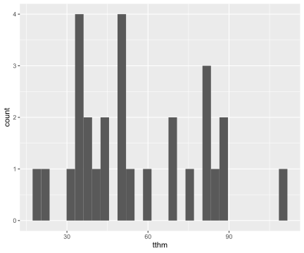
Section Summary
The normal-gamma conjugate prior for
inference about an unknown mean and variance for samples from a normal
distribution allows simple expressions for updating prior beliefs given the data. The joint normal-gamma distribution leads to the
Student \(t\) distribution for inference about \(\mu\) when \(\sigma^2\) is unknown. The Student \(t\) distribution can be used to provide
credible intervals for \(\mu\) using R or other software that provides quantiles of a standard \(t\) distribution.
For the energetic learner who is comfortable with calculus, the optional material at the end of this section provides more details on how the posterior distributions were obtained and other results in this section.
For those that are ready to move on, we will introduce Monte Carlo sampling in the next section; Monte Carlo sampling is a simulation method that will allow us to approximate distributions of transformations of the parameters without using calculus or change of variables, as well as assist exploratory data analysis of the prior or posterior distributions.
(Optional) Derivations
From Bayes Theorem we have that the joint posterior distribution is proportional to the likelihood of the parameters times the joint prior distribution \[\begin{equation} p(\mu, \sigma^2 \mid y_1, \ldots, y_n) \propto {\text{Ca}l L}(\mu, \sigma^2) p(\mu, \sigma^2). \end{equation}\] where the likelihood function for \(\mu\) and \(\sigma^2\) is proportional to \[ \begin{align} {\text{Ca}l L}(\mu, \sigma^2) \propto (\sigma^2)^{-n/2} \times \exp{ \left\{ -\frac{1}{2} \frac{\sum_{i = 1}^n(y_i - \bar{y})^2 }{\sigma^2} \right\}} & \times \exp{ \left\{ -\frac{1}{2} \frac{n (\bar{y} - \mu)^2 }{\sigma^2} \right\}} \\ \text{{function of $\sigma^2$ and data}} & \times \text{{function of $\mu$, $\sigma^2$ and data}} \end{align} \] which depends on the data only through the sum of squares \(\sum_{i = 1}^n(y_i - \bar{y})^2\) (or equivalently the sample variance \(s^2 = \sum_{i = 1}^n(y_i - \bar{y})^2/(n-1)\)) and the sample mean \(\bar{y}\). Since the likelihood function for \((\mu, \phi)\) is obtained by just substituting \(1/\phi\) for \(\sigma^2\), the likelihood may be re-expressed as \[\begin{equation} {\text{Ca}l L}(\mu, \phi) \propto \phi^{n/2} \times \exp{ \left\{ -\frac{1}{2} \phi (n-1) s^2 \right\}} \times \exp{ \left\{ -\frac{1}{2} \phi n (\bar{y} - \mu)^2 \right\}}. \end{equation}\]
This likelihood may be obtained also be obtained by using the sampling distribution for the summary statistics, where \[\bar{Y} \mid \mu, \phi \sim \textsf{Normal}(\mu, 1/(\phi n))\] and is independent of the sample variance (conditional on \(\phi\)) and has a gamma distribution \[ s^2 \mid \phi \sim \textsf{Gamma}\left(\frac{n - 1}{2}, \frac{(n-1) \phi}{2}\right) \] with degrees of freedom \(n-1\) and rate \((n-1) \phi/2\); the likelihood is the product of the two sampling distributions: \({\text{Ca}l{L}}(\mu, \phi) \propto p(s^2 \mid \phi) p(\bar{Y} \mid \phi)\).
Bayes theorem in proportional form leads to the joint posterior distribution \[\begin{align} p(\mu, \phi \mid \text{data}) \propto & {\text{Ca}l{L}}(\mu, \phi) p(\phi) p(\mu \mid \phi) \\ = & \phi^{(n-1)/2)} \exp\left\{ - \frac{ \phi (n-1) s^2 }{2}\right\} \text{ (sampling distribution for $\phi$) }\\ & \times (n\phi)^{1/2} \exp\left\{- \frac 1 2 n \phi (\bar{y} - \mu)^2 \right\} \text{ ( sampling distribution for $\mu$)} \\ & \times \phi^{\nu_0/2 -1} \exp\{- \frac{ \phi \nu_0 s^2_0}{2}\} \text{ (prior for $\phi$)} \\ & \times (n_0\phi)^{1/2} \frac{1}{\sqrt{(2 \pi)}} \exp\left\{- \frac 1 2 n_0 \phi (\mu - m_0)^2 \right\} \text{ (prior for $\mu$)} \end{align} \] where we have ignored constants that do not involve \(\phi\) or \(\mu\). Focusing on all the terms that involve \(\mu\), we can group the lines corresponding to the sampling distribution and prior for \(\mu\) together and using the factorization of likelihood and prior distributions, we may identify that \[p(\mu \mid \phi, \text{data}) \propto \exp\left\{- \frac 1 2 n \phi (\bar{y} - \mu)^2 - \frac 1 2 n_0 \phi (\mu - m_0)^2 \right\} \] where the above expression includes the sum of two quadratic expressions in the exponential. This almost looks like a normal. Can these be combined to form one quadratic expression that looks like a normal density? Yes! This is known as “completing the square”. Taking a normal distribution for a parameter \(\mu\) with mean \(m\) and precision \(\rho\), the quadratic term in the exponential may be expanded as \[\rho \times (\mu - m)^2 = \rho \mu^2 - 2 \rho \mu m + \rho m^2.\] From this we can read off that the precision is the term that multiplies the quadratic in \(\mu\) and the term that multiplies the linear term in \(\mu\) is the product of two times the mean and precision; this means that if we know the precision, we can identify the mean. The last term is the precision times the mean squared, which we will need to fill in once we identify the precision and mean.
For our posterior, we need to expand the quadratics and recombine terms to identify the new precision (the coefficient multiplying the quadratic in \(\mu\)) and the new mean (the linear term) and complete the square so that it may be factored. Any left over terms will be independent of \(\mu\) but may depend on \(\phi\). For our case, after some algebra to group terms we have \[ \begin{align} - \frac 1 2 \left( n \phi (\bar{y} - \mu)^2 + n_0 \phi (\mu - m_0)^2 \right) \\ = -\frac 1 2 \left(\phi( n + n_0) \mu^2 - 2 \phi \mu (n \bar{y} + n_0 m_0) + \phi (n \bar{y}^2 + n_0 m_0^2) \right) \end{align}\] where we can read off that the posterior precision is \(\phi(n + n_0) \equiv \phi n_n\). The linear term is not yet of the form of the posterior precision times the posterior mean (times 2), but if we multiply and divide by \(n_n = n + n_0\) it is in the appropriate form \[\begin{equation}-\frac 1 2 \left(\phi( n + n_0) \mu^2 - 2 \phi ( n + n_0) \mu \frac{(n \bar{y} + n_0 m_0) } {n + n_0} + \phi (n \bar{y}^2 + n_0 m_0^2) \right) \label{eq:quad} \end{equation}\] so that we may identify that the posterior mean is \(m_n = (n \bar{y} + n_0 m_0) /(n + n_0)\) which combined with the precision (or inverse variance) is enough to identity the conditional posterior distribution for \(\mu\). We next add the precision times the square of the posterior mean (the completing the square part), but to keep equality, we will need to subtract the term as well: \[ - \frac 1 2 \left( n \phi (\bar{y} - \mu)^2 + n_0 \phi (\mu - m_0)^2 \right) \\ = -\frac 1 2 \left(\phi n_n \mu^2 - 2 \phi n_n \mu m_n + \phi n_n m_n^2 - \phi n_n m_n^2 + \phi (n \bar{y}^2 + n_0 m_0^2) \right) \] which after factoring the quadratic leads to \[\begin{align} - \frac 1 2 \left( n \phi (\bar{y} - \mu)^2 + n_0 \phi (\mu - m_0)^2 \right) \\ = -\frac 1 2 \left(\phi n_n (\mu - m_n)^2 \right) -\frac 1 2 \left(\phi (-n_n m_n^2 + n \bar{y}^2 + n_0 m_0^2) \right) \end{align}\] where the first line is the quadratic for the posterior of \(\mu\) given \(\phi\) while the second line includes terms that involve \(\phi\) but that are independent of \(\mu\).
Substituting the expressions, we can continue to simplify the expressions further \[ \begin{aligned} p(\mu, \phi \mid \text{data}) \propto & {\text{Ca}l{L}}(\mu, \phi) p(\phi) p(\mu \mid \phi) \\ = & \phi^{(n + \nu_0 + 1 )/2 - 1} \exp\left\{ - \frac{ \phi (n-1) s^2 }{2}\right\} \times \exp\left\{- \frac{ \phi \nu_0 s^2_0}{2}\right\} \\ & \times \exp\left\{ -\frac 1 2 \left(\phi (-n_n m_n^2 + n \bar{y}^2 + n_0 m_0^2) \right) \right\} \\ & \times \exp \left\{ -\frac 1 2 \left(\phi n_n (\mu - m_n)^2 \right) \right\} \\ = & \phi^{(n + \nu_0)/2 - 1} \exp\left\{ - \frac{\phi}{2} \left( (n-1) s^2 + \nu_0 s^2_0 + \frac{ n_0 n }{n_n} ( m_0 - \bar{y})^2 \right) \right\} \quad \text{ (gamma kernel)} \\ & \times (n_n \phi)^{1/2} \exp \left\{ -\frac 1 2 \left(\phi n_n (\mu - m_n)^2 \right) \right\} \qquad \quad \text{ (normal kernel}) \end{aligned} \] until we can recognize the product of the kernels of a gamma distribution for \(\phi\) \[ \phi \mid \text{data} \sim t(v_n/2, v_n s^2_n/ 2) \] where \(\nu_n = n + \nu_0\) and \(s^2_n = \left((n-1) s^2 + n_0 s^2_0 + (m_0 - \bar{y})^2 n n_0/n_n\right)/\nu_n\) times a normal: and the kernel of a normal for \(\mu\) \[ \mu \mid \phi, \text{data} \sim \text{Normal}(m_n, (\phi n_n)^{-1}) \] where \(m_m = (n \bar{y} + n_0 m_0) /(n + n_0)\) a weighted average of the sample mean and the prior mean, and \(n_n = n + n_0\) is the sample and prior combined sample size.
Derivation of Marginal Distribution for \(\mu\)
If \(\mu\) given \(\sigma^2\) (and the data) has a normal distribution with mean \(m_m\) and variance \(\sigma^2/n_n\) and \(1/\sigma^2 \equiv \phi\) (given the data) has a gamma distribution with shape parameter \(\nu_n/2\) and rate parameter \(\nu_n s^2_n/2\)
\[\begin{aligned} \mu \mid \sigma^2, \text{data} & \sim \text{Normal}(m_m, \sigma^2/n_n) \\ 1/\sigma^2 \mid \text{data} & \sim \text{Gamma}(\nu_n/2, \nu_n s^2_n/2) \end{aligned}\] then \[\mu \mid \text{data} \sim t(\nu_n, m_m, s^2_n/n_n)\] a Student \(t\) distribution with mean \(m_m\) and scale \(s^2_n/n_n\) with degrees of freedom \(\nu_n\).
This applies to the prior as well, so that without any data we use the prior hyper-parameters \(m_0\), \(n_0\), \(\nu_0\) and \(s^2_0\) in place of the updated values with the subscript \(n\).
To simplify notation, we’ll substitute \(\phi = 1/\sigma^2\). The marginal distribution for \(\mu\) is obtained by averaging over the values of \(\sigma^2\). Since \(\sigma^2\) takes on continuous values rather than discrete, this averaging is represented as an integral \[\begin{align} p(\mu \mid \text{data}) & = \int_0^\infty p(\mu \mid \phi, \text{data}) p(\phi \mid \text{data}) d\phi \\ & = \int_0^\infty \frac{1}{\sqrt{2 \pi}} (n_n \phi)^{1/2} e^{\left\{ - \frac{n_n \phi}{2} (\mu - m_n)^2 \right\}} \frac{1}{\text{Ga}mma(\nu_n/2)} \left(\frac{\nu_n s^2_n}{2}\right)^{\nu_n/2} \phi^{\nu_n/2 - 1} e^{\left\{- \phi \nu_n s^2_n/2\right\}} \, d\phi \\ & = \left(\frac{n_n}{2 \pi}\right)^{1/2}\frac{1}{\text{Ga}mma\left(\frac{\nu_n}{2}\right)} \left(\frac{\nu_n s^2_n}{2}\right)^{\nu_n/2} \int_0^\infty \phi^{(\nu_n +1)/2 - 1} \exp{\left\{ - \phi \left( \frac{n_n (\mu - m_n)^2 + \nu_n s^2_n}{2} \right)\right\}} \, d\phi \\ \end{align}\]
where the terms inside the integral are the “kernel” of a Gamma density. We can multiply and divide by the normalizing constant of the Gamma density} \[\begin{align} p(\mu \mid \text{data}) & = \left(\frac{n_n}{2 \pi}\right)^{1/2}\frac{1}{\text{Ga}mma\left(\frac{\nu_n}{2}\right)} \left(\frac{\nu_n s^2_n}{2}\right)^{\nu_n/2} \text{Ga}mma\left(\frac{\nu_n + 1}{2}\right) \left( \frac{n_n (\mu - m_n)^2 + \nu_n s^2_n}{2} \right)^{- \frac{\nu_n + 1}{2}} \times\\ & \qquad \int_0^\infty \frac{1}{\text{Ga}mma\left(\frac{\nu_n + 1}{2}\right)} \left( \frac{n_n (\mu - m_n)^2 + \nu_n s^2_n}{2} \right)^{ \frac{\nu_n + 1}{2}} \phi^{(\nu_n +1)/2 - 1} \exp{\left\{ - \phi \left( \frac{n_n (\mu - m_n)^2 + \nu_n s^2_n}{2} \right)\right\}} \, d\phi\\ \end{align}\]
so that the term in the integral now integrates to one and the resulting distribution is \[\begin{align} p(\mu \mid \text{data}) & = \left(\frac{n_n}{2 \pi}\right)^{1/2}\frac{\text{Ga}mma\left(\frac{\nu_n + 1}{2}\right) }{\text{Ga}mma\left(\frac{\nu_n}{2}\right)} \left(\frac{\nu_n s^2_n}{2}\right)^{\nu_n/2} \left( \frac{n_n (\mu - m_n)^2 + \nu_n s^2_n}{2} \right)^{- \frac{\nu_n + 1}{2}}\\ \end{align}\]
After some algebra this simplifies to \[\begin{align} p(\mu \mid \text{data}) & = \frac{1}{\sqrt{\pi \nu_n s^2_n/n_n}} \frac{\text{Ga}mma\left(\frac{\nu_n + 1}{2}\right) } {\text{Ga}mma\left(\frac{\nu_n}{2}\right)} \left( 1 + \frac{1}{\nu_n}\frac{(\mu - m_n)^2}{s^2_n/n_n} \right)^{- \frac{\nu_n + 1}{2}}\\ \end{align}\]
and is a more standard representation for a Student \(t\) distribution and the kernel of the density is the right most term.
Monte Carlo Inference
library(statsr)
library(ggplot2)
library(ggthemes)
library(dplyr)In Section ??, we showed how to obtain the conditional posterior distribution for the mean of a normal population given the variance and the marginal posterior distribution of the precision (inverse variance). The marginal distribution of the mean, which “averaged over uncertainty” about the unknown variance could be obtained via integration, leading to the Student t distribution that was used for inference about the population mean. However, what if we are interested in the distribution of the standard deviation \(\sigma\) itself, or other transformations of the parameters? There may not be a closed-form expression for the distributions or they may be difficult to obtain.
It turns out that Monte Carlo sampling, however, is an easy way to make an inference about parameters, when we cannot analytically calculate distributions of parameters, expectations, or probabilities. Monte Carlo methods are computational algorithms that rely on repeated random sampling from distributions for making inferences. The name refers to the famous Monte Carlo Casino in Monaco, home to games of chance such as roulette.
Monte Carlo Sampling
Let’s start with a case where we know the posterior distribution. As a quick recap, recall that the joint posterior distribution for the mean \(\mu\) and the precision \(\phi = 1/\sigma^2\) under the conjugate prior for the Gaussian distribution is:
- Conditional posterior distribution for the mean \[\mu \mid \text{data}, \sigma^2 \sim \text{Normal}(m_n, \sigma^2/n_n)\]
- Marginal posterior distribution for the precision \(\phi\) or inverse variance: \[1/\sigma^2 = \phi \mid \text{data} \sim \text{Gamma}(v_n/2,s^2_n v_n/2)\]
- Marginal posterior distribution for the mean \[\mu \mid \text{data} \sim t(v_n, m_n, s^2_n/n_n)\]
For posterior inference about \(\phi\), we can generate \(S\) random samples from the Gamma posterior distribution:
\[\phi^{(1)},\phi^{(2)},\cdots,\phi^{(S)} \overset{\text{iid}}{\sim} \text{Gamma}(v_n/2,s^2_n v_n/2)\]
Recall that the term iid stands for independent and identically distributed. In other words, the \(S\) draws of \(\phi\) are independent and identically distributed from the gamma distribution.
We can use the empirical distribution (histogram) from the \(S\) samples to approximate the actual posterior distribution and the sample mean of the \(S\) random draws of \(\phi\) can be used to approximate the posterior mean of \(\phi\). Likewise, we can calculate probabilities, quantiles and other functions using the \(S\) samples from the posterior distribution. For example, if we want to calculate the posterior expectation of some function of \(\phi\), written as \(g(\phi)\), we can approximate that by taking the average of the function, and evaluate it at the \(S\) draws of \(\phi\), written as \(\frac{1}{S}\sum^S_{i=1}g(\phi^{(i)})\).
The approximation to the expectation of the function, \(E[g(\phi \mid \text{data})]\) improves
\[\frac{1}{S}\sum^S_{i=1}g(\phi^{(i)}) \rightarrow E[g(\phi \mid \text{data})]\] as the number of draws \(S\) in the Monte Carlo simulation increases.
Monte Carlo Inference: Tap Water Example
We will apply this to the tap water example from ??. First, reload the data and calculate the posterior hyper-parameters if needed.
# Prior
m_0 = 35; n_0 = 25; s2_0 = 156.25; v_0 = n_0 - 1
# Data
data(tapwater); Y = tapwater$tthm
ybar = mean(Y); s2 = var(Y); n = length(Y)
# Posterior Hyper-paramters
n_n = n_0 + n
m_n = (n*ybar + n_0*m_0)/n_n
v_n = v_0 + n
s2_n = ((n-1)*s2 + v_0*s2_0 + n_0*n*(m_0 - ybar)^2/n_n)/v_nBefore generating our Monte Carlo samples, we will set a random seed using the set.seed function in R, which takes a small integer argument.
set.seed(42)This allows the results to be replicated if you re-run the simulation at a later time.
To generate \(1,000\) draws from the gamma posterior distribution using the hyper-parameters above, we use the rgamma function R
phi = rgamma(1000, shape = v_n/2, rate=s2_n*v_n/2)The first argument to the rgamma function is the number of samples, the second is the shape parameter and, by default, the third argument is the rate parameter.
The following code will produce a histogram of the Monte Carlo samples of \(\phi\) and overlay the actual Gamma posterior density evaluated at the draws using the dgamma function in R.
df = data.frame(phi = sort(phi))
df = mutate(df,
density = dgamma(phi,
shape = v_n/2,
rate=s2_n*v_n/2))
ggplot(data=df, aes(x=phi)) +
geom_histogram(aes(x=phi, y=..density..), bins = 50) +
geom_density(aes(phi, ..density..), color="black") +
geom_line(aes(x=phi, y=density), color="orange") +
xlab(expression(phi)) + theme_tufte()Figure 16: Monte Carlo approximation of the posterior distribution of the precision from the tap water example
Figure 16 shows the histogram of the \(1,000\) draws of \(\phi\) generated from the Monte Carlo simulation, representing the empirical distribution approximation to the gamma posterior distribution. The orange line represents the actual gamma posterior density, while the black line represents a smoothed version of the histogram.
We can estimate the posterior mean or a 95% equal tail area credible region using the Monte Carlo samples using R
mean(phi)## [1] 0.002165663quantile(phi, c(0.025, 0.975))## 2.5% 97.5%
## 0.001394921 0.003056304The mean of a gamma random variable is the shape/rate, so we can compare the Monte Carlo estimates to the theoretical values
# mean (v_n/2)/(v_n*s2_n/2)
1/s2_n## [1] 0.002174492qgamma(c(0.025, 0.975), shape=v_n/2, rate=s2_n*v_n/2)## [1] 0.001420450 0.003086519where the qgamma function in R returns the desired quantiles provided as the first argument.
We can see that we can estimate the mean accurately to three significant digits, while the quantiles are accurate to two. It increase our accuracy, we would need to increase \(S\).
Exercise Try increasing the number of simulations \(S\) in the Monte Carlo simulation to \(10,000\), and see how the approximation changes.
Monte Carlo Inference for Functions of Parameters
Let’s see how to use Monte Carlo simulations to approximate the distribution of \(\sigma\). Since \(\sigma = 1/\sqrt{\phi}\), we simply apply the transformation to the \(1,000\) draws of \(\phi\) to obtain a random sample of \(\sigma\) from its posterior distribution. We can then estimate the posterior mean of \(\sigma\) by calculating the sample mean of the 1,000 draws.
sigma = 1/sqrt(phi)
mean(sigma) # posterior mean of sigma## [1] 21.80516Similarly, we can obtain a 95% credible interval for \(\sigma\) by finding the sample quantiles of the distribution.
quantile(sigma, c(0.025, 0.975))## 2.5% 97.5%
## 18.08847 26.77474and finally approximate the posterior distribution using a smoothed density estimate
df = data.frame(sigma = sqrt(1/phi))
post = ggplot(data=df, aes(x=sigma)) +
geom_histogram(aes(x=sigma, y=..density..), bins = 50) +
geom_density(aes(sigma, ..density..), color="black") +
xlab(expression(sigma)) + theme_tufte()
print(post)Figure 17: Monte Carlo approximation of the posterior distribution of the standard deviation from the tap water example
Exercise
Using the \(10,000\) draws of \(\phi\) for the tap water example, create a histogram for \(\sigma\) with a smoothed density overlay for the tap water example.
Summary
To recap, we have introduced the powerful method of Monte Carlo simulation for posterior inference. Monte Carlo methods provide estimates of expectations, probabilities, and quantiles of distributions from the simulated values. Monte Carlo simulation also allows us to approximate distributions of functions of the parameters, or the transformations of the parameters where it may be difficult to get exact theoretical values.
Next, we will discuss predictive distributions and show how Monte Carlo simulation may be used to help choose prior hyperparameters, using the prior predictive distribution of data and draw samples from the posterior predictive distribution for predicting future observations.
library(statsr)
library(ggplot2)data(tapwater)
m_0 = 35;
n_0 = 25;
s2_0 = 156.25;
v_0 = n_0 - 1
Y = tapwater$tthm
ybar = mean(Y)
s2 = round(var(Y),1)
n = length(Y)
n_n = n_0 + n
m_n = round((n*ybar + n_0*m_0)/n_n, 1)
v_n = v_0 + n
s2_n = round( ((n-1)*s2 + v_0*s2_0 + n_0*n*(m_0 - ybar)^2/n_n)/v_n, 1)
L = qt(.025, v_n)*sqrt(s2_n/n_n) + m_n
U = qt(.975, v_n)*sqrt(s2_n/n_n) + m_nIn this section, we will discuss prior and posterior predictive distributions of the data and show how Monte Carlo sampling from the prior predictive distribution can help select hyper-parameters, while sampling from the posterior predictive distribution can be used for predicting future events or model checking.
Prior Predictive Distribution
We can obtain the prior predictive distribution of the data from the joint distribution of the data and the parameters \((\mu, \sigma^2)\) or equivalently \((\mu, \phi)\), where \(\phi = 1/\sigma^2\) is the precision:
Prior:
\[ \begin{aligned} \phi &\sim \textsf{Gamma}\left(\frac{v_0}{2}, \frac{v_0 s^2_0}{2} \right) \\ \sigma^2 & = 1/\phi \\ \mu \mid \sigma^2 &\sim \textsf{N}(m_0, \sigma^2/n_0) \end{aligned} \]
Sampling model:
\[Y_i \mid \mu,\sigma^2 \overset{\text{iid}}{\sim} \text{Normal}(\mu, \sigma^2) \]
Prior predictive distribution for \(Y\):
\[\begin{aligned} p(Y) &= \iint p(Y \mid \mu,\sigma^2) p(\mu \mid \sigma^2) p(\sigma^2) d\mu \, d\sigma^2 \\ Y &\sim t(v_0, m_0, s_0^2+s_0^2/n_0) \end{aligned}\]
By averaging over the possible values of the parameters from the prior distribution in the joint distribution, technically done by a double integral, we obtain the Student t as our prior predictive distribution. For those interested, details of this derivation are provided later in an optional section. This distribution of the observables depends only on our four hyper-parameters from the normal-gamma family. We can use Monte Carlo simulation to sample from the prior predictive distribution to help elicit prior hyper-parameters as we now illustrate with the tap water example from earlier.
Tap Water Example (continued)
A report from the city water department suggests that levels of TTHM are expected to be between 10-60 parts per billion (ppb). Let’s see how we can use this information to create an informative conjugate prior.
Prior Mean First, the normal distribution and Student t distributions are symmetric around the mean or center parameter, so we will set the prior mean \(\mu\) to be at the midpoint of the interval 10-60, which would lead to \[m_0 = (60+10)/2 = 35\] as our prior hyper-parameter \(m_0\).
Prior Variance Based on the empirical rule for bell-shaped distributions, we would expect that 95% of observations are within plus or minus two standard deviations from the mean, \(\pm 2\sigma\) of \(\mu\). Using this we expect that the range of the data should be approximately \(4\sigma\). Using the values from the report, we can use this to find our prior estimate of \(\sigma\), \(s_0 = (60-10)/4 = 12.5\) or \[s_0^2 = [(60-10)/4]^2 = 156.25\]
Prior Sample Size and Degrees of Freedom To complete the specification, we also need to choose the prior sample size \(n_0\) and degrees of freedom \(v_0\). For a sample of size \(n\), the sample variance has \(n-1\) degrees of freedom. Thinking about a possible historic set of data of size \(n_0\) that led to the reported interval, we will adopt that rule to obtain the prior degrees of freedom \(v_0 = n_0 - 1\), leaving only the prior sample size to be determined. We will draw samples from the prior predictive distribution and modify \(n_0\) so that the simulated data agree with our prior assumptions.
Sampling from the Prior Predictive in R
The following R code shows a simulation from the predictive distribution with the prior sample size \(n_0 = 2\). Please be careful to not confuse the prior sample size, \(n_0\), that represents the precision of our prior information with the number of Monte Carlo simulations, \(S = 10000\), that are drawn from the distributions. These Monte Carlo samples are used to estimate quantiles of the prior predictive distribution and a large value of \(S\) reduces error in the Monte Carlo approximation.
m_0 = (60+10)/2; s2_0 = ((60-10)/4)^2;
n_0 = 2; v_0 = n_0 - 1
set.seed(1234)
S = 10000
phi = rgamma(S, v_0/2, s2_0*v_0/2)
sigma = 1/sqrt(phi)
mu = rnorm(S, mean=m_0, sd=sigma/(sqrt(n_0)))
Y = rnorm(S, mu, sigma)
quantile(Y, c(0.025,0.975))## 2.5% 97.5%
## -140.1391 217.7050Let’s try to understand the code. After setting the prior hyper-parameters and random seed, we begin by simulating \(\phi\) from its gamma prior distribution. We then transform \(\phi\) to calculate \(\sigma\). Using the draws of \(\sigma\), we feed that into the rnorm function to simulate \(S\) values of \(\mu\) for each value of \(\sigma\). The Monte Carlo draws of \(\mu,\sigma\) are used to generate \(S\) possible values of TTHM denoted by \(Y\). In the above code we are exploiting that all of the functions for simulating from distributions can be vectorized, i.e. we can provide all \(S\) draws of \(\phi\) to the functions and get a vector result back without having to write a loop. Finally, we obtain the empirical quantiles from our Monte Carlo sample using the quantile function to approximate the actual quantiles from the prior predictive distriubtion.
This forward simulation propagates uncertainty in \(\mu\) and \(\sigma\) to the prior predictive distribution of the data. Calculating the sample quantiles from the samples of the prior predictive for \(Y\), we see that the 95% predictive interval for TTHM includes negative values. Since TTHM cannot be negative, we can adjust \(n_0\) and repeat. Since we need a narrower interval in order to exclude zero, we can increase \(n_0\) until we achieve the desired quantiles.
After some trial and error, we find that the prior sample size of 25, the empirical quantiles from the prior predictive distribution are close to the range of 10 to 60 that we were given as prior information.
m_0 = (60+10)/2; s2_0 = ((60-10)/4)^2;
n_0 = 25; v_0 = n_0 - 1
set.seed(1234)
phi = rgamma(10000, v_0/2, s2_0*v_0/2)
sigma = 1/sqrt(phi)
mu = rnorm(10000, mean=m_0, sd=sigma/(sqrt(n_0)))
y = rnorm(10000, mu, sigma)
quantile(y, c(0.025,0.975))## 2.5% 97.5%
## 8.802515 61.857350Figure 18 shows an estimate of the prior distribution of \(\mu\) in gray and the more dispersed prior predictive distribution in TTHM in orange, obtained from the Monte Carlo samples.
# The palette with grey:
cbPalette <- c("#999999", "#E69F00", "#56B4E9", "#009E73", "#F0E442", "#0072B2", "#D55E00", "#CC79A7")
nsim = length(mu)
df = data.frame(parameter = c(rep("mu", nsim), rep("Y", nsim)), x = c(mu, y))
#priorpred= ggplot(data=df, aes(x=y)) + geom_histogram(aes(x=y, y=..density..)) +
# geom_density() + geom_density(aes(x=mu), col="blue")
ggplot(data=df, aes(x=y)) +
geom_density(aes(x=x, colour=parameter, linetype=parameter),
size=1.2, show.legend=FALSE) +
stat_density(aes(x=x, colour=parameter, linetype=parameter),
geom="line",position="identity", size=1.2) +
xlab("TTHM (ppb)") + scale_colour_manual(values=cbPalette) +
theme(panel.background = element_rect(fill = "transparent", colour = NA),
legend.key = element_rect(colour = "transparent", fill = NA),
plot.background = element_rect(fill = "transparent", colour = NA),
legend.position = c(.75, .75),
text = element_text(size=15))Figure 18: Prior density
Using the Monte Carlo samples, we can also estimate the prior probability of negative values of TTHM by counting the number of times the simulated values are less than zero out of the total number of simulations.
sum(y < 0)/length(y) # P(Y < 0) a priori## [1] 0.0049With the normal prior distribution, this probability will never be zero, but may be acceptably small, so we may use the conjugate normal-gamma model for analysis.
Posterior Predictive
We can use the same strategy to generate samples from the predictive distribution of a new measurement \(Y_{n+1}\) given the observed data. In mathematical terms, the posterior predictive distribution is written as
\[Y_{n+1} \mid Y_1, \ldots, Y_n \sim t(v_n, m_n, s^2_n (1 + 1/n_n))\]
In the code, we replace the prior hyper parameters with the posterior hyper parameters from last time.
set.seed(1234)
phi = rgamma(10000, v_n/2, s2_n*v_n/2)
sigma = 1/sqrt(phi)
post_mu = rnorm(10000, mean=m_n, sd=sigma/(sqrt(n_n)))
pred_y = rnorm(10000,post_mu, sigma)
quantile(pred_y, c(.025, .975))## 2.5% 97.5%
## 3.280216 89.830212Figure 19 shows the Monte Carlo approximation to the prior distribution of \(\mu\), and the posterior distribution of \(\mu\) which is shifted to the right. The prior and posterior predictive distributions are also depicted, showing how the data have updated the prior information.
nsim = length(post_mu)
df = data.frame(parameter = c(rep("prior mu", nsim),
rep("prior predictive Y", nsim), rep("posterior mu", nsim), rep("posterior predictive Y", nsim)), x = c(mu, y, post_mu, pred_y))
ggplot(data=df, aes(x=pred_y)) +
geom_density(aes(x=x, colour=parameter, linetype=parameter),
size=1.2, show.legend=FALSE) +
stat_density(aes(x=x, colour=parameter, linetype=parameter),
geom="line",position="identity", size=1.2) +
xlab("TTHM (ppb)") + scale_colour_manual(values=cbPalette) +
xlab("TTHM (ppb)") +
scale_colour_manual(values=cbPalette) +
theme(panel.background = element_rect(fill = "transparent", colour = NA),
legend.key = element_rect(colour = "transparent", fill = NA),
plot.background = element_rect(fill = "transparent", colour = NA),
legend.position=c(.75, .75),
text = element_text(size=15))Figure 19: Posterior densities
Using the Monte Carlo samples from the posterior predictive distribution, we can estimate the probability that a new TTHM sample will exceed the legal limit of 80 parts per billion, which is approximately 0.06.
sum(pred_y > 80)/length(pred_y) # P(Y > 80 | data)## [1] 0.0619Summary
By using Monte Carlo methods, we can obtain prior and posterior predictive distributions of the data.
Sampling from the prior predictive distribution can help with the selection of prior hyper parameters and verify that these choices reflect the prior information that is available.
Visualizing prior predictive distributions based on Monte Carlo simulations can help explore implications of our prior assumptions such as the choice of the hyper parameters or even assume distributions.
If samples are incompatible with known information, such as support on positive values, we may need to modify assumptions and look at other families of prior distributions.
library(statsr)
library(ggplot2)In Section ??, we demonstrated how to specify an informative prior distribution for inference about TTHM in tapwater using additional prior information. The resulting informative Normal-Gamma prior distribution had an effective prior sample size that was comparable to the observed sample size to be compatible with the reported prior interval.
There are, however, situations where you may wish to provide an analysis that does not depend on prior information. There may be cases where prior information is simply not available. Or, you may wish to present an objective analysis where minimal prior information is used to provide a baseline or reference analysis to contrast with other analyses based on informative prior distributions. Or perhaps, you want to use the Bayesian paradigm to make probability statements about parameters, but not use any prior information. In this section, we will examine the qustion of Can you actually perform a Bayesian analysis without using prior information? We will present reference priors for normal data, which can be viewed as a limiting form of the Normal-Gamma conjugate prior distribution.
Conjugate priors can be interpreted to be based on a historical or imaginary prior sample. What happens in the conjugate Normal-Gamma prior if we take our prior sample size \(n_0\) to go to zero? If we have no data, then we will define the prior sample variance \(s_0^2\) to go to 0, and based on the relationship between prior sample sized and prior degrees of freedom, we will let the prior degrees of freedom go to the prior sample size minus one, or negative one, i.e. \(v_0 = n_0 - 1 \rightarrow -1\).
With this limit, we have the following properties:
The posterior mean goes to the sample mean.
The posterior sample size is the observed sample size.
The posterior degrees of freedom go to the sample degrees of freedom.
The posterior variance parameter goes to the sample variance.
In this limit, the posterior hyperparameters do not depend on the prior hyperparameters.
Since \(n_0 \rightarrow 0, s^2_0 \rightarrow 0, v_0 = n_0 - 1 \rightarrow -1\), we have in mathematical terms:
\[\begin{aligned} m_n &= \frac{n \bar{Y} + n_0 m_0} {n + n_0} \rightarrow \bar{Y} \\ n_n &= n_0 + n \rightarrow n \\ v_n &= v_0 + n \rightarrow n-1 \\ s^2_n &= \frac{1}{v_n}\left[s^2_0 v_0 + s^2 (n-1) + \frac{n_0 n}{n_n} (\bar{Y} - m_0)^2 \right] \rightarrow s^2 \end{aligned}\]
This limiting normal-gamma distribution, \(\textsf{NormalGamma}(0,0,0,-1)\), is not really a normal-gamma distribution, as the density does not integrate to 1. The form of the limit can be viewed as a prior for \(\mu\) that is proportional to a constant, or uniform/flat on the whole real line. And a prior for the variance is proportional to 1 over the variance. The joint prior is taken as the product of the two.
\[\begin{aligned} p(\mu \mid \sigma^2) & \propto 1 \\ p(\sigma^2) & \propto 1/\sigma^2 \\ p(\mu, \sigma^2) & \propto 1/\sigma^2 \end{aligned}\]
This is refered to as a reference prior because the posterior hyperparameters do not depend on the prior hyperparameters.
In addition, \(\textsf{NormalGamma}(0,0,0,-1)\) is a special case of a reference prior, known as the independent Jeffreys prior. While Jeffreys used other arguments to arrive at the form of the prior, the goal was to have an objective prior invariant to shifting the data by a constant or multiplying by a constant.
Now, a naive approach to constructing a non-informative distribution might be to use a uniform distribution to represent lack of knowledge. However, would you use a uniform distribution for \(\sigma^2\), or a uniform distribution for the precision \(1/\sigma^2\)? Or perhaps a uniform distribution for \(\sigma\)? These would all lead to different posteriors with little justification for any of them. This ambiguity led Sir Harold Jeffreys to propose reference distributions for the mean and variance for situations where prior information was limited. These priors are invariant to the units of the data.
The unnormalized priors that do not integrate to a constant are called improper distributions. An important consideration in using them is that one cannot generate samples from the prior or the prior predictive distribution to data and are referred to as non-generative distributions.
While the reference prior is not a proper prior distribution, and cannot reflect anyone’s actual prior beliefs, the formal application phase rule can still be used to show that the posterior distribution is a valid normal gamma distribution, leading to a formal phase posterior distribution. That depends only on summary statistics of the data.
The posterior distribution \(\textsf{NormalGamma}(\bar{Y}, n, s^2, n-1)\) breaks down to
\[\begin{aligned} \mu \mid \sigma^2, \text{data} & \sim \text{Normal}(\bar{Y}, \sigma^2/n) \\ 1/\sigma^2 \mid \text{data} & \sim \text{Gamma}((n-1)/2, s^2(n - 1)/2). \end{aligned}\]
- Under the reference prior \(p(\mu, \sigma^2) \propto 1/\sigma^2\), the posterior distribution after standardizing \(\mu\) has a Student \(t\) distribution with \(n-1\) degrees of freedom.
\[\frac{\mu - \bar{Y}}{\sqrt{s^2/n}} \mid \text{data} \sim t(n-1, 0, 1)\]
- Prior to seeing the data, the distribution of the standardized sample mean given \(\mu\) and \(\sigma\) also has a Student t distribution.
\[\frac{\mu - \bar{Y}}{\sqrt{s^2/n}} \mid \mu, \sigma^2 \sim t(n-1, 0, 1) \]
- Both frequentist sampling distributions and Bayesian reference posterior distributions lead to intervals of this form:
\[(\bar{Y} - t_{1 - \alpha/2}\times s/\sqrt{n}, \, \bar{Y} + t_{1 - \alpha/2} \times s/\sqrt{n})\]
- However, only the Bayesian approach justifies the probability statements about \(\mu\) being in the interval after seeing the data.
\[P(\bar{Y} - t_{1 - \alpha/2}\times s/\sqrt{n} < \mu < \bar{Y} + t_{1 - \alpha/2}\times s/\sqrt{n}) = 1 - \alpha\]
We can use either analytic expressions based on the t-distribution, or Monte Carlo samples from the posterior predictive distribution, to make predictions about a new sample.
library(statsr)
data(tapwater)
# data
m_0 = 35; n_0 = 25; s2_0 = ((60-10)/4)^2; v_0 = n_0 - 1
data(tapwater); Y = tapwater$tthm
ybar = round(mean(Y), 1); s2 = round(var(Y), 1); n = length(Y)
n_n = n_0 + n
m_n = round((n*ybar + n_0*m_0)/n_n, 1)
v_n = v_0 + n
s2_n = round(((n-1)*s2 + v_0*s2_0 + n_0*n*(m_0 - ybar)^2/n_n)/v_n, 1)
set.seed(8675309)
# post-pred
phi = rgamma(10000, v_n/2, s2_n*v_n/2)
sigma = 1/sqrt(phi)
mu = rnorm(10000, mean=m_n, sd=sigma/(sqrt(n_n)))
y = rnorm(10000, mu, sigma)Here is some code to generate the Monte Carlo samples from the tap water example:
phi = rgamma(10000, (n-1)/2, s2*(n-1)/2)
sigma = 1/sqrt(phi)
post_mu = rnorm(10000, mean=ybar, sd=sigma/(sqrt(n)))
pred_y = rnorm(10000,post_mu, sigma)
quantile(pred_y, c(.025, .975))## 2.5% 97.5%
## 6.692877 104.225954Using the Monte Carlo samples, Figure 20 shows the posterior distribution based on the informative Normal-Gamma prior and the reference prior. Both the posterior distribution for \(\mu\) and the posterior predictive distribution for a new sample are shifted to the right, and are centered at the sample mean. The posterior for \(\mu\) under the reference prior is less concentrated around its mean than the posterior under the informative prior, which leads to an increased posterior sample size and hence increased precision.
cbPalette <- c("#999999", "#E69F00", "#56B4E9", "#000000", "#009E73", "#0072B2", "#D55E00", "#CC79A7")
nsim = length(post_mu)
df = data.frame(
parameter = c(rep("NG posterior mu", nsim), rep("NG posterior predictive", nsim),
rep("ref posterior mu", nsim), rep("ref posterior predictive", nsim)),
x = c(mu, y, post_mu, pred_y))
ggplot(data=df, aes(x=pred_y)) +
geom_density(aes(x=x, colour=parameter, linetype=parameter),
show_legend=FALSE, size=1.0)+
stat_density(aes(x=x, colour=parameter, linetype=parameter),
geom="line",position="identity") + xlab("TTHM (ppb)") +
scale_colour_manual(values=cbPalette) +
theme(panel.background = element_rect(fill = "transparent", colour = NA),
legend.key = element_rect(colour = "transparent", fill = NA),
plot.background = element_rect(fill = "transparent", colour = NA),
legend.position=c(.76, .85),
text = element_text(size=15))Figure 20: Comparison of posterior densities
The posterior probability that a new sample will exceed the legal limit of 80 ppb under the reference prior is roughly 0.15, which is more than double the probability of 0.06 from the posterior under the informative prior.
sum(pred_y > 80)/length(pred_y) # P(Y > 80 | data)## [1] 0.1534In constructing the informative prior from the reported interval, there are two critical assumptions. First, the prior data are exchangeable with the observed data. Second, the conjugate normal gamma distribution is suitable for representing the prior information. These assumptions may or may not be verifiable, but they should be considered carefully when using informative conjugate priors.
In the case of the tap water example, there are several concerns: One, it is unclear that the prior data are exchangeable with the observed data. For example, water treatment conditions may have changed. Two, the prior sample size was not based on a real prior sample, but instead selected so that the prior predictive intervals under the normal gamma model agreed with the prior data. As we do not have access to the prior data, we cannot check assumptions about normality that would help justify the prior. Other skewed distributions may be consistent with the prior interval, but lead to different conclusions.
To recap, we have introduced a reference prior for inference for normal data with an unknown mean and variance. Reference priors are often part of a prior sensitivity study and are used when objectivity is of utmost importance.
If conclusions are fundamentally different with an informative prior and a reference prior, one may wish to carefully examine assumputions that led to the informative prior.
Is the prior information based on a prior sample that is exchangable with the observed data?
Is the normal-gamma assumption appropriate?
Informative priors can provide more accurate inference when data are limited, and the transparency of explicitly laying out prior assumptions is an important aspect of reproducible research. However, one needs to be careful that certain prior assumptions may lead to un-intended consequences.
Next, we will investigate a prior distribution that is a mixture of conjugate priors, so the new prior distribution provides robustness to prior mis-specification in the prior sample size.
While we will no longer have nice analytical expressions for the posterior, we can simulate from the posterior distribution using a Monte Carlo algorithm called Markov chain Monte Carlo (MCMC).
library(statsr)
library(ggplot2)In this section, we will describe priors that are constructed as a mixture of conjugate priors – in particular, the Cauchy distribution. As these are no longer conjugate priors, nice analytic expressions for the posterior distribution are not available. However, we can use a Monte Carlo algorithm called Markov chain Monte Carlo (MCMC) for posterior inference.
In many situations, we may have reasonable prior information about the mean \(\mu\), but we are less confident in how many observations our prior beliefs are equivalent to. We can address this uncertainty in the prior sample size, through an additional prior distribution on a \(n_0\) via a hierarchical prior.
The hierarchical prior for the normal gamma distribution is written as \[\begin{aligned} \mu \mid \sigma^2, n_0 & \sim \text{Normal}(m_0, \sigma^2/n_0) \\ n_0 \mid \sigma^2 & \sim \text{Gamma}(1/2, r^2/2) \end{aligned}\]
If \(r=1\), then this corresponds to a prior expected sample size of one because the expectation of \(\text{Gamma}(1/2,1/2)\) is one.
The marginal prior distribution from \(\mu\) can be attained via integration, and we get
\[\mu \mid \sigma^2 \sim \text{Ca}(m_0, \sigma^2 r^2)\]
This is a Cauchy distribution centered at the prior mean \(m_0\), with the scale parameter \(\sigma^2 r^2\). The probability density function (pdf) is:
\[p(\mu \mid \sigma) = \frac{1}{\pi \sigma r} \left( 1 + \frac{(\mu - m_0)^2} {\sigma^2 r^2} \right)^{-1}\]
The Cauchy distribution does not have a mean or standard deviation, but the center (location) and the scale play a similar role to the mean and standard deviation of the normal distribution. The Cauchy distribution is a special case of a student \(t\) distribution with one degree of freedom.
As Figure 21 shows, the standard Cauchy distribution with \(r=1\) and the standard normal distribution \(\text{Normal}(0,1)\) are centered at the same location. But the Cauchy distribution has heavier tails – more probability on extreme values than the normal distribution with the same scale parameter \(\sigma\). Cauchy priors were recommended by Sir Harold Jeffreys as a default objective prior for testing.
cbPalette <- c("#999999", "#E69F00", "#56B4E9", "#000000", "#009E73", "#0072B2", "#D55E00", "#CC79A7")
N = 1000
x=seq(-5,5, length=N)
no = dnorm(x)
ca = dt(x, 1)
df = data.frame(x= c(x,x), y = c(no, ca), distribution = rep(c("Normal", "Cauchy"), c(N, N)))
ggplot(data=df, aes(x=x,y=y, group=distribution)) +
geom_line(aes(linetype=distribution, colour=distribution), size=1.5) +
xlab("y") +
ylab("density") +
scale_colour_manual(values=cbPalette) +
theme(panel.background = element_rect(fill = "transparent", colour = NA),
legend.key = element_rect(colour = "transparent", fill = NA),
plot.background = element_rect(fill = "transparent", colour = NA),
legend.position=c(.75, .75),
text = element_text(size=15))Figure 21: Cauchy distribution
Markov Chain Monte Carlo (MCMC)
library(statsr)
library(ggplot2)The Cauchy prior described in Section ?? is not a conjugate prior, and therefore, the posterior distribution from \((\mu \mid \sigma^2)\), is not a Cauchy or any well-known distribution. Fortunately, the conditional distribution of \((\mu, \sigma^2 \mid n_0, \text{data})\), is normal-gamma and easy to simulate from, as we learned in the previous sections. The conditional distribution of \((n_0 \mid \mu, \sigma^2, \text{data}\)) is a gamma distribution, also easy to simulate from the given \(\mu, \sigma^2\).
It turns out that if we alternate generating Monte Carlo samples from these conditional distributions, the sequence of samples converges to samples from the joint distribution of \((\mu, \sigma^2, n_0)\), as the number of simulated values increases. The Monte Carlo algorithm we have just described is a special case of Markov chain Monte Carlo (MCMC), known as the Gibbs sampler.
Let’s look at the pseudo code for the algorithm.
S = 10000
sigma2 = rep(NA, S)
mu=rep(NA, S)
n_0 = rep(NA, S)
m_0 = 35
r = 1
p_mu = function(...) {}
p_sigma2 = function(...) {}
p_n_0 = function(...) {}# initialize MCMC
sigma2[1] = 1; n_0[1]=1; mu[1]=m_0
#draw from full conditional distributions
for (i in 2:S) {
mu[i] = p_mu(sigma2[i-1], n_0[i-1], m_0, r, data)
sigma2[i] = p_sigma2(mu[i], n_0[i-1], m_0, r, data)
n_0[i] = p_n_0(mu[i], sigma2[i], m_0, r, data)
}We start with the initial values of each of the parameters for \(i=1\). In theory, these can be completely arbitrary, as long as they are allowed values for the parameters.
For each iteration \(i\), the algorithm will cycle through generating each parameter, given the current value of the other parameters. The functions , , and return a simulated value from the respective distribution conditional on the inputs.
Whenever we update a parameter, we use the new value in the subsequent steps as the \(n\) draws for \(\sigma, n_0\). We will repeat this until we reach iteration \(S\), leading to a dependent sequence of s draws from the joint posterior distribution.
Incorporating the tap water example in Section ??, we will use MCMC to generate samples under the Cauchy prior. We set 35 as the location parameter and \(r=1\). To complete our prior specification, we use the Jeffrey’s reference prior on \(\sigma^2\). This combination is referred to as the Jeffrey’s Zellner-Siow Cauchy prior or “JZS” in the BayesFactor branch of the R package.
library(statsr)
data(tapwater)
m_0 = 35; n_0 = 25; s2_0 = ((60-10)/4)^2; v_0 = n_0 - 1
Y = tapwater$tthm
ybar = round(mean(Y), 1); s2 = round(var(Y), 1); n = length(Y)
n_n = n_0 + n
m_n = round((n*ybar + n_0*m_0)/n_n, 1)
#v_n = v_0 + n
v_n = n
#s2_n = round(((n-1)*s2 + v_0*s2_0 + n_0*n*(m_0 - ybar)^2/n_n)/v_n, 1)
s2_n = round(((n-1)*s2 + n_0*n*(m_0 - ybar)^2/n_n)/v_n, 1)
set.seed(8675309)
nsim = 10000
phi = rgamma(nsim, v_n/2, s2_n*v_n/2)
sigma = 1/sqrt(phi)
mu = rnorm(nsim, mean=m_n, sd=sigma/(sqrt(n_n)))
y = rnorm(nsim, mu, sigma)
# reference
phi = rgamma(nsim, (n-1)/2, s2*(n-1)/2)
sigma = 1/sqrt(phi)
post_mu = rnorm(nsim, mean=ybar, sd=sigma/(sqrt(n)))
pred_y = rnorm(nsim,post_mu, sigma)
library(BayesFactor)
tap.JZS = bayes_inference(y=tthm, data=tapwater, statistic="mean",
mu_0 = 35, rscale=1, prior="JZS", nsim=nsim,
type="ci", method="sim")## Single numerical variable
## n = 28, y-bar = 55.5239, s = 23.254
## (Assuming Zellner-Siow Cauchy prior: mu | sigma^2 ~ C(35, 1*sigma)
## (Assuming improper Jeffreys prior: p(sigma^2) = 1/sigma^2
##
## Posterior Summaries
## 2.5% 25% 50% 75% 97.5%
## mu 45.4636624 51.833826 54.875042 57.94061 63.97510
## sigma 18.5863728 21.767884 23.777637 26.12107 31.99166
## n_0 0.2278052 2.519188 6.027598 12.29178 35.70218
##
## 95% CI for mu: (45.4637, 63.9751)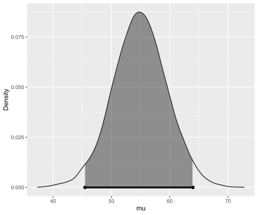
mu.cauchy = tap.JZS$mu
pred_y_cauchy = tap.JZS$samples[,1] + rnorm(nsim, 0, sqrt(tap.JZS$samples[,2]))
df = data.frame(
parameter = c(rep("NG posterior mu", nsim),
rep("NG posterior predictive", nsim),
rep("JZS posterior mu", nsim), rep("JZS posterior predictive", nsim)),
x = c(mu, y, mu.cauchy, pred_y_cauchy)
)bayes_inference(y=tthm, data=tapwater, statistic="mean",
mu_0 = 35, rscale=1, prior="JZS",
type="ci", method="sim")## Single numerical variable
## n = 28, y-bar = 55.5239, s = 23.254
## (Assuming Zellner-Siow Cauchy prior: mu | sigma^2 ~ C(35, 1*sigma)
## (Assuming improper Jeffreys prior: p(sigma^2) = 1/sigma^2
##
## Posterior Summaries
## 2.5% 25% 50% 75% 97.5%
## mu 45.5713714 51.820910 54.87345 57.87171 64.20477
## sigma 18.4996738 21.810376 23.84572 26.30359 32.11330
## n_0 0.2512834 2.512059 6.13636 12.66747 36.37425
##
## 95% CI for mu: (45.5714, 64.2048)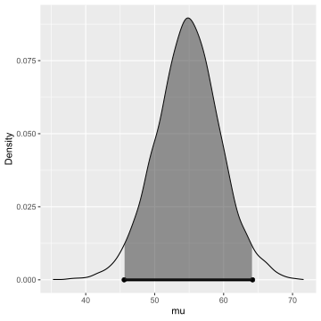
Using the function from the package, we can obtain summary statistics and a plot from the MCMC output – not only \(\mu\), but also inference about \(\sigma^2\) and the prior sample size.
The posterior mean under the JZS model is much closer to the sample mean than what the normal gamma prior used previously. Under the informative normal gamma prior, the sample made a 55.5, about eight standard deviations above the mean – a surprising value under the normal prior. Under the Cauchy prior, the informative prior location has much less influence.
This is the robustness property of the Cauchy prior, leading the posterior to put more weight on the sample mean than the prior mean, especially when the prior location is not close to the sample mean. We can see that the central 50% interval for \(n_0\) is well below the value 25 used in the normal prior, which placed almost equal weight on the prior in sample mean.
Using the MCMC draws of \(\mu, \sigma\), we can obtain Monte Carlo samples from the predictive distribution of \(y\), by plugging \(\mu\) and \(\sigma\) into the corresponding functions. Figure 22 compares the posterior densities estimated from the simulative values of \(\mu\) and the predicted draws of TTHM under the Jeffrey Zellner-Siow prior, and the informative normal prior from \(\mu\) with \(n_0 = 25\) and the reference prior on \(\sigma^2\).
cbPalette <- c("#999999", "#E69F00", "#56B4E9", "#000000", "#009E73", "#0072B2", "#D55E00", "#CC79A7")
ggplot(data=df, aes(x=pred_y)) +
geom_density(aes(x=x, colour=parameter, linetype=parameter), show.legend =FALSE, size=1.2)+
stat_density(aes(x=x, colour=parameter, linetype=parameter),
geom="line",position="identity") +
xlab("TTHM (ppb)") +
scale_colour_manual(values=cbPalette) +
theme(panel.background = element_rect(fill = "transparent", colour = NA),
legend.key = element_rect(colour = "transparent", fill = NA),
plot.background = element_rect(fill = "transparent", colour = NA),
legend.position=c(.8, .8),
text = element_text(size=15))Figure 22: Comparison of posterior densities
To recap, we have shown how to create more flexible prior distributions, such as the Cauchy distribution using mixtures of conjugate priors. As the posterior distributions are not available in closed form, we demonstrated how MCMC can be used for inference using the hierarchical prior distribution. Starting in the late 1980’s, MCMC algorithms have led to an exponential rise in the use of Bayes in methods, because complex models built through hierarchical distributions suddenly were tractable. The Cauchy prior is well-known for being robust prior mis-specifications. For example, having a prior mean that is far from the observed mean. This provides an alternative to the reference prior as a default or objective distribution that is proper.
In the next sections, we will return to Bayes factors and hypothesis testing where the Cauchy prior plays an important role.
5 Hypothesis Testing with Normal Populations
In Section ??, we described how the Bayes factors can be used for hypothesis testing. Now we will use the Bayes factors to compare normal means, i.e., test whether the mean of a population is zero or compare the means of two groups of normally-distributed populations. We divide this mission into three cases: known variance for a single population, unknown variance for a single population using paired data, and unknown variance using two independent groups.
Also note that some of the examples in this section use an updated version of the bayes_inference function.
If your local output is different from what is seen in this chapter, or the provided code fails to run for you please make sure that you have the most recent version of the package.
Bayes Factors for Testing a Normal Mean: variance known
library(ggplot2)cbPalette <- c("#999999", "#E69F00", "#56B4E9", "#000000", "#009E73", "#0072B2", "#D55E00", "#CC79A7")
bf12 = function(n, Z, n0=1) {
exp(.5*(log(n + n0) - log(n0) - n*Z^2/(n + n0)))
}
postprob = function(x){
1/(1 + 1/x)
}
bf12_Cauchy = function(n, Z, r=1) {
int = integrate(
f = function(x, n, z) {
dgamma(x, shape=.5, rate=r^2/2)/bf12(n,z,x)
},
lower=0, upper=Inf, n=n, z=Z
)
return(1/int$value)
}
bf12_point = function(ybar, m_1, m_2, n=100, sigma=1) {
exp(dnorm(ybar, m_1, sigma/sqrt(n), log=T) -
dnorm(ybar, m_2, sigma/sqrt(n), log=T))
}Now we show how to obtain Bayes factors for testing hypothesis about a normal mean, where the variance is known. To start, let’s consider a random sample of observations from a normal population with mean \(\mu\) and pre-specified variance \(\sigma^2\). We consider testing whether the population mean \(\mu\) is equal to \(m_0\) or not.
Therefore, we can formulate the data and hypotheses as below:
Data \[Y_1, \cdots, Y_n \overset{\text{iid}}{\sim} \text{N}(\mu, \sigma^2)\]
Hypotheses
- \(H_1: \mu = m_0\)
- \(H_2: \mu \neq m_0\)
Priors
We also need to specify priors for \(\mu\) under both hypotheses. Under \(H_1\), we assume that \(\mu\) is exactly \(m_0\), so this occurs with probability 1 under \(H_1\). Now under \(H_2\), \(\mu\) is unspecified, so we describe our prior uncertainty with the conjugate normal distribution centered at \(m_0\) and with a variance \(\sigma^2/\mathbf{n_0}\). This is centered at the hypothesized value \(m_0\), and it seems that the mean is equally likely to be larger or smaller than \(m_0\), so a dividing factor \(n_0\) is given to the variance. The hyper parameter \(n_0\) controls the precision of the prior as before.
In mathematical terms, the priors are:
- \(H_1: \mu = m_0 \text{ with probability 1}\)
- \(H_2: \mu \sim \text{N}(m_0, \sigma^2/\mathbf{n_0})\)
Bayes Factor
Now the Bayes factor for comparing \(H_1\) to \(H_2\) is the ratio of the distribution, the data under the assumption that \(\mu = m_0\) to the distribution of the data under \(H_2\).
\[\begin{aligned} \text{BF}[H_1 : H_2] &= \frac{p(\text{data} \mid \mu = m_0, \sigma^2 )} {\int p(\text{data} \mid \mu, \sigma^2) p(\mu \mid m_0, \mathbf{n_0}, \sigma^2)\, d \mu} \\ \text{BF}[H_1 : H_2] &=\left(\frac{n + \mathbf{n_0}}{\mathbf{n_0}} \right)^{1/2} \exp\left\{-\frac 1 2 \frac{n }{n + \mathbf{n_0}} Z^2 \right\} \\ Z &= \frac{(\bar{Y} - m_0)}{\sigma/\sqrt{n}} \end{aligned}\]
The term in the denominator requires integration to account for the uncertainty in \(\mu\) under \(H_2\). And it can be shown that the Bayes factor is a function of the observed sampled size, the prior sample size \(n_0\) and a \(Z\) score.
Let’s explore how the hyperparameters in \(n_0\) influences the Bayes factor in Equation (12). For illustration we will use the sample size of 100. Recall that for estimation, we interpreted \(n_0\) as a prior sample size and considered the limiting case where \(n_0\) goes to zero as a non-informative or reference prior.
\[\begin{equation} \textsf{BF}[H_1 : H_2] = \left(\frac{n + \mathbf{n_0}}{\mathbf{n_0}}\right)^{1/2} \exp\left\{-\frac{1}{2} \frac{n }{n + \mathbf{n_0}} Z^2 \right\} \tag{12} \end{equation}\]
Figure 23 shows the Bayes factor for comparing \(H_1\) to \(H_2\) on the y-axis as \(n_0\) changes on the x-axis. The different lines correspond to different values of the \(Z\) score or how many standard errors \(\bar{y}\) is from the hypothesized mean. As expected, larger values of the \(Z\) score favor \(H_2\).
myblue = rgb(86,155,189, name="myblue", max=256)
mydarkgrey = rgb(.5,.5,.5, name="mydarkgrey", max=1)
Z = c(1.65, 1.96, 2.81, 3.62 )
nsim = 5000
n0 = seq(0, 1, length=nsim)
#n0 = 1
n = c(25, 50,100, 10000)
bf.C = c(bf12_Cauchy(n[1], Z[1]), bf12_Cauchy(n[2], Z[2]),
bf12_Cauchy(n[1], Z[3]),bf12_Cauchy(n[2], Z[4]))
df = data.frame(Z = rep(as.character(Z), rep(nsim, 4)),
bf = c(bf12(n[2],Z[1], n0), bf12(n[2],Z[2], n0),
bf12(n[2],Z[3], n0), bf12(n[2],Z[4], n0)),
bf.C = rep(bf.C, rep(nsim, 4)),
n0 =c(n0, n0, n0, n0))
bfplot = ggplot(df, aes(x=n0, y=bf, group=Z, colour=Z, linetype=Z)) +
scale_colour_manual(values=cbPalette) +
geom_line() + geom_abline(slope=0, intercept=0) + scale_y_log10() +
xlab(expression(n[0])) + ylab("BF[H1:H2]") +
theme(panel.background = element_rect(fill = "transparent", colour = NA),
legend.key = element_rect(colour = "transparent", fill = NA),
plot.background = element_rect(fill = "transparent", colour = NA)) +
theme(legend.position=c(.85, .85)) +
theme(text = element_text(size=15))
#legend(30, .95, legend=paste("Z = ", as.character(Z), "p-value = ",
# as.character(round(2*pnorm(-Z),4))),
# lty=1:4, lwd=rep(3,4),
# col=rep(myblue,4))
#legend(.6, 7 , col=c(myblue, "darkgrey"), lwd=rep(2,2), lty=c(1,2),
# legend=c("male", "prior"))
bfplotFigure 23: Vague prior for mu: n=100
But as \(n_0\) becomes smaller and approaches 0, the first term in the Bayes factor goes to infinity, while the exponential term involving the data goes to a constant and is ignored. In the limit as \(n_0 \rightarrow 0\) under this noninformative prior, the Bayes factor paradoxically ends up favoring \(H_1\) regardless of the value of \(\bar{y}\).
The takeaway from this is that we cannot use improper priors with \(n_0 = 0\), if we are going to test our hypothesis that \(\mu = n_0\). Similarly, vague priors that use a small value of \(n_0\) are not recommended due to the sensitivity of the results to the choice of an arbitrarily small value of \(n_0\).
This problem arises with vague priors – the Bayes factor favors the null model \(H_1\) even when the data are far away from the value under the null – are known as the Bartlett’s paradox or the Jeffrey’s-Lindleys paradox.
Now, one way to understand the effect of prior is through the standard effect size
\[\delta = \frac{\mu - m_0}{\sigma}.\] The prior of the standard effect size is
\[\delta \mid H_2 \sim \text{N}(0, \frac{1}{\mathbf{n_0}})\]
This allows us to think about a standardized effect independent of the units of the problem. One default choice is using the unit information prior, where the prior sample size \(n_0\) is 1, leading to a standard normal for the standardized effect size. This is depicted with the blue normal density in Figure 24. This suggested that we expect that the mean will be within \(\pm 1.96\) standard deviations of the hypothesized mean with probability 0.95. (Note that we can say this only under a Bayesian setting.)
In many fields we expect that the effect will be small relative to \(\sigma\). If we do not expect to see large effects, then we may want to use a more informative prior on the effect size as the density in orange with \(n_0 = 4\). So they expected the mean to be within \(\pm 1/\sqrt{n_0}\) or five standard deviations of the prior mean.
x = seq(-6,5, length=1000)
par(cex=1, cex.axis=1, cex.lab=1, mar=c(5, 5, 2, 2), col.lab=mydarkgrey, col.axis=mydarkgrey, col=mydarkgrey)
plot(x, dnorm(x) , type="l", lwd=3, ylab="density", xlab=expression(delta), col=myblue, ylim=c(0, .9), bty="n")
#lines(x, dt(x, df=1), lwd=3, col="orange")
lines(x, dnorm(x, sd=.5), lwd=3, lty = 2, col="orange")
#lines(x, dt(x/.5, df=1)/.5, lwd=3, lty=2, col="orange")
legend(x="topleft", legend=c("N(0,1)", "N(0, .25)"),
col=c(myblue, "orange"),
lty=c(1,2), lwd=3, bty="n")Figure 24: Prior on standard effect size
Therefore, we are testing \(H_1: \mu = 0.5\) versus \(H_2: \mu \neq 0.5\). Let’s use a prior that suggests we do not expect a large effect which leads the following solution for \(n_0\). Assume we want a standard effect of 0.03, there is a 95% chance that it is between \((-0.03/\sigma, 0.03/\sigma)\), with \(n_0 = (1.96\sigma/0.03)^2 = 32.7^2\).
Figure 25 shows our informative prior in blue, while the unit information prior is in orange. On this scale, the unit information prior needs to be almost uniform for the range that we are interested.
n = 104490000
y = 52263471
ybar = y/n
var = ybar*(1-ybar)
sigma = sqrt(var)
effect = .03
n0.5 = round(1.96*sigma/effect,1)
n0 = n0.5^2
Zobs = (ybar - .5)/sqrt(var/n)
pval = 2*pnorm(-abs(Zobs))
bfI = bf12(n, Zobs, n0.5^2)
bfUI = bf12(n, Zobs, 1)
#pp = postprob(bf)x = seq(-1,1, length=1000) + .5
par(cex=1, cex.axis=1, cex.lab=1, mar=c(2, 2, 2, 2), col.lab=mydarkgrey, col.axis=mydarkgrey, col=mydarkgrey)
plot(x, dnorm(x, .5, .5/n0.5) , type="l", lwd=2, ylab="density", xlab=expression(mu), col=myblue, bty="n", ylim=c(0,30))
#lines(x, dt(x, df=1), lwd=3, col="orange")
lines(x, dnorm(x,0.5, sd=1), lwd=2, lty = 2, col="orange")
#lines(x, dt(x/.5, df=1)/.5, lwd=3, lty=2, col="orange")
legend(x="topleft", legend=c(paste0("N(.5,.5/",n0.5,"^2)"), "N(.5, .5)"),
col=c(myblue, "orange"),
lty=c(1,2), lwd=3, bty="n")Figure 25: Prior effect in the extra sensory perception test
A very large data set with over 104 million trials was collected to test this hypothesis, so we use a normal distribution to approximate the distribution the sample mean.
- Sample size: \(n = 1.0449 \times 10^8\)
- Sample mean: \(\bar{y} = 0.500177\), standard deviation \(\sigma = 0.5\)
- \(Z\)-score: 3.61
Now using our prior in the data, the Bayes factor for \(H_1\) to \(H_2\) was 0.46, implying evidence against the hypothesis \(H_1\) that \(\mu = 0.5\).
- Informative \(\text{BF}[H_1:H_2] = 0.46\)
- \(\text{BF}[H_2:H_1] = 1/\text{BF}[H_1:H_2] = 2.19\)
Now, this can be inverted to provide the evidence in favor of \(H_2\). The evidence suggests that the hypothesis that the machine operates with a probability that is not 0.5, is 2.19 times more likely than the hypothesis the probability is 0.5. Based on the interpretation of Bayes factors from Table 9, this is in the range of “not worth the bare mention”.
To recap, we present expressions for calculating Bayes factors for a normal model with a specified variance. We show that the improper reference priors for \(\mu\) when \(n_0 = 0\), or vague priors where \(n_0\) is arbitrarily small, lead to Bayes factors that favor the null hypothesis regardless of the data, and thus should not be used for hypothesis testing.
Bayes factors with normal priors can be sensitive to the choice of the \(n_0\). While the default value of \(n_0 = 1\) is reasonable in many cases, this may be too non-informative if one expects more effects. Wherever possible, think about how large an effect you expect and use that information to help select the \(n_0\).
All the ESP examples suggest weak evidence and favored the machine generating random 0’s and 1’s with a probability that is different from 0.5. Note that ESP is not the only explanation – a deviation from 0.5 can also occur if the random number generator is biased. Bias in the stream of random numbers in our pseudorandom numbers has huge implications for numerous fields that depend on simulation. If the context had been about detecting a small bias in random numbers what prior would you use and how would it change the outcome? You can experiment it in R or other software packages that generate random Bernoulli trials.
Next, we will look at Bayes factors in normal models with unknown variances using the Cauchy prior so that results are less sensitive to the choice of \(n_0\).
Comparing Two Paired Means using Bayes Factors
We previously learned that we can use a paired t-test to compare means from two paired samples. In this section, we will show how Bayes factors can be expressed as a function of the t-statistic for comparing the means and provide posterior probabilities of the hypothesis that whether the means are equal or different.
Example 20 Trace metals in drinking water affect the flavor, and unusually high concentrations can pose a health hazard. Ten pairs of data were taken measuring the zinc concentration in bottom and surface water at ten randomly sampled locations, as listed in Table 11.
Water samples collected at the the same location, on the surface and the bottom, cannot be assumed to be independent of each other. However, it may be reasonable to assume that the differences in the concentration at the bottom and the surface in randomly sampled locations are independent of each other.library(statsr)
data(zinc)
knitr::kable(
zinc,
booktabs = TRUE,
caption = 'Zinc in drinking water'
)| location | bottom | surface | difference |
|---|---|---|---|
| 1 | 0.430 | 0.415 | 0.015 |
| 2 | 0.266 | 0.238 | 0.028 |
| 3 | 0.567 | 0.390 | 0.177 |
| 4 | 0.531 | 0.410 | 0.121 |
| 5 | 0.707 | 0.605 | 0.102 |
| 6 | 0.716 | 0.609 | 0.107 |
| 7 | 0.651 | 0.632 | 0.019 |
| 8 | 0.589 | 0.523 | 0.066 |
| 9 | 0.469 | 0.411 | 0.058 |
| 10 | 0.723 | 0.612 | 0.111 |
To start modeling, we will treat the ten differences as a random sample from a normal population where the parameter of interest is the difference between the average zinc concentration at the bottom and the average zinc concentration at the surface, or the main difference, \(\mu\).
In mathematical terms, we have
- Random sample of \(n= 10\) differences \(Y_1, \ldots, Y_n\)
- Normal population with mean \(\mu \equiv \mu_B - \mu_S\)
In this case, we have no information about the variability in the data, and we will treat the variance, \(\sigma^2\), as unknown.
The hypothesis of the main concentration at the surface and bottom are the same is equivalent to saying \(\mu = 0\). The second hypothesis is that the difference between the mean bottom and surface concentrations, or equivalently that the mean difference \(\mu \neq 0\).
In other words, we are going to compare the following hypotheses:
- \(H_1: \mu_B = \mu_S \Leftrightarrow \mu = 0\)
- \(H_2: \mu_B \neq \mu_S \Leftrightarrow \mu \neq 0\)
The Bayes factor is the ratio between the distributions of the data under each hypothesis, which does not depend on any unknown parameters.
\[\text{BF}[H_1 : H_2] = \frac{p(\text{data} \mid H_1)} {p(\text{data} \mid H_2)}\]
To obtain the Bayes factor, we need to use integration over the prior distributions under each hypothesis to obtain those distributions of the data.
\[\text{BF}[H_1 : H_2] = \iint p(\text{data} \mid \mu, \sigma^2) p(\mu \mid \sigma^2) p(\sigma^2 \mid H_2)\, d \mu \, d\sigma^2\]
This requires specifying the following priors:
- \(\mu \mid \sigma^2, H_2 \sim \text{N}(0, \sigma^2/n_0)\)
- \(p(\sigma^2) \propto 1/\sigma^2\) for both \(H_1\) and \(H_2\)
\(\mu\) is exactly zero under the hypothesis \(H_1\). For \(\mu\) in \(H_2\), we start with the same conjugate normal prior as we used in Section ?? – testing the normal mean with known variance. Since we assume that \(\sigma^2\) is known, we model \(\mu \mid \sigma^2\) instead of \(\mu\) itself.
The \(\sigma^2\) appears in both the numerator and denominator of the Bayes factor. For default or reference case, we use the Jeffreys prior (a.k.a. reference prior) on \(\sigma^2\). As long as we have more than two observations, this (improper) prior will lead to a proper posterior.
After integration and rearranging, one can derive a simple expression for the Bayes factor:
\[\text{BF}[H_1 : H_2] = \left(\frac{n + n_0}{n_0} \right)^{1/2} \left( \frac{ t^2 \frac{n_0}{n + n_0} + \nu } { t^2 + \nu} \right)^{\frac{\nu + 1}{2}}\]
This is a function of the t-statistic
\[t = \frac{|\bar{Y}|}{s/\sqrt{n}},\]
where \(s\) is the sample standard deviation and the degrees of freedom \(\nu = n-1\) (sample size minus one).
As we saw in the case of Bayes factors with known variance, we cannot use the improper prior on \(\mu\) because when \(n_0 \to 0\), then \(\text{BF}[H1:H_2] \to \infty\) favoring \(H_1\) regardless of the magnitude of the t-statistic. Arbitrary, vague small choices for \(n_0\) also lead to arbitrary large Bayes factors in favor of \(H_1\). Another example of the Barlett’s or Jeffreys-Lindley paradox.
Sir Harold Jeffrey discovered another paradox testing using the conjugant normal prior, known as the information paradox. His thought experiment assumed that our sample size \(n\) and the prior sample size \(n_0\). He then considered what would happen to the Bayes factor as the sample mean moved further and further away from the hypothesized mean, measured in terms standard errors with the t-statistic, i.e., \(|t| \to \infty\). As the t-statistic or information about the mean moved further and further from zero, the Bayes factor goes to a constant depending on \(n, n_0\) rather than providing overwhelming support for \(H_2\).
The bounded Bayes factor is
\[\text{BF}[H_1 : H_2] \to \left( \frac{n_0}{n_0 + n} \right)^{\frac{n - 1}{2}}\]
Jeffrey wanted a prior with \(\text{BF}[H_1 : H_2] \to 0\) (or equivalently, \(\text{BF}[H_2 : H_1] \to \infty\)), as the information from the t-statistic grows, indicating the sample mean is as far as from the hypothesized mean and should favor \(H_2\).
To resolve the paradox when the information the t-statistic favors \(H_2\) but the Bayes factor does not, Jeffreys showed that no normal prior could resolve the paradox.
But a Cauchy prior on \(\mu\), would resolve it. In this way, \(\text{BF}[H_2 : H_1]\) goes to infinity as the sample mean becomes further away from the hypothesized mean. Recall that the Cauchy prior is written as \(\text{Ca}(0, r^2 \sigma^2)\). While Jeffreys used a default of \(r = 1\), smaller values of \(r\) can be used if smaller effects are expected.
The combination of the Jeffrey’s prior on \(\sigma^2\) and this Cauchy prior on \(\mu\) under \(H_2\) is sometimes referred to as the Jeffrey-Zellener-Siow prior.
However, there is no closed form expressions for the Bayes factor under the Cauchy distribution. To obtain the Bayes factor, we must use the numerical integration or simulation methods.
We will use the function from the package to test whether the mean difference is zero in Example 20 (zinc), using the JZS (Jeffreys-Zellener-Siow) prior.
library(statsr)
bayes_inference(difference, data=zinc, statistic="mean", type="ht",
prior="JZS", mu_0=0, method="theo", alt="twosided")## Single numerical variable
## n = 10, y-bar = 0.0804, s = 0.0523
## (Using Zellner-Siow Cauchy prior: mu ~ C(0, 1*sigma)
## (Using Jeffreys prior: p(sigma^2) = 1/sigma^2
##
## Hypotheses:
## H1: mu = 0 versus H2: mu != 0
## Priors:
## P(H1) = 0.5 , P(H2) = 0.5
## Results:
## BF[H2:H1] = 50.7757
## P(H1|data) = 0.0193 P(H2|data) = 0.9807
##
## Posterior summaries for mu under H2:
## Single numerical variable
## n = 10, y-bar = 0.0804, s = 0.0523
## (Assuming Zellner-Siow Cauchy prior: mu | sigma^2 ~ C(0, 1*sigma)
## (Assuming improper Jeffreys prior: p(sigma^2) = 1/sigma^2
##
## Posterior Summaries
## 2.5% 25% 50% 75% 97.5%
## mu 0.03658322 0.06328524 0.07535867 0.08716296 0.11223976
## sigma 0.03668785 0.04739511 0.05529708 0.06554917 0.09547547
## n_0 0.16376796 1.89626968 4.74287640 10.10750012 32.29002013
##
## 95% CI for mu: (0.0366, 0.1122)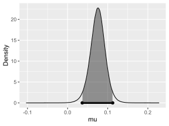
With equal prior probabilities on the two hypothesis, the Bayes factor is the posterior odds. From the output, we see this indicates that the hypothesis \(H_2\), the mean difference is different from 0, is almost 51 times more likely than the hypothesis \(H_1\) that the average concentration is the same at the surface and the bottom.
To sum up, we have used the Cauchy prior as a default prior testing hypothesis about a normal mean when variances are unknown. This does require numerical integration, but it is available in the function from the package. If you expect that the effect sizes will be small, smaller values of \(r\) are recommended.
It is often important to quantify the magnitude of the difference in addition to testing. The Cauchy Prior provides a default prior for both testing and inference; it avoids problems that arise with choosing a value of \(n_0\) (prior sample size) in both cases. In the next section, we will illustrate using the Cauchy prior for comparing two means from independent normal samples.
Comparing Independent Means: Hypothesis Testing
In the previous section, we described Bayes factors for testing whether the mean difference of paired samples was zero. In this section, we will consider a slightly different problem – we have two independent samples, and we would like to test the hypothesis that the means are different or equal.
Example 21 We illustrate the testing of independent groups with data from a 2004 survey of birth records from North Carolina, which are available in the package.
The variable of interest is – the weight gain of mothers during pregnancy. We have two groups defined by the categorical variable, , with levels, younger mom and older mom.
Question of interest: Do the data provide convincing evidence of a difference between the average weight gain of older moms and the average weight gain of younger moms?We will view the data as a random sample from two populations, older and younger moms. The two groups are modeled as:
\[\begin{equation} \begin{aligned} Y_{O,i} & \mathrel{\mathop{\sim}\limits^{\rm iid}} \textsf{N}(\mu + \alpha/2, \sigma^2) \\ Y_{Y,i} & \mathrel{\mathop{\sim}\limits^{\rm iid}} \textsf{N}(\mu - \alpha/2, \sigma^2) \end{aligned} \tag{13} \end{equation}\]
The model for weight gain for older moms using the subscript \(O\), and it assumes that the observations are independent and identically distributed, with a mean \(\mu+\alpha/2\) and variance \(\sigma^2\).
For the younger women, the observations with the subscript \(Y\) are independent and identically distributed with a mean \(\mu-\alpha/2\) and variance \(\sigma^2\).
Using this representation of the means in the two groups, the difference in means simplifies to \(\alpha\) – the parameter of interest.
\[(\mu + \alpha/2) - (\mu - \alpha/2) = \alpha\]
You may ask, “Why don’t we set the average weight gain of older women to \(\mu+\alpha\), and the average weight gain of younger women to \(\mu\)?” We need the parameter \(\alpha\) to be present in both \(Y_{O,i}\) (the group of older women) and \(Y_{Y,i}\) (the group of younger women).
We have the following competing hypotheses:
- \(H_1: \alpha = 0 \Leftrightarrow\) The means are not different.
- \(H_2: \alpha \neq 0 \Leftrightarrow\) The means are different.
In this representation, \(\mu\) represents the overall weight gain for all women. (Does the model in Equation (13) make more sense now?) To test the hypothesis, we need to specify prior distributions for \(\alpha\) under \(H_2\) (c.f. \(\alpha = 0\) under \(H_1\)) and priors for \(\mu,\sigma^2\) under both hypotheses.
Recall that the Bayes factor is the ratio of the distribution of the data under the two hypotheses.
\[\begin{aligned} \text{BF}[H_1 : H_2] &= \frac{p(\text{data} \mid H_1)} {p(\text{data} \mid H_2)} \\ &= \frac{\iint p(\text{data} \mid \alpha = 0,\mu, \sigma^2 )p(\mu, \sigma^2 \mid H_1) \, d\mu \,d\sigma^2} {\int \iint p(\text{data} \mid \alpha, \mu, \sigma^2) p(\alpha \mid \sigma^2) p(\mu, \sigma^2 \mid H_2) \, d \mu \, d\sigma^2 \, d \alpha} \end{aligned}\]
As before, we need to average over uncertainty and the parameters to obtain the unconditional distribution of the data. Now, as in the test about a single mean, we cannot use improper or non-informative priors for \(\alpha\) for testing.
Under \(H_2\), we use the Cauchy prior for \(\alpha\), or equivalently, the Cauchy prior on the standardized effect \(\delta\) with the scale of \(r\):
\[\delta = \alpha/\sigma^2 \sim \text{Ca}(0, r^2)\]
Now, under both \(H_1\) and \(H_2\), we use the Jeffrey’s reference prior on \(\mu\) and \(\sigma^2\):
\[p(\mu, \sigma^2) \propto 1/\sigma^2\]
While this is an improper prior on \(\mu\), this does not suffer from the Bartlett’s-Lindley’s-Jeffreys’ paradox as \(\mu\) is a common parameter in the model in \(H_1\) and \(H_2\). This is another example of the Jeffreys-Zellner-Siow prior.
As in the single mean case, we will need numerical algorithms to obtain the Bayes factor. Now the following output illustrates testing of Bayes factors, using the Bayes inference function from the package.
library(statsr)
data(nc)
bayes_inference(y=gained, x=mature, data=nc,type='ht',
statistic='mean', alternative='twosided', null=0,
prior='JZS', r=1, method='theo', show_summ=FALSE)## Hypotheses:
## H1: mu_mature mom = mu_younger mom
## H2: mu_mature mom != mu_younger mom
##
## Priors: P(H1) = 0.5 P(H2) = 0.5
##
## Results:
## BF[H1:H2] = 5.7162
## P(H1|data) = 0.8511
## P(H2|data) = 0.1489
##
## Posterior summaries for under H2:
## 95% Cred. Int.: (-4.387 , 0.9328)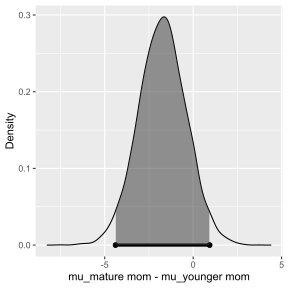
We see that the Bayes factor for \(H_1\) to \(H_2\) is about 5.7, with positive support for \(H_1\) that there is no difference in average weight gain between younger and older women. Using equal prior probabilities, the probability that there is a difference in average weight gain between the two groups is about 0.15 given the data. Based on the interpretation of Bayes factors from Table 9, this is in the range of “positive” (between 3 and 20).
To recap, we have illustrated testing hypotheses about population means with two independent samples, using a Cauchy prior on the difference in the means. One assumption that we have made is that the variances are equal in both groups. The case where the variances are unequal is referred to as the Behren-Fisher problem, and this is beyond the scope for this course. In the next section, we will look at another example to put everything together with testing and discuss summarizing results.
Inference after Testing
In this section, we will work through another example for comparing two means using both hypothesis tests and interval estimates, with an informative prior. We will also illustrate how to adjust the credible interval after testing.
We would like to answer two questions:
Is there a difference in average birth weight between the two groups?
If there is a difference, how large is the effect?
As before, we need to specify models for the data and priors. We treat the data as a random sample for the two populations, smokers and non-smokers.
The birth weights of babies born to non-smokers, designated by a subgroup \(N\), are assumed to be independent and identically distributed from a normal distribution with mean \(\mu + \alpha/2\), as in Section ??.
\[Y_{N,i} \overset{\text{iid}}{\sim} \text{N}(\mu + \alpha/2, \sigma^2)\]
While the birth weights of the babies born to smokers, designated by the subgroup \(S\), are also assumed to have a normal distribution, but with mean \(\mu - \alpha/2\).
\[Y_{S,i} \overset{\text{iid}}{\sim} \text{N}(\mu - \alpha/2, \sigma^2)\]
The difference in the average birth weights is the parameter \(\alpha\), because
\[(\mu + \alpha/2) - (\mu - \alpha/2) = \alpha\].
The hypotheses that we will test are \(H_1: \alpha = 0\) versus \(H_2: \alpha \ne 0\).
We will still use the Jeffreys-Zellner-Siow Cauchy prior. However, since we may expect the standardized effect size to not be as strong, we will use a scale of \(r = 0.5\) rather than 1.
Therefore, under \(H_2\), we have
\[\delta = \alpha/\sigma \sim \text{Ca}(0, r^2), \text{ with } r = 0.5.\]
Under both \(H_1\) and \(H_2\), we will use the reference priors on \(\mu\) and \(\sigma^2\):
\[\begin{aligned} p(\mu) &\propto 1 \\ p(\sigma^2) &\propto 1/\sigma^2 \end{aligned}\]
The input to the base inference function is similar, but now we will specify that \(r = 0.5\).
library(statsr)
data(nc)
out =bayes_inference(y=weight, x=habit, data=nc,type='ht', null=0,
statistic='mean', alternative='twosided',
prior='JZS', r=.5, method='sim', show_summ=FALSE)## Hypotheses:
## H1: mu_nonsmoker = mu_smoker
## H2: mu_nonsmoker != mu_smoker
##
## Priors: P(H1) = 0.5 P(H2) = 0.5
##
## Results:
## BF[H2:H1] = 1.4402
## P(H1|data) = 0.4098
## P(H2|data) = 0.5902
##
## Posterior summaries for under H2:
## 95% Cred. Int.: (0.0225 , 0.5665)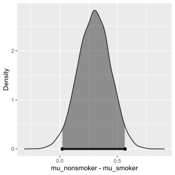
We see that the Bayes factor is 1.44, which weakly favors there being a difference in average birth weights for babies whose mothers are smokers versus mothers who did not smoke. Converting this to a probability, we find that there is about a 60% chance of the average birth weights are different.
While looking at evidence of there being a difference is useful, Bayes factors and posterior probabilities do not convey any information about the magnitude of the effect. Reporting a credible interval or the complete posterior distribution is more relevant for quantifying the magnitude of the effect.
Using the function, we can generate samples from the posterior distribution under \(H_2\) using the option.
out.ci = bayes_inference(y=weight, x=habit, data=nc, type='ci',
statistic='mean', prior='JZS', mu_0=0,
r=.5, method='sim', verbose=FALSE)
print(out.ci$summary, digits=2)## 2.5% 25% 50% 75% 97.5%
## overall mean 6.853 6.94 7.0 7.04 7.1e+00
## mu_nonsmoker - mu_smoker 0.022 0.21 0.3 0.40 5.7e-01
## sigma^2 2.078 2.19 2.3 2.33 2.5e+00
## effect size 0.015 0.14 0.2 0.26 3.8e-01
## n_0 169.957 1926.57 4581.2 9401.10 2.5e+04The 2.5 and 97.5 percentiles for the difference in the means provide a 95% credible interval of 0.023 to 0.57 pounds for the difference in average birth weight. The MCMC output shows not only summaries about the difference in the mean \(\alpha\), but the other parameters in the model.
In particular, the Cauchy prior arises by placing a gamma prior on \(n_0\) and the conjugate normal prior. This provides quantiles about \(n_0\) after updating with the current data.
The row labeled effect size is the standardized effect size \(\delta\), indicating that the effects are indeed small relative to the noise in the data.
library(ggplot2)
out = bayes_inference(y=weight, x=habit, data=nc,type='ht',
statistic='mean', alternative='twosided',
prior='JZS', null=0, r=.5, method='theo',
show_summ=FALSE, show_res=FALSE, show_plot=TRUE)Figure 26: Estimates of effect under H2
Figure 26 shows the posterior density for the difference in means, with the 95% credible interval indicated by the shaded area. Under \(H_2\), there is a 95% chance that the average birth weight of babies born to non-smokers is 0.023 to 0.57 pounds higher than that of babies born to smokers.
The previous statement assumes that \(H_2\) is true and is a conditional probability statement. In mathematical terms, the statement is equivalent to
\[P(0.023 < \alpha < 0.57 \mid \text{data}, H_2) = 0.95\]
However, we still have quite a bit of uncertainty based on the current data, because given the data, the probability of \(H_2\) being true is 0.59.
\[P(H_2 \mid \text{data}) = 0.59\]
Using the law of total probability, we can compute the probability that \(\mu\) is between 0.023 and 0.57 as below:
\[\begin{aligned} & P(0.023 < \alpha < 0.57 \mid \text{data}) \\ = & P(0.023 < \alpha < 0.57 \mid \text{data}, H_1)P(H_1 \mid \text{data}) + P(0.023 < \alpha < 0.57 \mid \text{data}, H_2)P(H_2 \mid \text{data}) \\ = & I( 0 \text{ in CI }) P(H_1 \mid \text{data}) + 0.95 \times P(H_2 \mid \text{data}) \\ = & 0 \times 0.41 + 0.95 \times 0.59 = 0.5605 \end{aligned}\]
Finally, we get that the probability that \(\alpha\) is in the interval, given the data, averaging over both hypotheses, is roughly 0.56. The unconditional statement is the average birth weight of babies born to nonsmokers is 0.023 to 0.57 pounds higher than that of babies born to smokers with probability 0.56. This adjustment addresses the posterior uncertainty and how likely \(H_2\) is.
To recap, we have illustrated testing, followed by reporting credible intervals, and using a Cauchy prior distribution that assumed smaller standardized effects. After testing, it is common to report credible intervals conditional on \(H_2\). We also have shown how to adjust the probability of the interval to reflect our posterior uncertainty about \(H_2\). In the next chapter, we will turn to regression models to incorporate continuous explanatory variables.
6 Introduction to Bayesian Regression
In the previous chapter, we introduced Bayesian decision making using posterior probabilities and a variety of loss functions. We discussed how to minimize the expected loss for hypothesis testing. Moreover, we instroduced the concept of Bayes factors and gave some examples on how Bayes factors can be used in Bayesian hypothesis testing for comparison of two means. We also discussed how to choose appropriate and robust priors. When there is no conjugacy, we applied Markov Chain Monte Carlo simulation to approximate the posterior distributions of parameters of interest.
In this chapter, we will apply Bayesian inference methods to linear regression. We will first apply Bayesian statistics to simple linear regression models, then generalize the results to multiple linear regression models. We will see when using the reference prior, the posterior means, posterior standard deviations, and credible intervals of the coefficients coincide with the counterparts in the frequentist ordinary least square (OLS) linear regression models. However, using the Bayesian framework, we can now interpret credible intervals as the probabilities of the coefficients lying in such intervals.
Bayesian Simple Linear Regression
In this section, we will turn to Bayesian inference in simple linear regressions. We will use the reference prior distribution on coefficients, which will provide a connection between the frequentist solutions and Bayesian answers. This provides a baseline analysis for comparisons with more informative prior distributions. To illustrate the ideas, we will use an example of predicting body fat.
Frequentist Ordinary Least Square (OLS) Simple Linear Regression
Obtaining accurate measurements of body fat is expensive and not easy to be done. Instead, predictive models that predict the percentage of body fat which use readily available measurements such as abdominal circumference are easy to use and inexpensive. We will apply a simple linear regression to predict body fat using abdominal circumference as an example to illustrate the Bayesian approach of linear regression. The data set bodyfat can be found from the library BAS.
To start, we load the BAS library (which can be downloaded from CRAN) to access the dataframe. We print out a summary of the variables in this dataframe.
library(BAS)
data(bodyfat)
summary(bodyfat)## Density Bodyfat Age Weight
## Min. :0.995 Min. : 0.00 Min. :22.00 Min. :118.5
## 1st Qu.:1.041 1st Qu.:12.47 1st Qu.:35.75 1st Qu.:159.0
## Median :1.055 Median :19.20 Median :43.00 Median :176.5
## Mean :1.056 Mean :19.15 Mean :44.88 Mean :178.9
## 3rd Qu.:1.070 3rd Qu.:25.30 3rd Qu.:54.00 3rd Qu.:197.0
## Max. :1.109 Max. :47.50 Max. :81.00 Max. :363.1
## Height Neck Chest Abdomen
## Min. :29.50 Min. :31.10 Min. : 79.30 Min. : 69.40
## 1st Qu.:68.25 1st Qu.:36.40 1st Qu.: 94.35 1st Qu.: 84.58
## Median :70.00 Median :38.00 Median : 99.65 Median : 90.95
## Mean :70.15 Mean :37.99 Mean :100.82 Mean : 92.56
## 3rd Qu.:72.25 3rd Qu.:39.42 3rd Qu.:105.38 3rd Qu.: 99.33
## Max. :77.75 Max. :51.20 Max. :136.20 Max. :148.10
## Hip Thigh Knee Ankle Biceps
## Min. : 85.0 Min. :47.20 Min. :33.00 Min. :19.1 Min. :24.80
## 1st Qu.: 95.5 1st Qu.:56.00 1st Qu.:36.98 1st Qu.:22.0 1st Qu.:30.20
## Median : 99.3 Median :59.00 Median :38.50 Median :22.8 Median :32.05
## Mean : 99.9 Mean :59.41 Mean :38.59 Mean :23.1 Mean :32.27
## 3rd Qu.:103.5 3rd Qu.:62.35 3rd Qu.:39.92 3rd Qu.:24.0 3rd Qu.:34.33
## Max. :147.7 Max. :87.30 Max. :49.10 Max. :33.9 Max. :45.00
## Forearm Wrist
## Min. :21.00 Min. :15.80
## 1st Qu.:27.30 1st Qu.:17.60
## Median :28.70 Median :18.30
## Mean :28.66 Mean :18.23
## 3rd Qu.:30.00 3rd Qu.:18.80
## Max. :34.90 Max. :21.40This data frame includes 252 observations of men’s body fat and other measurements, such as waist circumference (Abdomen). We will construct a Bayesian model of simple linear regression, which uses Abdomen to predict the response variable Bodyfat. Let \(y_i,\ i=1,\cdots, 252\) denote the measurements of the response variable Bodyfat, and let \(x_i\) be the waist circumference measurements Abdomen. We regress Bodyfat on the predictor Abdomen. This regression model can be formulated as
\[ y_i = \alpha + \beta x_i + \epsilon_i, \quad i = 1,\cdots, 252.\]
Here, we assume error \(\epsilon_i\) is independent and identically distributed as normal random variables with mean zero and constant variance \(\sigma^2\):
\[ \epsilon_i \overset{\text{iid}}{\sim} \text{N}(0, \sigma^2). \]
The figure below shows the percentage body fat obtained from under water weighing and the abdominal circumference measurements for 252 men. To predict body fat, the line overlayed on the scatter plot illustrates the best fitting ordinary least squares (OLS) line obtained with the lm function in R.
# Frequentist OLS linear regression
bodyfat.lm = lm(Bodyfat ~ Abdomen, data = bodyfat)
summary(bodyfat.lm)##
## Call:
## lm(formula = Bodyfat ~ Abdomen, data = bodyfat)
##
## Residuals:
## Min 1Q Median 3Q Max
## -19.0160 -3.7557 0.0554 3.4215 12.9007
##
## Coefficients:
## Estimate Std. Error t value Pr(>|t|)
## (Intercept) -39.28018 2.66034 -14.77 <2e-16 ***
## Abdomen 0.63130 0.02855 22.11 <2e-16 ***
## ---
## Signif. codes: 0 '***' 0.001 '**' 0.01 '*' 0.05 '.' 0.1 ' ' 1
##
## Residual standard error: 4.877 on 250 degrees of freedom
## Multiple R-squared: 0.6617, Adjusted R-squared: 0.6603
## F-statistic: 488.9 on 1 and 250 DF, p-value: < 2.2e-16# Extract coefficients
beta = coef(bodyfat.lm)
# Visualize regression line on the scatter plot
library(ggplot2)
ggplot(data = bodyfat, aes(x = Abdomen, y = Bodyfat)) +
geom_point(color = "blue") +
geom_abline(intercept = beta[1], slope = beta[2], size = 1) +
xlab("abdomen circumference (cm)") 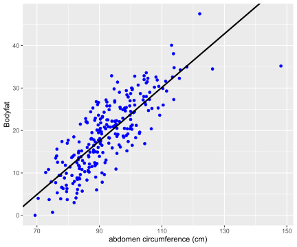
From the summary, we see that this model has an estimated slope, \(\hat{\beta}\), of 0.63 and an estimated \(y\)-intercept, \(\hat{\alpha}\), of about -39.28%. This gives us the prediction formula \[ \widehat{\text{Bodyfat}} = -39.28 + 0.63\times\text{Abdomen}. \] For every additional centimeter, we expect body fat to increase by 0.63%. The negative \(y\)-intercept of course does not make sense as a physical model, but neither does predicting a male with a waist of zero centimeters. Nevertheless, this linear regression may be an accurate approximation for prediction purposes for measurements that are in the observed range for this population.
Each of the residuals, which provide an estimate of the fitting error, is equal to \(\hat{\epsilon}_i = y_i - \hat{y}_i\), the difference between the observed value \(y_i\) and the fitted value \(\hat{y}_i = \hat{\alpha} + \hat{\beta}x_i\), where \(x_i\) is the abdominal circumference for the \(i\)th male. \(\hat{\epsilon}_i\) is used for diagnostics as well as estimating the constant variance in the assumption of the model \(\sigma^2\) via the mean squared error (MSE):
\[ \hat{\sigma}^2 = \frac{1}{n-2}\sum_i^n (y_i-\hat{y}_i)^2 = \frac{1}{n-2}\sum_i^n \hat{\epsilon}_i^2. \]
Here the degrees of freedom \(n-2\) are the number of observations adjusted for the number of parameters (which is 2) that we estimated in the regression. The MSE, \(\hat{\sigma}^2\), may be calculated through squaring the residuals of the output of bodyfat.lm.
# Obtain residuals and n
resid = residuals(bodyfat.lm)
n = length(resid)
# Calculate MSE
MSE = 1/ (n - 2) * sum((resid ^ 2))
MSE## [1] 23.78985If this model is correct, the residuals and fitted values should be uncorrelated, and the expected value of the residuals is zero. We apply the scatterplot of residuals versus fitted values, which provides an additional visual check of the model adequacy.
# Combine residuals and fitted values into a data frame
result = data.frame(fitted_values = fitted.values(bodyfat.lm),
residuals = residuals(bodyfat.lm))
# Load library and plot residuals versus fitted values
library(ggplot2)
ggplot(data = result, aes(x = fitted_values, y = residuals)) +
geom_point(pch = 1, size = 2) +
geom_abline(intercept = 0, slope = 0) +
xlab(expression(paste("fitted value ", widehat(Bodyfat)))) +
ylab("residuals")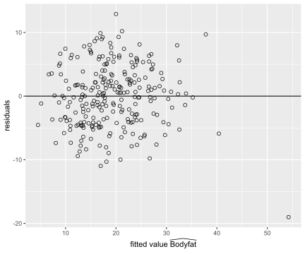
# Readers may also use `plot` functionWith the exception of one observation for the individual with the largest fitted value, the residual plot suggests that this linear regression is a reasonable approximation. The case number of the observation with the largest fitted value can be obtained using the which function in R. Further examination of the data frame shows that this case also has the largest waist measurement Abdomen. This may be our potential outlier and we will have more discussion on outliers in Section ??.
# Find the observation with the largest fitted value
which.max(as.vector(fitted.values(bodyfat.lm)))## [1] 39# Shows this observation has the largest Abdomen
which.max(bodyfat$Abdomen)## [1] 39Furthermore, we can check the normal probability plot of the residuals for the assumption of normally distributed errors. We see that only Case 39, the one with the largest waist measurement, is exceptionally away from the normal quantile.
plot(bodyfat.lm, which = 2)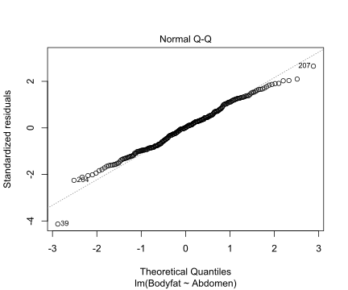
The confidence interval of \(\alpha\) and \(\beta\) can be constructed using the standard errors \(\text{se}_{\alpha}\) and \(\text{se}_{\beta}\) respectively. To proceed, we introduce notations of some “sums of squares” \[ \begin{aligned} \text{S}_{xx} = & \sum_i^n (x_i-\bar{x})^2\\ \text{S}_{yy} = & \sum_i^n (y_i-\bar{y})^2 \\ \text{S}_{xy} = & \sum_i^n (x_i-\bar{x})(y_i-\bar{y}) \\ \text{SSE} = & \sum_i^n (y_i-\hat{y}_i)^2 = \sum_i^n \hat{\epsilon}_i^2. \end{aligned} \]
The estimates of the \(y\)-intercept \(\alpha\), and the slope \(\beta\), which are denoted as \(\hat{\alpha}\) and \(\hat{\beta}\) respectively, can be calculated using these “sums of squares” \[ \hat{\beta} = \frac{\sum_i (x_i-\bar{x})(y_i-\bar{y})}{\sum_i (x_i-\bar{x})^2} = \frac{\text{S}_{xy}}{\text{S}_{xx}},\qquad \qquad \hat{\alpha} = \bar{y} - \hat{\beta}\bar{x} = \bar{y}-\frac{\text{S}_{xy}}{\text{S}_{xx}}\bar{x}. \]
The last “sum of square” is the sum of squares of errors (SSE). Its sample mean is exactly the mean squared error (MSE) we introduced previously \[ \hat{\sigma}^2 = \frac{\text{SSE}}{n-2} = \text{MSE}. \]
The standard errors, \(\text{se}_{\alpha}\) and \(\text{se}_{\beta}\), are given as \[ \begin{aligned} \text{se}_{\alpha} = & \sqrt{\frac{\text{SSE}}{n-2}\left(\frac{1}{n}+\frac{\bar{x}^2}{\text{S}_{xx}}\right)} = \hat{\sigma}\sqrt{\frac{1}{n}+\frac{\bar{x}^2}{\text{S}_{xx}}},\\ \text{se}_{\beta} = & \sqrt{\frac{\text{SSE}}{n-2}\frac{1}{\text{S}_{xx}}} = \frac{\hat{\sigma}}{\sqrt{\text{S}_{xx}}}. \end{aligned} \]
We may construct the confidence intervals of \(\alpha\) and \(\beta\) using the \(t\)-statistics \[ t_\alpha^\ast = \frac{\alpha - \hat{\alpha}}{\text{se}_{\alpha}},\qquad \qquad t_\beta^\ast = \frac{\beta-\hat{\beta}}{\text{se}_{\beta}}. \]
They both have degrees of freedom \(n-2\).
Bayesian Simple Linear Regression Using the Reference Prior
Let us now turn to the Bayesian version and show that under the reference prior, we will obtain the posterior distributions of \(\alpha\) and \(\beta\) analogous with the frequentist OLS results.
The Bayesian model starts with the same model as the classical frequentist approach: \[ y_i = \alpha + \beta x_i + \epsilon_i,\quad i = 1,\cdots, n. \] with the assumption that the errors, \(\epsilon_i\), are independent and identically distributed as normal random variables with mean zero and constant variance \(\sigma^2\). This assumption is exactly the same as in the classical inference case for testing and constructing confidence intervals for \(\alpha\) and \(\beta\).
Our goal is to update the distributions of the unknown parameters \(\alpha\), \(\beta\), and \(\sigma^2\), based on the data \(x_1, y_1, \cdots, x_n, y_n\), where \(n\) is the number of observations.
Under the assumption that the errors \(\epsilon_i\) are normally distributed with constant variance \(\sigma^2\), we have for the random variable of each response \(Y_i\), conditioning on the observed data \(x_i\) and the parameters \(\alpha,\ \beta,\ \sigma^2\), is normally distributed: \[ Y_i~|~x_i, \alpha, \beta,\sigma^2~ \sim~ \text{N}(\alpha + \beta x_i, \sigma^2),\qquad i = 1,\cdots, n. \]
That is, the likelihood of each \(Y_i\) given \(x_i, \alpha, \beta\), and \(\sigma^2\) is given by \[ p(y_i~|~x_i, \alpha, \beta, \sigma^2) = \frac{1}{\sqrt{2\pi\sigma^2}}\exp\left(-\frac{(y_i-(\alpha+\beta x_i))^2}{2\sigma^2}\right). \]
The likelihood of \(Y_1,\cdots,Y_n\) is the product of each likelihood \(p(y_i~|~x_i, \alpha, \beta,\sigma^2)\), since we assume each response \(Y_i\) is independent from each other. Since this likelihood depends on the values of \(\alpha\), \(\beta\), and \(\sigma^2\), it is sometimes denoted as a function of \(\alpha\), \(\beta\), and \(\sigma^2\): \(\mathcal{L}(\alpha, \beta, \sigma^2)\).
We first consider the case under the reference prior, which is our standard noninformative prior. Using the reference prior, we will obtain familiar distributions as the posterior distributions of \(\alpha\), \(\beta\), and \(\sigma^2\), which gives the analogue to the frequentist results. Here we assume the joint prior distribution of \(\alpha,\ \beta\), and \(\sigma^2\) to be proportional to the inverse of \(\sigma^2\)
\[\begin{equation} p(\alpha, \beta, \sigma^2)\propto \frac{1}{\sigma^2}. \tag{14} \end{equation}\]
Using the hierachical model framework, this is equivalent to assuming that the joint prior distribution of \(\alpha\) and \(\beta\) under \(\sigma^2\) is the uniform prior, while the prior distribution of \(\sigma^2\) is proportional to \(\displaystyle \frac{1}{\sigma^2}\). That is \[ p(\alpha, \beta~|~\sigma^2) \propto 1, \qquad\qquad p(\sigma^2) \propto \frac{1}{\sigma^2}, \] Combining the two using conditional probability, we will get the same joint prior distribution (14).
Then we apply the Bayes’ rule to derive the joint posterior distribution after observing data \(y_1,\cdots, y_n\). Bayes’ rule states that the joint posterior distribution of \(\alpha\), \(\beta\), and \(\sigma^2\) is proportional to the product of the likelihood and the joint prior distribution: \[ \begin{aligned} p^*(\alpha, \beta, \sigma^2~|~y_1,\cdots,y_n) \propto & \left[\prod_i^n p(y_i~|~x_i,\alpha,\beta,\sigma^2)\right]p(\alpha, \beta,\sigma^2) \\ \propto & \left[\left(\frac{1}{(\sigma^2)^{1/2}}\exp\left(-\frac{(y_1-(\alpha+\beta x_1 ))^2}{2\sigma^2}\right)\right)\times\cdots \right.\\ & \left. \times \left(\frac{1}{(\sigma^2)^{1/2}}\exp\left(-\frac{(y_n-(\alpha +\beta x_n))^2}{2\sigma^2}\right)\right)\right]\times\left(\frac{1}{\sigma^2}\right)\\ \propto & \frac{1}{(\sigma^2)^{(n+2)/2}}\exp\left(-\frac{\sum_i\left(y_i-\alpha-\beta x_i\right)^2}{2\sigma^2}\right) \end{aligned} \]
To obtain the marginal posterior distribution of \(\beta\), we need to integrate \(\alpha\) and \(\sigma^2\) out from the joint posterior distribution \[ p^*(\beta~|~y_1,\cdots,y_n) = \int_0^\infty \left(\int_{-\infty}^\infty p^*(\alpha, \beta, \sigma^2~|~y_1,\cdots, y_n)\, d\alpha\right)\, d\sigma^2. \]
We leave the detailed calculation in Section ??. It can be shown that the marginal posterior distribution of \(\beta\) is the Student’s \(t\)-distribution \[ \beta~|~y_1,\cdots,y_n ~\sim~ \text{St}\left(n-2,\ \hat{\beta},\ \frac{\hat{\sigma}^2}{\text{S}_{xx}}\right) = \text{St}\left(n-2,\ \hat{\beta},\ (\text{se}_{\beta})^2\right), \] with degrees of freedom \(n-2\), center at \(\hat{\beta}\), the slope estimate we obtained from the frequentist OLS model, and scale parameter \(\displaystyle \frac{\hat{\sigma}^2}{\text{S}_{xx}}=\left(\text{se}_{\beta}\right)^2\), which is the square of the standard error of \(\hat{\beta}\) under the frequentist OLS model.
Similarly, we can integrate out \(\beta\) and \(\sigma^2\) from the joint posterior distribution to get the marginal posterior distribution of \(\alpha\), \(p^*(\alpha~|~y_1,\cdots, y_n)\). It turns out that \(p^*(\alpha~|~y_1,\cdots,y_n)\) is again a Student’s \(t\)-distribution with degrees of freedom \(n-2\), center at \(\hat{\alpha}\), the \(y\)-intercept estimate from the frequentist OLS model, and scale parameter \(\displaystyle \hat{\sigma}^2\left(\frac{1}{n}+\frac{\bar{x}^2}{\text{S}_{xx}}\right) = \left(\text{se}_{\alpha}\right)^2\), which is the square of the standard error of \(\hat{\alpha}\) under the frequentist OLS model \[ \alpha~|~y_1,\cdots,y_n~\sim~ \text{St}\left(n-2,\ \hat{\alpha},\ \hat{\sigma}^2\left(\frac{1}{n}+\frac{\bar{x}^2}{\text{S}_{xx}}\right)\right) = \text{St}\left(n-2,\ \hat{\alpha},\ (\text{se}_{\alpha})^2\right).\]
Finally, we can show that the marginal posterior distribution of \(\sigma^2\) is the inverse Gamma distribution, or equivalently, the reciprocal of \(\sigma^2\), which is the precision \(\phi\), follows the Gamma distribution \[ \phi = \frac{1}{\sigma^2}~|~y_1,\cdots,y_n \sim \text{Ga}\left(\frac{n-2}{2}, \frac{\text{SSE}}{2}\right). \]
Moreover, similar to the Normal-Gamma conjugacy under the reference prior introduced in the previous chapters, the joint posterior distribution of \(\beta, \sigma^2\), and the joint posterior distribution of \(\alpha, \sigma^2\) are both Normal-Gamma. In particular, the posterior distribution of \(\beta\) conditioning on \(\sigma^2\) is \[ \beta~|~\sigma^2, \text{data}~\sim ~\text{N}\left(\hat{\beta}, \frac{\sigma^2}{\text{S}_{xx}}\right), \]
and the posterior distribution of \(\alpha\) conditioning on \(\sigma^2\) is \[ \alpha~|~\sigma^2, \text{data}~\sim ~\text{N}\left(\hat{\alpha}, \sigma^2\left(\frac{1}{n}+\frac{\bar{x}^2}{\text{S}_{xx}}\right)\right).\]
Credible Intervals for Slope \(\beta\) and \(y\)-Intercept \(\alpha\)
The Bayesian posterior distribution results of \(\alpha\) and \(\beta\) show that under the reference prior, the posterior credible intervals are in fact numerically equivalent to the confidence intervals from the classical frequentist OLS analysis. This provides a baseline analysis for other Bayesian analyses with other informative prior distributions or perhaps other “objective” prior distributions, such as the Cauchy distribution. (Cauchy distribution is the Student’s \(t\) prior with 1 degree of freedom.)
Since the credible intervals are numerically the same as the confidence intervals, we can use the lm function to obtain the OLS estimates and construct the credible intervals of \(\alpha\) and \(\beta\)
output = summary(bodyfat.lm)$coef[, 1:2]
output## Estimate Std. Error
## (Intercept) -39.2801847 2.66033696
## Abdomen 0.6313044 0.02855067The columns labeled Estimate and Std. Error are equivalent to the centers (or posterior means) and scale parameters (or standard deviations) in the two Student’s \(t\)-distributions respectively. The credible intervals of \(\alpha\) and \(\beta\) are the same as the frequentist confidence intervals, but now we can interpret them from the Bayesian perspective.
The confint function provides 95% confidence intervals. Under the reference prior, they are equivalent to the 95% credible intervals. The code below extracts them and relabels the output as the Bayesian results.
out = cbind(output, confint(bodyfat.lm))
colnames(out) = c("posterior mean", "posterior std", "2.5", "97.5")
round(out, 2)## posterior mean posterior std 2.5 97.5
## (Intercept) -39.28 2.66 -44.52 -34.04
## Abdomen 0.63 0.03 0.58 0.69These intervals coincide with the confidence intervals from the frequentist approach. The primary difference is the interpretation. For example, based on the data, we believe that there is a 95% chance that body fat will increase by 5.75% up to 6.88% for every additional 10 centimeter increase in the waist circumference.
Credible Intervals for the Mean \(\mu_Y\) and the Prediction \(y_{n+1}\)
From our assumption of the model \[ y_i = \alpha + \beta x_i + \epsilon_i, \] the mean of the response variable \(Y\), \(\mu_Y\), at the point \(x_i\) is \[ \mu_Y~|~x_i = E[Y~|~x_i] = \alpha + \beta x_i. \]
Under the reference prior, \(\mu_Y\) has a posterior distributuion \[ \alpha + \beta x_i ~|~ \text{data} \sim \text{St}(n-2,\ \hat{\alpha} + \hat{\beta} x_i,\ \text{S}_{Y|X_i}^2), \] where \[ \text{S}_{Y|X_i}^2 = \hat{\sigma}^2\left(\frac{1}{n}+\frac{(x_i-\bar{x})^2}{\text{S}_{xx}}\right) \]
Any new prediction \(y_{n+1}\) at a point \(x_{n+1}\) also follows the Student’s \(t\)-distribution \[ y_{n+1}~|~\text{data}, x_{n+1}\ \sim \text{St}\left(n-2,\ \hat{\alpha}+\hat{\beta} x_{n+1},\ \text{S}_{Y|X_{n+1}}^2\right), \]
where \[ \text{S}_{Y|X_{n+1}}^2 =\hat{\sigma}^2+\hat{\sigma}^2\left(\frac{1}{n}+\frac{(x_{n+1}-\bar{x})^2}{\text{S}_{xx}}\right) = \hat{\sigma}^2\left(1+\frac{1}{n}+\frac{(x_{n+1}-\bar{x})^2}{\text{S}_{xx}}\right). \]
The variance for predicting a new observation \(y_{n+1}\) has an extra \(\hat{\sigma}^2\) which comes from the uncertainty of a new observation about the mean \(\mu_Y\) estimated by the regression line.
We can extract these intervals using the predict function
library(ggplot2)
# Construct current prediction
alpha = bodyfat.lm$coefficients[1]
beta = bodyfat.lm$coefficients[2]
new_x = seq(min(bodyfat$Abdomen), max(bodyfat$Abdomen),
length.out = 100)
y_hat = alpha + beta * new_x
# Get lower and upper bounds for mean
ymean = data.frame(predict(bodyfat.lm,
newdata = data.frame(Abdomen = new_x),
interval = "confidence",
level = 0.95))
# Get lower and upper bounds for prediction
ypred = data.frame(predict(bodyfat.lm,
newdata = data.frame(Abdomen = new_x),
interval = "prediction",
level = 0.95))
output = data.frame(x = new_x, y_hat = y_hat, ymean_lwr = ymean$lwr, ymean_upr = ymean$upr,
ypred_lwr = ypred$lwr, ypred_upr = ypred$upr)
# Extract potential outlier data point
outlier = data.frame(x = bodyfat$Abdomen[39], y = bodyfat$Bodyfat[39])
# Scatter plot of original
plot1 = ggplot(data = bodyfat, aes(x = Abdomen, y = Bodyfat)) + geom_point(color = "blue")
# Add bounds of mean and prediction
plot2 = plot1 +
geom_line(data = output, aes(x = new_x, y = y_hat, color = "first"), lty = 1) +
geom_line(data = output, aes(x = new_x, y = ymean_lwr, lty = "second")) +
geom_line(data = output, aes(x = new_x, y = ymean_upr, lty = "second")) +
geom_line(data = output, aes(x = new_x, y = ypred_upr, lty = "third")) +
geom_line(data = output, aes(x = new_x, y = ypred_lwr, lty = "third")) +
scale_colour_manual(values = c("orange"), labels = "Posterior mean", name = "") +
scale_linetype_manual(values = c(2, 3), labels = c("95% CI for mean", "95% CI for predictions")
, name = "") +
theme_bw() +
theme(legend.position = c(1, 0), legend.justification = c(1.5, 0))
# Identify potential outlier
plot2 + geom_point(data = outlier, aes(x = x, y = y), color = "orange", pch = 1, cex = 6)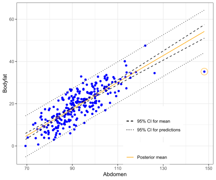
Note in the above plot, the legend “CI” can mean either confidence interval or credible interval. The difference comes down to the interpretation. For example, the prediction at the same abdominal circumference as in Case 39 is
pred.39 = predict(bodyfat.lm, newdata = bodyfat[39, ], interval = "prediction", level = 0.95)
out = cbind(bodyfat[39,]$Abdomen, pred.39)
colnames(out) = c("abdomen", "prediction", "lower", "upper")
out## abdomen prediction lower upper
## 39 148.1 54.21599 44.0967 64.33528Based on the data, a Bayesian would expect that a man with waist circumference of 148.1 centimeters should have bodyfat of 54.216% with a 95% chance that it is between 44.097% and 64.335%.
While we expect the majority of the data will be within the prediction intervals (the short dashed grey lines), Case 39 seems to be well below the interval. We next use Bayesian methods in Section ?? to calculate the probability that this case is abnormal or is an outlier by falling more than \(k\) standard deviations from either side of the mean.
Informative Priors
Except from the noninformative reference prior, we may also consider using a more general semi-conjugate prior distribution of \(\alpha\), \(\beta\), and \(\sigma^2\) when there is information available about the parameters.
Since the data \(y_1,\cdots,y_n\) are normally distributed, from Chapter 3 we see that a Normal-Gamma distribution will form a conjugacy in this situation. We then set up prior distributions through a hierarchical model. We first assume that, given \(\sigma^2\), \(\alpha\) and \(\beta\) together follow the bivariate normal prior distribution, from which their marginal distributions are both normal, \[ \begin{aligned} \alpha~|~\sigma^2 \sim & \text{N}(a_0, \sigma^2\text{S}_\alpha) \\ \beta ~|~ \sigma^2 \sim & \text{N}(b_0, \sigma^2\text{S}_\beta), \end{aligned} \] with covariance \[ \text{Cov}(\alpha, \beta ~|~\sigma^2) =\sigma^2 \text{S}_{\alpha\beta}. \]
Here, \(\sigma^2\), \(S_\alpha\), \(S_\beta\), and \(S_{\alpha\beta}\) are hyperparameters. This is equivalent to setting the coefficient vector \(\bv = (\alpha, \beta)^T\)1 to have a bivariate normal distribution with covariance matrix \(\Sigma_0\) \[ \Sigma_0 = \sigma^2\left(\begin{array}{cc} S_\alpha & S_{\alpha\beta} \\ S_{\alpha\beta} & S_\beta \end{array} \right). \] That is, \[ \bv = (\alpha, \beta)^T ~|~\sigma^2 \sim \textsf{BivariateNormal}(\mathbf{b} = (a_0, b_0)^T, \sigma^2\Sigma_0). \]
Then for \(\sigma^2\), we will impose an inverse Gamma distribution as its prior distribution \[ 1/\sigma^2 \sim \text{Ga}\left(\frac{\nu_0}{2}, \frac{\nu_0\sigma_0}{2}\right). \]
Now the joint prior distribution of \(\alpha, \beta\), and \(\sigma^2\) form a distribution that is analogous to the Normal-Gamma distribution. Prior information about \(\alpha\), \(\beta\), and \(\sigma^2\) are encoded in the hyperparameters \(a_0\), \(b_0\), \(\text{S}_\alpha\), \(\text{S}_\beta\), \(\text{S}_{\alpha\beta}\), \(\nu_0\), and \(\sigma_0\).
The marginal posterior distribution of the coefficient vector \(\bv = (\alpha, \beta)\) will be bivariate normal, and the marginal posterior distribution of \(\sigma^2\) is again an inverse Gamma distribution \[ 1/\sigma^2~|~y_1,\cdots,y_n \sim \text{Ga}\left(\frac{\nu_0+n}{2}, \frac{\nu_0\sigma_0^2+\text{SSE}}{2}\right). \]
One can see that the reference prior is the limiting case of this conjugate prior we impose. We usually use Gibbs sampling to approximate the joint posterior distribution instead of using the result directly, especially when we have more regression coefficients in multiple linear regression models. We omit the deviations of the posterior distributions due to the heavy use of advanced linear algebra. One can refer to @hoff2009first for more details.
Based on any prior information we have for the model, we can also impose other priors and assumptions on \(\alpha\), \(\beta\), and \(\sigma^2\) to get different Bayesian results. Most of these priors will not form any conjugacy and will require us to use simulation methods such as Markov Chain Monte Carlo (MCMC) for approximations. We will introduce the general idea of MCMC in Chapter 8.
(Optional) Derivations of Marginal Posterior Distributions of \(\alpha\), \(\beta\), \(\sigma^2\)
In this section, we will use the notations we introduced earlier such as \(\text{SSE}\), the sum of squares of errors, \(\hat{\sigma}^2\), the mean squared error, \(\text{S}_{xx}\), \(\text{se}_{\alpha}\), \(\text{se}_{\beta}\) and so on to simplify our calculations.
We will also use the following quantities derived from the formula of \(\bar{x}\), \(\bar{y}\), \(\hat{\alpha}\), and \(\hat{\beta}\) \[ \begin{aligned} & \sum_i^n (x_i-\bar{x}) = 0 \\ & \sum_i^n (y_i-\bar{y}) = 0 \\ & \sum_i^n (y_i - \hat{y}_i) = \sum_i^n (y_i - (\hat{\alpha} + \hat{\beta} x_i)) = 0\\ & \sum_i^n (x_i-\bar{x})(y_i - \hat{y}_i) = \sum_i^n (x_i-\bar{x})(y_i-\bar{y}-\hat{\beta}(x_i-\bar{x})) = \sum_i^n (x_i-\bar{x})(y_i-\bar{y})-\hat{\beta}\sum_i^n(x_i-\bar{x})^2 = 0\\ & \sum_i^n x_i^2 = \sum_i^n (x_i-\bar{x})^2 + n\bar{x}^2 = \text{S}_{xx}+n\bar{x}^2 \end{aligned} \]
We first further simplify the numerator inside the exponential function in the formula of \(p^*(\alpha, \beta, \sigma^2~|~y_1,\cdots,y_n)\): \[ \begin{aligned} & \sum_i^n \left(y_i - \alpha - \beta x_i\right)^2 \\ = & \sum_i^n \left(y_i - \hat{\alpha} - \hat{\beta}x_i - (\alpha - \hat{\alpha}) - (\beta - \hat{\beta})x_i\right)^2 \\ = & \sum_i^n \left(y_i - \hat{\alpha} - \hat{\beta}x_i\right)^2 + \sum_i^n (\alpha - \hat{\alpha})^2 + \sum_i^n (\beta-\hat{\beta})^2(x_i)^2 \\ & - 2\sum_i^n (\alpha - \hat{\alpha})(y_i-\hat{\alpha}-\hat{\beta}x_i) - 2\sum_i^n (\beta-\hat{\beta})(x_i)(y_i-\hat{\alpha}-\hat{\beta}x_i) + 2\sum_i^n(\alpha - \hat{\alpha})(\beta-\hat{\beta})(x_i)\\ = & \text{SSE} + n(\alpha-\hat{\alpha})^2 + (\beta-\hat{\beta})^2\sum_i^n x_i^2 - 2(\alpha-\hat{\alpha})\sum_i^n (y_i-\hat{y}_i) -2(\beta-\hat{\beta})\sum_i^n x_i(y_i-\hat{y}_i)+2(\alpha-\hat{\alpha})(\beta-\hat{\beta})(n\bar{x}) \end{aligned} \]
It is clear that \[ -2(\alpha-\hat{\alpha})\sum_i^n(y_i-\hat{y}_i) = 0 \]
And \[ \begin{aligned} -2(\beta-\hat{\beta})\sum_i^n x_i(y_i-\hat{y}_i) = & -2(\beta-\hat{\beta})\sum_i(x_i-\bar{x})(y_i-\hat{y}_i) - 2(\beta-\hat{\beta})\sum_i^n \bar{x}(y_i-\hat{y}_i) \\ = & -2(\beta-\hat{\beta})\times 0 - 2(\beta-\hat{\beta})\bar{x}\sum_i^n(y_i-\hat{y}_i) = 0 \end{aligned} \]
Finally, we use the quantity that \(\displaystyle \sum_i^n x_i^2 = \sum_i^n(x_i-\bar{x})^2+ n\bar{x}^2\) to combine the terms \(n(\alpha-\hat{\alpha})^2\), \(2\displaystyle (\alpha-\hat{\alpha})(\beta-\hat{\beta})\sum_i^n x_i\), and \(\displaystyle (\beta-\hat{\beta})^2\sum_i^n x_i^2\) together.
\[ \begin{aligned} & \sum_i^n (y_i-\alpha-\beta x_i)^2 \\ = & \text{SSE} + n(\alpha-\hat{\alpha})^2 +(\beta-\hat{\beta})^2\sum_i^n (x_i-\bar{x})^2 + (\beta-\hat{\beta})^2 (n\bar{x}^2) +2(\alpha-\hat{\alpha})(\beta-\hat{\beta})(n\bar{x})\\ = & \text{SSE} + (\beta-\hat{\beta})^2\text{S}_{xx} + n\left[(\alpha-\hat{\alpha}) +(\beta-\hat{\beta})\bar{x}\right]^2 \end{aligned} \]
Therefore, the posterior joint distribution of \(\alpha, \beta, \sigma^2\) can be simplied as \[ \begin{aligned} p^*(\alpha, \beta,\sigma^2 ~|~y_1,\cdots, y_n) \propto & \frac{1}{(\sigma^2)^{(n+2)/2}}\exp\left(-\frac{\sum_i(y_i - \alpha - \beta x_i)^2}{2\sigma^2}\right) \\ = & \frac{1}{(\sigma^2)^{(n+2)/2}}\exp\left(-\frac{\text{SSE} + n(\alpha-\hat{\alpha}+(\beta-\hat{\beta})\bar{x})^2 + (\beta - \hat{\beta})^2\sum_i (x_i-\bar{x})^2}{2\sigma^2}\right) \end{aligned} \]
Marginal Posterior Distribution of \(\beta\)
To get the marginal posterior distribution of \(\beta\), we need to integrate out \(\alpha\) and \(\sigma^2\) from \(p^*(\alpha, \beta, \sigma^2~|~y_1,\cdots,y_n)\):
\[ \begin{aligned} p^*(\beta ~|~y_1,\cdots,y_n) = & \int_0^\infty \int_{-\infty}^\infty p^*(\alpha, \beta, \sigma^2~|~y_1,\cdots, y_n)\, d\alpha\, d\sigma^2 \\ = & \int_0^\infty \left(\int_{-\infty}^\infty \frac{1}{(\sigma^2)^{(n+2)/2}}\exp\left(-\frac{\text{SSE} + n(\alpha-\hat{\alpha}+(\beta-\hat{\beta})\bar{x})^2+(\beta-\hat{\beta})\sum_i(x_i-\bar{x})^2}{2\sigma^2}\right)\, d\alpha\right)\, d\sigma^2\\ = & \int_0^\infty p^*(\beta, \sigma^2~|~y_1,\cdots, y_n)\, d\sigma^2 \end{aligned} \]
We first calculate the inside integral, which gives us the joint posterior distribution of \(\beta\) and \(\sigma^2\) \[ \begin{aligned} & p^*(\beta, \sigma^2~|~y_1,\cdots,y_n) \\ = & \int_{-\infty}^\infty \frac{1}{(\sigma^2)^{(n+2)/2}}\exp\left(-\frac{\text{SSE}+n(\alpha-\hat{\alpha}+(\beta-\hat{\beta})\bar{x})^2+(\beta-\hat{\beta})^2\sum_i(x_i-\bar{x})^2}{2\sigma^2}\right)\, d\alpha\\ = & \int_{-\infty}^\infty \frac{1}{(\sigma^2)^{(n+2)/2}}\exp\left(-\frac{\text{SSE}+(\beta-\hat{\beta})^2\sum_i(x_i-\bar{x})^2}{2\sigma^2}\right) \exp\left(-\frac{n(\alpha-\hat{\alpha}+(\beta-\hat{\beta})\bar{x})^2}{2\sigma^2}\right)\, d\alpha \\ = & \frac{1}{(\sigma^2)^{(n+2)/2}}\exp\left(-\frac{\text{SSE}+(\beta-\hat{\beta})^2\sum_i(x_i-\bar{x})^2}{2\sigma^2}\right) \int_{-\infty}^\infty \exp\left(-\frac{n(\alpha-\hat{\alpha}+(\beta-\hat{\beta})\bar{x})^2}{2\sigma^2}\right)\, d\alpha \end{aligned} \]
Here, \[ \exp\left(-\frac{n(\alpha-\hat{\alpha}+(\beta - \hat{\beta})\bar{x})^2}{2\sigma^2}\right) \] can be viewed as part of a normal distribution of \(\alpha\), with mean \(\hat{\alpha}-(\beta-\hat{\beta})\bar{x}\), and variance \(\sigma^2/n\). Therefore, the integral from the last line above is proportional to \(\sqrt{\sigma^2/n}\). We get
\[ \begin{aligned} p^*(\beta, \sigma^2~|~y_1,\cdots,y_n) \propto & \frac{1}{(\sigma^2)^{(n+2)/2}}\exp\left(-\frac{\text{SSE}+(\beta-\hat{\beta})^2\sum_i(x_i-\bar{x})^2}{2\sigma^2}\right) \times \sqrt{\frac{\sigma^2}{n}}\\ \propto & \frac{1}{(\sigma^2)^{(n+1)/2}}\exp\left(-\frac{\text{SSE}+(\beta-\hat{\beta})^2\sum_i (x_i-\bar{x})^2}{2\sigma^2}\right) \end{aligned} \]
We then integrate \(\sigma^2\) out to get the marginal distribution of \(\beta\). Here we first perform change of variable and set \(\sigma^2 = \frac{1}{\phi}\). Then the integral becomes \[ \begin{aligned} p^*(\beta~|~y_1,\cdots, y_n) \propto & \int_0^\infty \frac{1}{(\sigma^2)^{(n+1)/2}}\exp\left(-\frac{\text{SSE} + (\beta-\hat{\beta})^2\sum_i(x_i-\bar{x})^2}{2\sigma^2}\right)\, d\sigma^2 \\ \propto & \int_0^\infty \phi^{\frac{n-3}{2}}\exp\left(-\frac{\text{SSE}+(\beta-\hat{\beta})^2\sum_i(x_i-\bar{x})^2}{2}\phi\right)\, d\phi\\ \propto & \left(\frac{\text{SSE}+(\beta-\hat{\beta})^2\sum_i(x_i-\bar{x})^2}{2}\right)^{-\frac{(n-2)+1}{2}}\int_0^\infty s^{\frac{n-3}{2}}e^{-s}\, ds \end{aligned} \]
Here we use another change of variable by setting \(\displaystyle s= \frac{\text{SSE}+(\beta-\hat{\beta})^2\sum_i(x_i-\bar{x})^2}{2}\phi\), and the fact that \(\displaystyle \int_0^\infty s^{(n-3)/2}e^{-s}\, ds\) gives us the Gamma function \(\text{Ga}mma(n-2)\), which is a constant.
We can rewrite the last line from above to obtain the marginal posterior distribution of \(\beta\). This marginal distribution is the Student’s \(t\)-distribution with degrees of freedom \(n-2\), center \(\hat{\beta}\), and scale parameter \(\displaystyle \frac{\hat{\sigma}^2}{\sum_i(x_i-\bar{x})^2}\)
\[ p^*(\beta~|~y_1,\cdots,y_n) \propto \left[1+\frac{1}{n-2}\frac{(\beta - \hat{\beta})^2}{\frac{\text{SSE}}{n-2}/(\sum_i (x_i-\bar{x})^2)}\right]^{-\frac{(n-2)+1}{2}} = \left[1 + \frac{1}{n-2}\frac{(\beta - \hat{\beta})^2}{\hat{\sigma}^2/(\sum_i (x_i-\bar{x})^2)}\right]^{-\frac{(n-2)+1}{2}}, \]
where \(\displaystyle \frac{\hat{\sigma}^2}{\sum_i (x_i-\bar{x})^2}\) is exactly the square of the standard error of \(\hat{\beta}\) from the frequentist OLS model.
To summarize, under the reference prior, the marginal posterior distribution of the slope of the Bayesian simple linear regression follows the Student’s \(t\)-distribution \[ \beta ~|~y_1,\cdots, y_n \sim \text{St}\left(n-2, \ \hat{\beta},\ \left(\text{se}_{\beta}\right)^2\right) \]
Marginal Posterior Distribution of \(\alpha\)
A similar approach will lead us to the marginal distribution of \(\alpha\). We again start from the joint posterior distribution \[ p^*(\alpha, \beta, \sigma^2~|~y_1,\cdots,y_n) \propto \frac{1}{(\sigma^2)^{(n+2)/2}}\exp\left(-\frac{\text{SSE} + n(\alpha-\hat{\alpha}-(\beta-\hat{\beta})\bar{x})^2 + (\beta - \hat{\beta})^2\sum_i (x_i-\bar{x})^2}{2\sigma^2}\right) \]
This time we integrate \(\beta\) and \(\sigma^2\) out to get the marginal posterior distribution of \(\alpha\). We first compute the integral \[ \begin{aligned} p^*(\alpha, \sigma^2~|~y_1,\cdots, y_n) = & \int_{-\infty}^\infty p^*(\alpha, \beta, \sigma^2~|~y_1,\cdots, y_n)\, d\beta\\ = & \int_{-\infty}^\infty \frac{1}{(\sigma^2)^{(n+2)/2}}\exp\left(-\frac{\text{SSE} + n(\alpha-\hat{\alpha}+(\beta-\hat{\beta})\bar{x})^2 + (\beta - \hat{\beta})^2\sum_i (x_i-\bar{x})^2}{2\sigma^2}\right)\, d\beta \end{aligned} \]
Here we group the terms with \(\beta-\hat{\beta}\) together, then complete the square so that we can treat is as part of a normal distribution function to simplify the integral \[ \begin{aligned} & n(\alpha-\hat{\alpha}+(\beta-\hat{\beta})\bar{x})^2+(\beta-\hat{\beta})^2\sum_i(x_i-\bar{x})^2 \\ = & (\beta-\hat{\beta})^2\left(\sum_i (x_i-\bar{x})^2 + n\bar{x}^2\right) + 2n\bar{x}(\alpha-\hat{\alpha})(\beta-\hat{\beta}) + n(\alpha-\hat{\alpha})^2 \\ = & \left(\sum_i (x_i-\bar{x})^2 + n\bar{x}^2\right)\left[(\beta-\hat{\beta})+\frac{n\bar{x}(\alpha-\hat{\alpha})}{\sum_i(x_i-\bar{x})^2+n\bar{x}^2}\right]^2+ n(\alpha-\hat{\alpha})^2\left[\frac{\sum_i(x_i-\bar{x})^2}{\sum_i (x_i-\bar{x})^2+n\bar{x}^2}\right]\\ = & \left(\sum_i (x_i-\bar{x})^2 + n\bar{x}^2\right)\left[(\beta-\hat{\beta})+\frac{n\bar{x}(\alpha-\hat{\alpha})}{\sum_i(x_i-\bar{x})^2+n\bar{x}^2}\right]^2+\frac{(\alpha-\hat{\alpha})^2}{\frac{1}{n}+\frac{\bar{x}^2}{\sum_i (x_i-\bar{x})^2}} \end{aligned} \]
When integrating, we can then view \[ \exp\left(-\frac{\sum_i (x_i-\bar{x})^2+n\bar{x}^2}{2\sigma^2}\left(\beta-\hat{\beta}+\frac{n\bar{x}(\alpha-\hat{\alpha})}{\sum_i (x_i-\bar{x})^2+n\bar{x}^2}\right)^2\right) \] as part of a normal distribution function, and get \[ \begin{aligned} & p^*(\alpha, \sigma^2~|~y_1,\cdots,y_n) \\ \propto & \frac{1}{(\sigma^2)^{(n+2)/2}}\exp\left(-\frac{\text{SSE}+(\alpha-\hat{\alpha})^2/(\frac{1}{n}+\frac{\bar{x}^2}{\sum_i (x_i-\bar{x})^2})}{2\sigma^2}\right)\\ & \times\int_{-\infty}^\infty \exp\left(-\frac{\sum_i (x_i-\bar{x})^2+n\bar{x}^2}{2\sigma^2}\left(\beta-\hat{\beta}+\frac{n\bar{x}(\alpha-\hat{\alpha})}{\sum_i (x_i-\bar{x})^2+n\bar{x}^2}\right)^2\right)\, d\beta \\ \propto & \frac{1}{(\sigma^2)^{(n+1)/2}}\exp\left(-\frac{\text{SSE}+(\alpha-\hat{\alpha})^2/(\frac{1}{n}+\frac{\bar{x}^2}{\sum_i (x_i-\bar{x})^2})}{2\sigma^2}\right) \end{aligned} \]
To get the marginal posterior distribution of \(\alpha\), we again integrate \(\sigma^2\) out. using the same change of variable \(\displaystyle \sigma^2=\frac{1}{\phi}\), and \(s=\displaystyle \frac{\text{SSE}+(\alpha-\hat{\alpha})^2/(\frac{1}{n}+\frac{\bar{x}^2}{\sum_i (x_i-\bar{x})^2})}{2}\phi\).
\[ \begin{aligned} & p^*(\alpha~|~y_1,\cdots,y_n) \\ = & \int_0^\infty p^*(\alpha, \sigma^2~|~y_1,\cdots, y_n)\, d\sigma^2 \\ \propto & \int_0^\infty \phi^{(n-3)/2}\exp\left(-\frac{\text{SSE}+(\alpha-\hat{\alpha})^2/(\frac{1}{n}+\frac{\bar{x}^2}{\sum_i (x_i-\bar{x})^2})}{2}\phi\right)\, d\phi\\ \propto & \left(\text{SSE}+(\alpha-\hat{\alpha})^2/(\frac{1}{n}+\frac{\bar{x}^2}{\sum_i (x_i-\bar{x})^2})\right)^{-\frac{(n-2)+1}{2}}\int_0^\infty s^{(n-3)/2}e^{-s}\, ds\\ \propto & \left[1+\frac{1}{n-2}\frac{(\alpha-\hat{\alpha})^2}{\frac{\text{SSE}}{n-2}\left(\frac{1}{n}+\frac{\bar{x}^2}{\sum_i (x_i-\bar{x})^2}\right)}\right]^{-\frac{(n-2)+1}{2}} = \left[1 + \frac{1}{n-2}\left(\frac{\alpha-\hat{\alpha}}{\text{se}_{\alpha}}\right)^2\right]^{-\frac{(n-2)+1}{2}} \end{aligned} \]
In the last line, we use the same trick as we did for \(\beta\) to derive the form of the Student’s \(t\)-distribution. This shows that the marginal posterior distribution of \(\alpha\) also follows a Student’s \(t\)-distribution, with \(n-2\) degrees of freedom. Its center is \(\hat{\alpha}\), the estimate of \(\alpha\) in the frequentist OLS estimate, and its scale parameter is \(\displaystyle \hat{\sigma}^2\left(\frac{1}{n}+\frac{\bar{x}^2}{\sum_i (x_i-\bar{x})^2}\right)\), which is the square of the standard error of \(\hat{\alpha}\).
Marginal Posterior Distribution of \(\sigma^2\)
To show that the marginal posterior distribution of \(\sigma^2\) follows the inverse Gamma distribution, we only need to show the precision \(\displaystyle \phi = \frac{1}{\sigma^2}\) follows a Gamma distribution.
We have shown in Week 3 that taking the prior distribution of \(\sigma^2\) proportional to \(\displaystyle \frac{1}{\sigma^2}\) is equivalent to taking the prior distribution of \(\phi\) proportional to \(\displaystyle \frac{1}{\phi}\) \[ p(\sigma^2) \propto \frac{1}{\sigma^2}\qquad \Longrightarrow \qquad p(\phi)\propto \frac{1}{\phi} \]
Therefore, under the parameters \(\alpha\), \(\beta\), and the precision \(\phi\), we have the joint prior distribution as \[ p(\alpha, \beta, \phi) \propto \frac{1}{\phi} \] and the joint posterior distribution as \[ p^*(\alpha, \beta, \phi~|~y_1,\cdots,y_n) \propto \phi^{\frac{n}{2}-1}\exp\left(-\frac{\sum_i(y_i-\alpha-\beta x_i)}{2}\phi\right) \]
Using the partial results we have calculated previously, we get \[ p^*(\beta, \phi~|~y_1,\cdots,y_n) = \int_{-\infty}^\infty p^*(\alpha, \beta, \phi~|~y_1,\cdots,y_n)\, d\alpha \propto \phi^{\frac{n-3}{2}}\exp\left(-\frac{\text{SSE}+(\beta-\hat{\beta})^2\sum_i (x_i-\bar{x})^2}{2}\phi\right) \]
Intergrating over \(\beta\), we finally have \[ \begin{aligned} & p^*(\phi~|~y_1,\cdots,y_n) \\ \propto & \int_{-\infty}^\infty \phi^{\frac{n-3}{2}}\exp\left(-\frac{\text{SSE}+(\beta-\hat{\beta})^2\sum_i (x_i-\bar{x})^2}{2}\phi\right)\, d\beta\\ = & \phi^{\frac{n-3}{2}}\exp\left(-\frac{\text{SSE}}{2}\phi\right)\int_{-\infty}^\infty \exp\left(-\frac{(\beta-\hat{\beta})^2\sum_i(x_i-\bar{x})^2}{2}\phi\right)\, d\beta\\ \propto & \phi^{\frac{n-4}{2}}\exp\left(-\frac{\text{SSE}}{2}\phi\right) = \phi^{\frac{n-2}{2}-1}\exp\left(-\frac{\text{SSE}}{2}\phi\right). \end{aligned} \]
This is a Gamma distribution with shape parameter \(\displaystyle \frac{n-2}{2}\) and rate parameter \(\displaystyle \frac{\text{SSE}}{2}\). Therefore, the updated \(\sigma^2\) follows the inverse Gamma distribution \[ \phi = 1/\sigma^2~|~y_1,\cdots,y_n \sim \text{Ga}\left(\frac{n-2}{2}, \frac{\text{SSE}}{2}\right). \] That is, \[ p(\phi~|~\text{data}) \propto \phi^{\frac{n-2}{2}-1}\exp\left(-\frac{\text{SSE}}{2}\phi\right). \]
Joint Normal-Gamma Posterior Distributions
Recall that the joint posterior distribution of \(\beta\) and \(\sigma^2\) is \[ p^*(\beta, \sigma^2~|~\text{data}) \propto \frac{1}{\sigma^{n+1}}\exp\left(-\frac{\text{SSE}+(\beta-\hat{\beta})^2\sum_i(x_i-\bar{x})^2}{2\sigma^2}\right). \]
If we rewrite this using precision \(\phi=1/\sigma^2\), we get the joint posterior distribution of \(\beta\) and \(\phi\) to be \[ p^*(\beta, \phi~|~\text{data}) \propto \phi^{\frac{n-2}{2}}\exp\left(-\frac{\phi}{2}\left(\text{SSE}+(\beta-\hat{\beta})^2\sum_i (x_i-\bar{x})^2\right)\right). \] This joint posterior distribution can be viewed as the product of the posterior distribution of \(\beta\) conditioning on \(\phi\) and the posterior distribution of \(\phi\), \[ \pi^*(\beta~|~\phi,\text{data}) \times \pi^*(\phi~|~\text{data}) \propto \left[\phi\exp\left(-\frac{\phi}{2}(\beta-\hat{\beta})^2\sum_i (x_i-\bar{x})^2\right)\right] \times \left[\phi^{\frac{n-2}{2}-1}\exp\left(-\frac{\text{SSE}}{2}\phi\right)\right]. \] The first term in the product is exactly the Normal distribution with mean \(\hat{\beta}\) and standard deviation \(\displaystyle \frac{\sigma^2}{\sum_i(x_i-\bar{x})^2} = \frac{\sigma^2}{\text{S}_{xx}}\)
\[ \beta ~|~\sigma^2,\ \text{data}~ \sim ~ \text{N}\left(\hat{\beta},\ \frac{\sigma^2}{\text{S}_{xx}}\right). \] The second term is the Gamma distribution of the precision \(\phi\), or the inverse Gamma distribution of the variance \(\sigma^2\) \[ 1/\sigma^2~|~\text{data}~\sim~\text{Ga}\left(\frac{n-2}{2},\frac{\text{SSE}}{2}\right).\]
This means, the joint posterior distribution of \(\beta\) and \(\sigma^2\), under the reference prior, is a Normal-Gamma distribution. Similarly, the joint posterior distribution of \(\alpha\) and \(\sigma^2\) is also a Normal-Gamma distribution. \[ \alpha~|~\sigma^2, \text{data} ~\sim~\text{N}\left(\hat{\alpha}, \sigma^2\left(\frac{1}{n}+\frac{\bar{x}^2}{\text{S}_{xx}}\right)\right),\qquad \qquad 1/\sigma^2~|~\text{data}~\sim~ \text{Ga}\left(\frac{n-2}{2}, \frac{\text{SSE}}{2}\right). \]
In fact, when we impose the bivariate normal distribution on \(\bv = (\alpha, \beta)^T\), and the inverse Gamma distribution on \(\sigma^2\), as we have discussed in Section ??, the joint posterior distribution of \(\bv\) and \(\sigma^2\) is a Normal-Gamma distribution. Since the reference prior is just the limiting case of this informative prior, it is not surprising that we will also get the limiting case Normal-Gamma distribution for \(\alpha\), \(\beta\), and \(\sigma^2\). ## Checking Outliers {#sec:Checking-outliers}
The plot and predictive intervals suggest that predictions for Case 39 are not well captured by the model. There is always the possibility that this case does not meet the assumptions of the simple linear regression model (wrong mean or variance) or could be in error. Model diagnostics such as plots of residuals versus fitted values are useful in identifying potential outliers. Now with the interpretation of Bayesian paradigm, we can go further to calculate the probability to demonstrate whether a case falls too far from the mean.
The article by @chaloner1988bayesian suggested an approach for defining outliers and then calculating the probability that a case or multiple cases were outliers, based on the posterior information of all observations. The assumed model for our simple linear regression is \(y_i=\alpha + \beta x_i+\epsilon_i\), with \(\epsilon_i\) having independent, identical distributions that are normal with mean zero and constant variance \(\sigma^2\), i.e., \(\epsilon_i \overset{\text{iid}}{\sim} \text{N}(0, \sigma^2)\). Chaloner & Brant considered outliers to be points where the error or the model discrepancy \(\epsilon_i\) is greater than \(k\) standard deviations for some large \(k\), and then proceed to calculate the posterior probability that a case \(j\) is an outlier to be \[\begin{equation} P(|\epsilon_j| > k\sigma ~|~\text{data}) \tag{15} \end{equation}\]
Since \(\epsilon_j = y_j - \alpha-\beta x_j\), this is equivalent to calculating \[ P(|y_j-\alpha-\beta x_j| > k\sigma~|~\text{data}).\]
Posterior Distribution of \(\epsilon_j\) Conditioning On \(\sigma^2\)
At the end of Section ??, we have discussed the posterior distributions of \(\alpha\) and \(\beta\). It turns out that under the reference prior, both posterior distributions of \(\alpha\) and \(\beta\), conditioning on \(\sigma^2\), are both normal \[ \begin{aligned} \alpha ~|~\sigma^2, \text{data}~ & \sim ~ \text{N}\left(\hat{\alpha}, \sigma^2\left(\frac{1}{n}+\frac{\bar{x}^2}{\text{S}_{xx}}\right)\right), \\ \beta ~|~ \sigma^2, \text{data}~ &\sim ~\text{N}\left(\hat{\beta}, \frac{\sigma^2}{\text{S}_{xx}}\right). \end{aligned} \] Using this information, we can obtain the posterior distribution of any residual \(\epsilon_j = y_j-\alpha-\beta x_j\) conditioning on \(\sigma^2\)
\[\begin{equation} \epsilon_j~|~\sigma^2, \text{data} ~\sim ~ \text{N}\left(y_j-\hat{\alpha}-\hat{\beta}x_j,\ \frac{\sigma^2\sum_i(x_i-x_j)^2}{n\text{S}_{xx}}\right). \tag{16} \end{equation}\]
Since \(\hat{\alpha}+\hat{\beta}x_j\) is exactly the fitted value \(\hat{y}_j\), the mean of this Normal distribution is \(y_j-\hat{y}_j=\hat{\epsilon}_j\), which is the residual under the OLS estimates of the \(j\)th observation.
Using this posterior distribution and the property of conditional probability, we can calculate the probability that the error \(\epsilon_j\) lies outside of \(k\) standard deviations of the mean, defined in equation (15)
\[\begin{equation} P(|\epsilon_j|>k\sigma~|~\text{data}) = \int_0^\infty P(|\epsilon_j|>k\sigma~|~\sigma^2,\text{data})p(\sigma^2~|~\text{data})\, d\sigma^2. \tag{17} \end{equation}\]
The probability \(P(|\epsilon_j|>k\sigma~|~\sigma^2, \text{data})\) can be calculated using the posterior distribution of \(\epsilon_j\) conditioning on \(\sigma^2\) (16) \[ P(|\epsilon_j|>k\sigma~|~\sigma^2,\text{data}) = \int_{|\epsilon_j|>k\sigma}p(\epsilon_j~|~\sigma^2, \text{data})\, d\epsilon_j = \int_{k\sigma}^\infty p(\epsilon_j~|~\sigma^2, \text{data})\, d\epsilon_j+\int_{-\infty}^{-k\sigma}p(\epsilon_j~|~\sigma^2, \text{data})\, d\epsilon_j. \]
Recall that \(p(\epsilon_j~|~\sigma^2, \text{data})\) is just a Normal distribution with mean \(\hat{\epsilon}_j\), standard deviation \(\displaystyle s=\sigma\sqrt{\frac{\sum_i (x_i-x_j)^2}{n\text{S}_{xx}}}\), we can use the \(z\)-score and \(z\)-table to look for this number. Let \[ z^* = \frac{\epsilon_j-\hat{\epsilon}_j}{s}. \]
The first integral \(\displaystyle \int_{k\sigma}^\infty p(\epsilon_j~|~\sigma^2,\text{data})\, d\epsilon_j\) is equivalent to the probability \[ P\left(z^* > \frac{k\sigma - \hat{\epsilon}_j}{s}\right) = P\left(z^*> \frac{k\sigma-\hat{\epsilon}_j}{\sigma\sqrt{\sum_i(x_i-x_j)^2/\text{S}_{xx}}}\right) = P \left(z^* > \frac{k-\hat{\epsilon}_j/\sigma}{\sqrt{\sum_i(x_i-x_j)^2/\text{S}_{xx}}}\right). \] That is the upper tail of the area under the standard Normal distribution when \(z^*\) is larger than the critical value \(\displaystyle \frac{k-\hat{\epsilon}_j/\sigma}{\sqrt{\sum_i(x_i-x_j)^2/\text{S}_{xx}}}.\)
The second integral, \(\displaystyle \int_{-\infty}^{-k\sigma} p(\epsilon_j~|~\sigma^2, \text{data})\, d\epsilon_j\), is the same as the probability \[ P\left(z^* < \frac{-k-\hat{\epsilon}_j/\sigma}{\sqrt{\sum_i(x_i-x_j)^2/\text{S}_{xx}}}\right), \] which is the lower tail of the area under the standard Normal distribution when \(z^*\) is smaller than the critical value \(\displaystyle \frac{-k-\hat{\epsilon}_j/\sigma}{\sqrt{\sum_i(x_i-x_j)^2/\text{S}_{xx}}}.\)
After obtaining the two probabilities, we can move on to calculate the probability \(P(|\epsilon_j|>k\sigma~|~\text{data})\) using the formula given by (17). Since manual calculation is complicated, we often use numerical integration functions provided in R to finish the final integral.
Implementation Using BAS Package
The code for calculating the probability of outliers involves integration. We have implemented this in the function Bayes.outlier from the BAS package. This function takes an lm object and the value of k as arguments. Applying this to the bodyfat data for Case 39, we get
# Load `BAS` library and data. Run linear regression as in Section 6.1
library(BAS)
data(bodyfat)
bodyfat.lm = lm(Bodyfat ~ Abdomen, data = bodyfat)
#
outliers = Bayes.outlier(bodyfat.lm, k=3)
# Extract the probability that Case 39 is an outlier
prob.39 = outliers$prob.outlier[39]
prob.39## [1] 0.9916833We see that this case has an extremely high probability of 0.992 of being more an outlier, that is, the error is greater than \(k=3\) standard deviations, based on the fitted model and data.
With \(k=3\), however, there may be a high probability a priori of at least one outlier in a large sample. Let \(p = P(\text{any error $\epsilon_j$ lies within 3 standard deviations}) = P(\text{observation $j$ is not a outlier})\). Since we assume the prior distribution of \(\epsilon_j\) is normal, we can calculate \(p\) using the pnorm function. Let \(\Phi(z)\) be the cumulative distribution of the standard Normal distribution, that is,
\[ \Phi(z) = \int_{-\infty}^z \frac{1}{\sqrt{2\pi}}\exp\left(-\frac{x^2}{2}\right)\, dx. \]
Then \(p = 1-2\Phi(-k) = 1 - 2\Phi(-3)\).2 Since we assume \(\epsilon_j\) is independent, that the probability of no outlier is just the \(n\)th power of \(p\). The event of getting at least 1 outlier is the complement of the event of getting no outliers. Therefore, the probability of getting at least 1 outlier is \[ P(\text{at least 1 outlier}) = 1 - P(\text{no outlier}) = 1 - p^n = 1 - (1 - 2\Phi(-3))^n.\]
We can compute this in R using
n = nrow(bodyfat)
# probability of no outliers if outliers have errors greater than 3 standard deviation
prob = (1 - (2 * pnorm(-3))) ^ n
prob## [1] 0.5059747# probability of at least one outlier
prob.least1 = 1 - (1 - (2 * pnorm(-3))) ^ n
prob.least1## [1] 0.4940253With \(n=252\), the probability of at least one outlier is much larger than say the marginal probability that one point is an outlier of 0.05. So we would expect that there will be at least one point where the error is more than 3 standard deviations from zero almost 50% of the time. Rather than fixing \(k\), we can fix the prior probability of no outliers \(P(\text{no outlier}) = 1 - p^n\) to be say 0.95, and back solve the value of \(k\) using the qnorm function
new_k = qnorm(0.5 + 0.5 * 0.95 ^ (1 / n))
new_k## [1] 3.714602This leads to a larger value of \(k\). After adjusting \(k\) the prior probability of no outliers is 0.95, we examine Case 39 again under this \(k\)
# Calculate probability of being outliers using new `k` value
outliers.new = Bayes.outlier(bodyfat.lm, k = new_k)
# Extract the probability of Case 39
prob.new.39 = outliers.new$prob.outlier[39]
prob.new.39## [1] 0.6847509The posterior probability of Case 39 being an outlier is about 0.685. While this is not strikingly large, it is much larger than the marginal prior probability of for a value lying about 3.7\(\sigma\) away from 0, if we assume the error \(\epsilon_j\) is normally distributed with mean 0 and variance \(\sigma^2\).
2 * pnorm(-new_k)## [1] 0.0002035241There is a substantial probability that Case 39 is an outlier. If you do view it as an outlier, what are your options? One option is to investigate the case and determine if the data are input incorrectly, and fix it. Another option is when you cannot confirm there is a data entry error, you may delete the observation from the analysis and refit the model without the case. If you do take this option, be sure to describe what you did so that your research is reproducible. You may want to apply diagnostics and calculate the probability of a case being an outlier using this reduced data. As a word of caution, if you discover that there are a large number of points that appear to be outliers, take a second look at your model assumptions, since the problem may be with the model rather than the data! A third option we will talk about later, is to combine inference under the model that retains this case as part of the population, and the model that treats it as coming from another population. This approach incorporates our uncertainty about whether the case is an outlier given the data.
The code of Bayes.outlier function is based on using a reference prior for the linear model and extends to multiple regression.
Bayesian Multiple Linear Regression
In this section, we will discuss Bayesian inference in multiple linear regression. We will use the reference prior to provide the default or base line analysis of the model, which provides the correspondence between Bayesian and frequentist approaches.
The Model
To illustrate the idea, we use the data set on kid’s cognitive scores that we examined earlier. We predicted the value of the kid’s cognitive score from the mother’s high school status, mother’s IQ score, whether or not the mother worked during the first three years of the kid’s life, and the mother’s age. We set up the model as follows
\[\begin{equation} y_{\text{score},i} = \alpha + \beta_1 x_{\text{hs},i} + \beta_2 x_{\text{IQ},i} + \beta_3x_{\text{work},i} + \beta_4 x_{\text{age},i} + \epsilon_i, \quad i = 1,\cdots, n. \tag{18} \end{equation}\]
Here, \(y_{\text{score},i}\) is the \(i\)th kid’s cognitive score. \(x_{\text{hs},i}\), \(x_{\text{IQ},i}\), \(x_{\text{work},i}\), and \(x_{\text{age},i}\) represent the high school status, the IQ score, the work status during the first three years of the kid’s life, and the age of the \(i\)th kid’s mother. \(\epsilon_i\) is the error term. \(n\) denotes the number of observations in this data set.
For better analyses, one usually centers the variable, which ends up getting the following form
\[\begin{equation} y_{\text{score}, i} = \beta_0 + \beta_1 (x_{\text{hs},i}-\bar{x}_{\text{hs}}) + \beta_2 (x_{\text{IQ},i}-\bar{x}_{\text{IQ}}) + \beta_3(x_{\text{work},i}-\bar{x}_{\text{work}}) + \beta_4 (x_{\text{age},i}-\bar{x}_{\text{age}}) + \epsilon_i. \tag{19} \end{equation}\]
Under this tranformation, the coefficients, \(\beta_1,\ \beta_2,\ \beta_3\), \(\beta_4\), that are in front of the variables, are unchanged compared to the ones in (18). However, the constant coefficient \(\beta_0\) is no longer the constant coefficient \(\alpha\) in (18). Instead, under the assumption that \(\epsilon_i\) is independently, identically normal, \(\hat{\beta}_0\) is the sample mean of the response variable \(Y_{\text{score}}\).3 This provides more meaning to \(\beta_0\) as this is the mean of \(Y\) when each of the predictors is equal to their respective means. Moreover, it is more convenient to use this “centered” model to derive analyses. The R codes in the BAS package are based on the form (19).
Data Pre-processing
We can download the data set from Gelman’s website and read the summary information of the data set using the read.dta function in the foreign package.
library(foreign)
cognitive = read.dta("http://www.stat.columbia.edu/~gelman/arm/examples/child.iq/kidiq.dta")
summary(cognitive)## kid_score mom_hs mom_iq mom_work
## Min. : 20.0 Min. :0.0000 Min. : 71.04 Min. :1.000
## 1st Qu.: 74.0 1st Qu.:1.0000 1st Qu.: 88.66 1st Qu.:2.000
## Median : 90.0 Median :1.0000 Median : 97.92 Median :3.000
## Mean : 86.8 Mean :0.7857 Mean :100.00 Mean :2.896
## 3rd Qu.:102.0 3rd Qu.:1.0000 3rd Qu.:110.27 3rd Qu.:4.000
## Max. :144.0 Max. :1.0000 Max. :138.89 Max. :4.000
## mom_age
## Min. :17.00
## 1st Qu.:21.00
## Median :23.00
## Mean :22.79
## 3rd Qu.:25.00
## Max. :29.00From the summary statistics, variables mom_hs and mom_work should be considered as categorical variables. We transform them into indicator variables where mom_work = 1 if the mother worked for 1 or more years, and mom_hs = 1 indicates the mother had more than a high school education.
The code is as below:4
cognitive$mom_work = as.numeric(cognitive$mom_work > 1)
cognitive$mom_hs = as.numeric(cognitive$mom_hs > 0)
# Modify column names of the data set
colnames(cognitive) = c("kid_score", "hs", "IQ", "work", "age")Specify Bayesian Prior Distributions
For Bayesian inference, we need to specify a prior distribution for the error term \(\epsilon_i\). Since each kid’s cognitive score \(y_{\text{score},i}\) is continuous, we assume that \(\epsilon_i\) is independent, and identically distributed with the Normal distribution \[ \epsilon_i \overset{\text{iid}}{\sim} \text{N}(0, \sigma^2), \] where \(\sigma^2\) is the commonly shared variance of all observations.
We will also need to specify the prior distributions for all the coefficients \(\beta_0,\ \beta_1,\ \beta_2,\ \beta_3\), and \(\beta_4\). An informative prior, which assumes that the \(\beta\)’s follow the multivariate normal distribution with covariance matrix \(\sigma^2\Sigma_0\) can be used. We may further impose the inverse Gamma distribution to \(\sigma^2\), to complete the hierachical model \[ \begin{aligned} \beta_0, \beta_1, \beta_2, \beta_3, \beta_4 ~|~\sigma^2 ~\sim ~ & \text{N}((b_0, b_1, b_2, b_3, b_4)^T, \sigma^2\Sigma_0)\\ 1/\sigma^2 \ ~\sim ~& \text{Ga}(\nu_0/2, \nu_0\sigma_0^2/2) \end{aligned} \]
This gives us the multivariate Normal-Gamma conjugate family, with hyperparameters \(b_0, b_1, b_2, b_3, b_4, \Sigma_0, \nu_0\), and \(\sigma_0^2\). For this prior, we will need to specify the values of all the hyperparameters. This elicitation can be quite involved, especially when we do not have enough prior information about the variances, covariances of the coefficients and other prior hyperparameters. Therefore, we are going to adopt the noninformative reference prior, which is a limiting case of this multivariate Normal-Gamma prior.
The reference prior in the multiple linear regression model is similar to the reference prior we used in the simple linear regression model. The prior distribution of all the coefficients \(\beta\)’s conditioning on \(\sigma^2\) is the uniform prior, and the prior of \(\sigma^2\) is proportional to its reciprocal \[ p(\beta_0,\beta_1,\beta_2,\beta_3,\beta_4~|~\sigma^2) \propto 1,\qquad\quad p(\sigma^2) \propto \frac{1}{\sigma^2}. \]
Under this reference prior, the marginal posterior distributions of the coefficients, \(\beta\)’s, are parallel to the ones in simple linear regression. The marginal posterior distribution of \(\beta_j\) is the Student’s \(t\)-distributions with centers given by the frequentist OLS estimates \(\hat{\beta}_j\), scale parameter given by the standard error \((\text{se}_{\beta_j})^2\) obtained from the OLS estimates \[ \beta_j~|~y_1,\cdots,y_n ~\sim ~\text{St}(n-p-1,\ \hat{\beta}_j,\ (\text{se}_{\beta_j})^2),\qquad j = 0, 1, \cdots, p. \]
The degree of freedom of these \(t\)-distributions is \(n-p-1\), where \(p\) is the number of predictor variables. In the kid’s cognitive score example, \(p=4\). The posterior mean, \(\hat{\beta}_j\), is the center of the \(t\)-distribution of \(\beta_j\), which is the same as the OLS estimates of \(\beta_j\). The posterior standard deviation of \(\beta_j\), which is the square root of the scale parameter of the \(t\)-distribution, is \(\text{se}_{\beta_j}\), the standard error of \(\beta_j\) under the OLS estimates. That means, under the reference prior, we can easily obtain the posterior mean and posterior standard deviation from using the lm function, since they are numerically equivalent to the counterpart of the frequentist approach.
Fitting the Bayesian Model
To gain more flexibility in choosing priors, we will instead use the bas.lm function in the BAS library, which allows us to specify different model priors and coefficient priors.
# Import library
library(BAS)
# Use `bas.lm` to run regression model
cog.bas = bas.lm(kid_score ~ ., data = cognitive, prior = "BIC",
modelprior = Bernoulli(1),
include.always = ~ .,
n.models = 1)The above bas.lm function uses the same model formula as in the lm. It first specifies the response and predictor variables, a data argument to provide the data frame. The additional arguments further include the prior on the coefficients. We use "BIC" here to indicate that the model is based on the non-informative reference prior. (We will explain in the later section why we use the name "BIC".) Since we will only provide one model, which is the one that includes all variables, we place all model prior probability to this exact model. This is specified in the modelprior = Bernoulli(1) argument. Because we want to fit using all variables, we use include.always = ~ . to indicate that the intercept and all 4 predictors are included. The argument n.models = 1 fits just this one model.
Posterior Means and Posterior Standard Deviations
Similar to the OLS regression process, we can extract the posterior means and standard deviations of the coefficients using the coef function
cog.coef = coef(cog.bas)
cog.coef##
## Marginal Posterior Summaries of Coefficients:
##
## Using BMA
##
## Based on the top 1 models
## post mean post SD post p(B != 0)
## Intercept 86.79724 0.87092 1.00000
## hs 5.09482 2.31450 1.00000
## IQ 0.56147 0.06064 1.00000
## work 2.53718 2.35067 1.00000
## age 0.21802 0.33074 1.00000From the last column in this summary, we see that the probability of the coefficients to be non-zero is always 1. This is because we specify the argument include.always = ~ . to force the model to include all variables. Notice on the first row we have the statistics of the Intercept \(\beta_0\). The posterior mean of \(\beta_0\) is 86.8, which is completely different from the original \(y\)-intercept of this model under the frequentist OLS regression. As we have stated previously, we consider the “centered” model under the Bayesian framework. Under this “centered” model and the reference prior, the posterior mean of the Intercept \(\beta_0\) is now the sample mean of the response variable \(Y_{\text{score}}\).
We can visualize the coefficients \(\beta_1,\ \beta_2,\ \beta_3,\ \beta_4\) using the plot function. We use the subset argument to plot only the coefficients of the predictors.
par(mfrow = c(2, 2), col.lab = "darkgrey", col.axis = "darkgrey", col = "darkgrey")
plot(cog.coef, subset = 2:5, ask = F)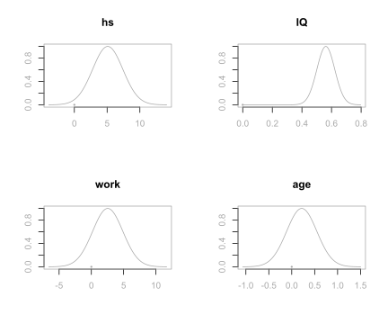
These distributions all center the posterior distributions at their respective OLS estimates \(\hat{\beta}_j\), with the spread of the distribution related to the standard errors \(\text{se}_{\beta_j}\). Recall, that bas.lm uses centered predictors so that the intercept is always the sample mean.
Credible Intervals Summary
We can also report the posterior means, posterior standard deviations, and the 95% credible intervals of the coefficients of all 4 predictors, which may give a clearer and more useful summary. The BAS library provides the method confint to extract the credible intervals from the output cog.coef. If we are only interested in the distributions of the coefficients of the 4 predictors, we may use the parm argument to restrict the variables shown in the summary
confint(cog.coef, parm = 2:5)## 2.5% 97.5% beta
## hs 0.5456507 9.6439990 5.0948248
## IQ 0.4422784 0.6806616 0.5614700
## work -2.0830879 7.1574454 2.5371788
## age -0.4320547 0.8680925 0.2180189
## attr(,"Probability")
## [1] 0.95
## attr(,"class")
## [1] "confint.bas"All together, we can generate a summary table showing the posterior means, posterior standard deviations, the upper and lower bounds of the 95% credible intervals of all coefficients \(\beta_0, \beta_1, \beta_2, \beta_3\), and \(\beta_4\).
out = confint(cog.coef)[, 1:2]
# Extract the upper and lower bounds of the credible intervals
names = c("posterior mean", "posterior std", colnames(out))
out = cbind(cog.coef$postmean, cog.coef$postsd, out)
colnames(out) = names
round(out, 2)## posterior mean posterior std 2.5% 97.5%
## Intercept 86.80 0.87 85.09 88.51
## hs 5.09 2.31 0.55 9.64
## IQ 0.56 0.06 0.44 0.68
## work 2.54 2.35 -2.08 7.16
## age 0.22 0.33 -0.43 0.87As in the simple linear aggression, the posterior estimates from the reference prior, that are in the table, are equivalent to the numbers reported from the lm function in R, or using the confident function in the OLS estimates. These intervals are centered at the posterior mean \(\hat{\beta}_j\) with width given by the appropriate \(t\) quantile with \(n-p-1\) degrees of freedom times the posterior standard deviation \(\text{se}_{\beta_j}\). The primary difference is the interpretation of the intervals. For example, given this data, we believe there is a 95% chance that the kid’s cognitive score increases by 0.44 to 0.68 with one additional increase of the mother’s IQ score. The mother’s high school status has a larger effect where we believe that there is a 95% chance the kid would score of 0.55 up to 9.64 points higher if the mother had three or more years of high school. The credible intervals of the predictors work and age include 0, which implies that we may improve this model so that the model will accomplish a desired level of explanation or prediction with fewer predictors. We will explore model selection using Bayesian information criterion in the next chapter.
Summary
We have provided Bayesian analyses for both simple linear regression and multiple linear regression using the default reference prior. We have seen that, under this reference prior, the marginal posterior distribution of the coefficients is the Student’s \(t\)-distribution. Therefore, the posterior mean and posterior standard deviation of any coefficients are numerically equivalent to the corresponding frequentist OLS estimate and the standard error. This has provided us a base line analysis of Bayesian approach, which we can extend later when we introduce more different coefficient priors.
The difference is the interpretation. Since we have obtained the distribution of each coefficient, we can construct the credible interval, which provides us the probability that a specific coefficient falls into this credible interval.
We have also used the posterior distribution to analyze the probability of a particular observation being an outlier. We defined such probabiilty to be the probability that the error term is \(k\) standard deviations away from 0. This probability is based on information of all data, instead of just the observation itself.
7 Bayesian Model Choice
In Section ?? of Chapter 6, we provided a Bayesian inference analysis for kid’s cognitive scores using multiple linear regression. We found that several credible intervals of the coefficients contain zero, suggesting that we could potentially simplify the model. In this chapter, we will discuss model selection, model uncertainty, and model averaging. Bayesian model selection is to pick variables for multiple linear regression based on Bayesian information criterion, or BIC. Later, we will also discuss other model selection methods, such as using Bayes factors. ## Bayesian Information Criterion (BIC) {#sec:BIC}
In inferential statistics, we compare model selections using \(p\)-values or adjusted \(R^2\). Here we will take the Bayesian propectives. We are going to discuss the Bayesian model selections using the Bayesian information criterion, or BIC. BIC is one of the Bayesian criteria used for Bayesian model selection, and tends to be one of the most popular criteria.
Definition of BIC
The Bayesian information criterion, BIC, is defined to be
\[\begin{equation} \text{BIC} = -2\ln(\widehat{\text{likelihood}}) + (p+1)\ln(n). \tag{20} \end{equation}\]
Here \(n\) is the number of observations in the model, and \(p\) is the number of predictors. That is, \(p+1\) is the number of total parameters (also the total number of coefficients, including the intercept) in the model. Recall that in the Bayesian simple linear regression (Section ??), we mentioned the likelihood of the model \(y_i=\alpha + \beta x_i+\epsilon_i\) is the probability (or probability distribution) for the observed data \(y_i,\ i = 1,\cdots, n\) occur under the given parameters \(\alpha,\ \beta,\ \sigma^2\) \[ \text{likelihood} = p(y_i~|~\alpha,\ \beta, \ \sigma^2) = \mathcal{L}(\alpha,\ \beta,\ \sigma^2), \] where \(\sigma^2\) is the variance of the assumed Normal distribution of the error term \(\epsilon_i\). In general, under any model \(M\), we can write the likelihood of this model as the function of parameter \(\boldsymbol{\theta}\) (\(\boldsymbol{\theta}\) may be a vector of several parameters) and the model \(M\) \[ \text{likelihood} = p(\text{data}~|~\boldsymbol{\theta}, M) = \mathcal{L}(\boldsymbol{\theta}, M). \] If the likelihood function \(\mathcal{L}(\boldsymbol{\theta}, M)\) is nice enough (say it has local maximum), the maximized value of the likelihood, \(\widehat{\text{likelihood}}\), can be achieved by some special value of the parameter \(\boldsymbol{\theta}\), denoted as \(\hat{\boldsymbol{\theta}}\) \[ \widehat{\text{likelihood}} = p(\text{data}~|~\hat{\boldsymbol{\theta}}, M) = \mathcal{L}(\hat{\boldsymbol{\theta}}, M).\]
This is the likelihood that defines BIC.
When the sample size \(n\) is large enough and the data distribution belongs to the exponential family such as the Normal distribution, BIC can be approximated by -2 times likelihood that data are produced under model \(M\):
\[\begin{equation} \text{BIC}\approx -2\ln(p(\text{data}~|~M)) = -2\ln\left(\int p(\text{data}~|~\boldsymbol{\theta}, M)p(\boldsymbol{\theta}~|~M)\, d\boldsymbol{\theta}\right),\qquad \quad \text{when $n$ is large.} \tag{21} \end{equation}\]
Here \(p(\boldsymbol{\theta}~|~M)\) is the prior distribution of the parameter \(\boldsymbol{\theta}\). We will not go into detail why the approximation holds and how we perform the integration in this book. However, we wanted to remind readers that, since BIC can be approximated by the prior distribution of the parameter \(\boldsymbol{\theta}\), we will see later how we utilize BIC to approximate the model likelihood under the reference prior.5
One more observation of formula (21) is that it involves the marginal likelihood of data under model \(M\), \(p(\text{data}~|~M)\). We have seen this quantity when we introduced Bayes factor between two hypotheses or models \[ \text{BF}[M_1:M_2] = \frac{p(\text{data}~|~M_1)}{p(\text{data}~|~M_2)}. \] This also provides connection between BIC and Bayes factor, which we will leverage later.
Similar to AIC, the Akaike information criterion, the model with the smallest BIC is preferrable. Formula (20) can be re-expressed using the model \(R^2\), which is easier to calculate \[\begin{equation} \text{BIC} = n\ln(1-R^2)+(p+1)\ln(n)+\text{constant}, \tag{22} \end{equation}\] where the last term constant only depends on the sample size \(n\), and the observed data \(y_1,\cdots, y_n\). Since this constant does not depend on the choice of model, i.e., the choice of variables, ignoring this constant will not affect the comparison of BICs between models. Therefore, we usually define BIC to be \[\begin{equation*} \text{BIC} = n\ln(1-R^2) + (p+1)\ln(n). \end{equation*}\]
From this expression, we see that adding more predictors, that is, increasing \(p\), will result in larger \(R^2\), which leads to a smaller \(\ln(1-R^2)\) in the first term of BIC. While larger \(R^2\) means better goodness of fit of the data, too many predictors may result in overfitting the data. Therefore, the second term \((p+1)\ln(n)\) is added in the BIC expression to penalize models with too many predictors. When \(p\) increases, the second term increases as well. This provides a trade-off between the goodness of fit given by the first term and the model complexity represented by the second term.
Backward Elimination with BIC
We will use the kid’s cognitive score data set cognitive as an example. We first read in the data set from Gelman’s website and transform the data types of the two variables mom_work and mom_hs, like what we did in Section ??.
# Load the library in order to read in data from website
library(foreign)
# Read in cognitive score data set and process data tranformations
cognitive = read.dta("http://www.stat.columbia.edu/~gelman/arm/examples/child.iq/kidiq.dta")
cognitive$mom_work = as.numeric(cognitive$mom_work > 1)
cognitive$mom_hs = as.numeric(cognitive$mom_hs > 0)
colnames(cognitive) = c("kid_score", "hs","IQ", "work", "age")We start with the full model, with all possible predictors: hs, IQ, work, and age. We will drop one variable at a time and record all BICs. Then we will choose the model with the smallest BIC. We will repeat this process until none of the models yields a decrease in BIC. We use the step function in R to perform the BIC model selection. Notice the default value of the k argument in the step function is k=2, which is for the AIC score. For BIC, k should be log(n) correspondingly.
# Compute the total number of observations
n = nrow(cognitive)
# Full model using all predictors
cog.lm = lm(kid_score ~ ., data=cognitive)
# Perform BIC elimination from full model
# k = log(n): penalty for BIC rather than AIC
cog.step = step(cog.lm, k=log(n)) ## Start: AIC=2541.07
## kid_score ~ hs + IQ + work + age
##
## Df Sum of Sq RSS AIC
## - age 1 143.0 141365 2535.4
## - work 1 383.5 141605 2536.2
## - hs 1 1595.1 142817 2539.9
## <none> 141222 2541.1
## - IQ 1 28219.9 169441 2614.1
##
## Step: AIC=2535.44
## kid_score ~ hs + IQ + work
##
## Df Sum of Sq RSS AIC
## - work 1 392.5 141757 2530.6
## - hs 1 1845.7 143210 2535.0
## <none> 141365 2535.4
## - IQ 1 28381.9 169747 2608.8
##
## Step: AIC=2530.57
## kid_score ~ hs + IQ
##
## Df Sum of Sq RSS AIC
## <none> 141757 2530.6
## - hs 1 2380.2 144137 2531.7
## - IQ 1 28504.1 170261 2604.0In the summary chart, the AIC should be interpreted as BIC, since we have chosen to use the BIC expression where \(k=\ln(n)\).
From the full model, we predict the kid’s cognitive score from mother’s high school status, mother’s IQ score, mother’s work status and mother’s age. The BIC for the full model is 2541.1.
At the first step, we try to remove each variable from the full model to record the resulting new BIC. From the summary statistics, we see that removing variable age results in the smallest BIC. But if we try to drop the IQ variable, this will increase the BIC, which implies that IQ would be a really important predictor of kid_score. Comparing all the results, we drop the age variable at the first step. After dropping age, the new BIC is 2535.4.
At the next step, we see that dropping work variable will result in the lowest BIC, which is 2530.6. Now the model has become
\[ \text{score} \sim \text{hs} + \text{IQ} \]
Finally, when we try dropping either hs or IQ, it will result in higher BIC than 2530.6. This suggests that we have reached the best model. This model predicts kid’s cognitive score using mother’s high school status and mother’s IQ score.
However, using the adjusted \(R^2\), the best model would be the one including not only hs and IQ variables, but also mother’s work status, work. In general, using BIC leads to fewer variables for the best model compared to using adjusted \(R^2\) or AIC.
We can also use the BAS package to find the best BIC model without taking the stepwise backward process.
# Import library
library(BAS)
# Use `bas.lm` to run regression model
cog.BIC = bas.lm(kid_score ~ ., data = cognitive,
prior = "BIC", modelprior = uniform())
cog.BIC##
## Call:
## bas.lm(formula = kid_score ~ ., data = cognitive, prior = "BIC",
## modelprior = uniform())
##
##
## Marginal Posterior Inclusion Probabilities:
## Intercept hs IQ work age
## 1.00000 0.61064 1.00000 0.11210 0.06898Here we set the modelprior argument as uniform() to assign equal prior probability for each possible model.
The logmarg information inside the cog.BIC summary list records the log of marginal likelihood of each model after seeing the data \(\ln(p(\text{data}~|~M))\). Recall that this is approximately proportional to negative BIC when the sample size \(n\) is large
\[ \text{BIC}\approx -2 \ln(p(\text{data}~|~M)).\]
We can use this information to retrieve the model with the largest log of marginal likelihood, which corresponds to the model with the smallest BIC.
# Find the index of the model with the largest logmarg
best = which.max(cog.BIC$logmarg)
# Retrieve the index of variables in the best model, with 0 as the index of the intercept
bestmodel = cog.BIC$which[[best]]
bestmodel## [1] 0 1 2# Create an indicator vector indicating which variables are used in the best model
# First, create a 0 vector with the same dimension of the number of variables in the full model
bestgamma = rep(0, cog.BIC$n.vars)
# Change the indicator to 1 where variables are used
bestgamma[bestmodel + 1] = 1
bestgamma## [1] 1 1 1 0 0From the indicator vector bestgamma we see that only the intercept (indexed as 0), mother’s high school status variable hs (indexed as 1), and mother’s IQ score IQ (indexed as 2) are used in the best model, with 1’s in the corresponding slots of the 5-dimensional vector \((1, 1, 1, 0, 0)\).
Coefficient Estimates Under Reference Prior for Best BIC Model
The best BIC model \(M\) can be set up as follows and we have adopted the “centered” model convention for convenient analyses \[ y_{\text{score},i} = \beta_0 + \beta_1(x_{\text{hs},i} - \bar{x}_{\text{hs}, i})+\beta_2(x_{\text{IQ},i}-\bar{x}_{\text{IQ}})+\epsilon_i,\qquad \quad i = 1,\cdots, n \]
We would like to get the posterior distributions of the coefficients \(\beta_0\), \(\beta_1\), and \(\beta_2\) under this model. Recall that the reference prior imposes a uniformly flat prior distribution on coefficients \(p(\beta_0, \beta_1, \beta_2~|~M)\propto 1\) and that \(p(\sigma^2~|~M) \propto 1/\sigma^2\), so together the joint prior distribution \(p(\beta_0, \beta_1, \beta_2, \sigma^2~|~M)\) is proportional to \(1/\sigma^2\). When the sample size \(n\) is large, any proper prior distribution \(p(\beta_0, \beta_1, \beta_2, \sigma^2~|~M)\) is getting flatter and flatter, which can be approximated by the reference prior. At the same time, the log of marginal likelihood \(\ln(p(\text{data}~|~M))\) can be approximated by the BIC. Therefore, we use prior = "BIC" in the bas.lm function when we use the BIC as an approximation of the log of marginal likelihood under the reference prior. The posterior mean of \(\beta_0\) in the result is the sample mean of the kids’ cognitive scores, or \(\bar{Y}_{\text{score}}\), since we have centered the model.
# Fit the best BIC model by imposing which variables to be used using the indicators
cog.bestBIC = bas.lm(kid_score ~ ., data = cognitive,
prior = "BIC", n.models = 1, # We only fit 1 model
bestmodel = bestgamma, # We use bestgamma to indicate variables
modelprior = uniform())
# Retrieve coefficients information
cog.coef = coef(cog.bestBIC)
# Retrieve bounds of credible intervals
out = confint(cog.coef)[, 1:2]
# Combine results and construct summary table
coef.BIC = cbind(cog.coef$postmean, cog.coef$postsd, out)
names = c("post mean", "post sd", colnames(out))
colnames(coef.BIC) = names
coef.BIC## post mean post sd 2.5% 97.5%
## Intercept 86.797235 0.87054033 85.0862025 88.5082675
## hs 5.950117 2.21181218 1.6028370 10.2973969
## IQ 0.563906 0.06057408 0.4448487 0.6829634
## work 0.000000 0.00000000 0.0000000 0.0000000
## age 0.000000 0.00000000 0.0000000 0.0000000Comparing the coefficients in the best model with the ones in the full model (which can be found in Section ??), we see that the 95% credible interval for IQ variable is the same. However, the credible interval for high school status hs has shifted slightly to the right, and it is also slighly narrower, meaning a smaller posterior standard deviation. All credible intervals of coefficients exclude 0, suggesting that we have found a parsimonious model.6
Other Criteria
BIC is one of the criteria based on penalized likelihoods. Other examples such as AIC (Akaike information criterion) or adjusted \(R^2\), employ the form of \[ -2\ln(\widehat{\text{likelihood}}) + (p+1)\times\text{some constant},\] where \(p\) is the number of predictor variables and “some constant” is a constant value depending on different criteria. BIC tends to select parsimonious models (with fewer predictor variables) while AIC and adjusted \(R^2\) may include variables that are not statistically significant, but may do better for predictions.
Other Bayesian model selection decisions may be based on selecting models with the highest posterior probability. If predictions are important, we can use decision theory to help pick the model with the smallest expected prediction error. In addiciton to goodness of fit and parsimony, loss functions that include costs associated with collecting variables for predictive models may be of important consideration. ## Bayesian Model Uncertainty {#sec:BMU}
In the last section, we discussed how to use Bayesian Information Criterion (BIC) to pick the best model, and we demonstrated the method on the kid’s cognitive score data set. However, we may often have several models with similar BIC. If we only pick the one with the lowest BIC, we may ignore the presence of other models that are equally good or can provide useful information. The credible intervals of coefficients may be narrower since the uncertainty is being ignored when we consider only one model. Narrower intervals are not always better if they miss the true values of the parameters. To account for the uncertainty, getting the posterior probability of all possible models is necessary. In this section, we will talk about how to convert BIC into Bayes factor to find the posterior probability of all possible models. We will again use the BAS package in R to achieve this goal.
Model Uncertainty
When forecasting the path of a hurricane, having an accurate prediction and measurement of uncertainty is important for early warning. In this case, we would consider the probability of several potential paths that the hurricane may make landfall. Similar to hurricane forecasting, we would also like to obtain the posterior probability of all possible models for uncertainty measurement.
To represent model uncertainty, we need to construct a probability distribution over all possible models where the each probability provides measure of how likely the model is to happen.
Suppose we have a multiple linear regression \[ y_i = \beta_0+\beta_1(x_{1,i} - \bar{x}_1)+\beta_2(x_{2,i} - \bar{x}_2)+\cdots+\beta_p(x_{p,i}-\bar{x}_p)+\epsilon_i, \quad 1\leq i \leq n,\] with \(p\) predictor variables \(x_1,\cdots, x_p\). There are in total \(2^p\) different models, corresponding to \(2^p\) combinations of variable selections. there are 2 possibilities for each variable: either getting selected or not, and we have in total \(p\) variables. We denote each model as \(M_m,\ m=1,\cdots,2^p\). To obtian the posterior probability of each model \(p(M_m~|~\text{data})\), Bayes’ rule tells that that we need to assign the prior probability \(p(M_m)\) to each model, and to then obtain the marginal likelihood of each model \(p(\text{data}~|~M_m)\). By Bayes’ rule, we update the posterior probability of each model \(M_m\) after seeing the date, via marginal likelihood of model \(M_m\):
\[\begin{equation} p(M_m~|~\text{data}) = \frac{\text{marginal likelihood of }M_m\times p(M_m)}{\sum_{j=1}^{2^p}\text{marginal likelihood of }M_j\times p(M_j)} = \frac{p(\text{data}~|~M_m)p(M_m)}{\sum_{j=1}^{2^p}p(\text{data}~|~M_j)p(M_j)}. \tag{23} \end{equation}\]
The marginal likelihood \(p(\text{data}~|~M_m)\) of each model \(M_m\) serves to reweight the prior probability \(p(M_m)\), so that models with higher likelihoods have larger weights, and models with lower likelihoods receive smaller weights. We renormalize this weighted prior probability by dividing it by the sum \(\displaystyle \sum_{j=1}^{2^p}p(\text{data}~|~M_j)p(M_j)\) to get the posterior probability of each model.
Recall that the prior odd between two models \(M_1\) and \(M_2\) is defined to be
\[ \text{Odd}[M_1:M_2] = \frac{p(M_1)}{p(M_2)}, \] and the Bayes factor is defined to be the ratio of the likelihoods of two models \[ \text{BF}[M_1:M_2] = \frac{p(\text{data}~|~M_1)}{p(\text{data}~|~M_2)}. \]
Suppose we have chosen a base model \(M_b\), we may divide both the numerator and the denominator of the formula (23) by \(p(\text{data}~|~M_b)\times p(M_b)\). This gives us a new formula to calculate the posterior probability of model \(M_m\) based on the prior odd and the Bayes factor. In this new formula, we can see that the evidence from the data in the Bayes factor \(\text{BF}[M_j:M_b],\ j=1,\cdots, 2^p\) serve to upweight or downweight the prior odd \(\text{Odd}[M_j:M_b],\ j=1,\cdots,2^p\).
\[ \begin{aligned} p(M_m~|~\text{data}) = & \frac{p(\text{data}~|~M_m)\times p(M_m)/(p(\text{data}~|~M_b)\times p(M_b))}{\sum_{j=1}^{2^p}(p(\text{data}~|~M_j)\times p(M_j))/(p(\text{data}~|~M_b)\times p(M_b))} \\ & \\ = & \frac{[p(\text{data}~|~M_m)/p(\text{data}~|~M_b)]\times[p(M_m)/p(M_b)]}{\sum_{j=1}^{2^p}[p(\text{data}~|~M_j)/p(\text{data}~|~M_b)]\times[p(M_j)/p(M_b)]}\\ & \\ = & \frac{\text{BF}[M_m:M_b]\times \text{Odd}[M_m:M_b]}{\sum_{j=1}^{2^p}\text{BF}[M_j:M_b]\times \text{Odd}[M_j:M_b]}. \end{aligned} \] Any model can be used as the base model \(M_b\). It could be the model with the highest posterior probability, or the null model \(M_0\) with just the intercept \(y_i = \beta_0+\epsilon_i\).
Using BIC, we can approximate the Bayes factor between two models by their OLS \(R\)-squared’s and the numbers of predictors used in the models, when we have large sample of data. This provides a much easier way to approximate the posterior probability of models since obtaining \(R^2\) can be done by the usual OLS linear regression. Recall that in Section ??, we provided the fact that BIC of any model \(M_m\) (denoted as \(\text{BIC}_m\)) is an asymptotic approximation of the log of marginal likelihood of \(M_m\) when the sample size \(n\) is large (Equation (21)) \[ \text{BIC}_m \approx -2 \ln(\text{marginal likelihood}) = -2\ln(p(\text{data}~|~M_m)). \]
Using this fact, we can approximate Bayes factor between two models by their BICs \[ \text{BF}[M_1:M_2] = \frac{p(\text{data}~|~M_1)}{p(\text{data}~|~M_2)} \approx \frac{\exp(-\text{BIC}_1/2)}{\exp(-\text{BIC}_2/2)}=\exp\left(-\frac{1}{2}(\text{BIC}_1-\text{BIC}_2)\right).\]
We also know that BIC can be calculated by the OLS \(R^2\) and the number of predictors \(p\) from Equation (22) in Section ?? \[ \text{BIC} = n\ln(1-R^2) + (p+1)\ln(n) + \text{constant}. \] (We usually ignore the constant in the last term since it does not affect the difference betweeen two BICs.)
Using this formula, we can approximate Bayes factor between model \(M_1\) and \(M_2\) by their corresponding \(R\)-squared’s and the numbers of predictors \[\begin{equation} \text{BF}[M_1:M_2]\approx \left(\frac{1-R_1^2}{1-R_2^2}\right)^{\frac{n}{2}}\times n^{\frac{p_1-p_2}{2}}. \tag{24} \end{equation}\]
As for the null model \(M_0:\ y_i = \beta_0+\epsilon_i\), \(R_0^2 = 0\) and \(p_0=0\). Equation (24) can be further simplified as \[ \text{BF}[M_m:M_0] = (1-R_m^2)^{\frac{n}{2}}\times n^{\frac{p_m}{2}}. \]
Calculating Posterior Probability in R
Back to the kid’s cognitive score example, we will see how the summary of results using bas.lm tells us about the posterior probability of all possible models.
# Load the library in order to read in data from website
library(foreign)
# Read in cognitive score data set and process data tranformations
cognitive = read.dta("http://www.stat.columbia.edu/~gelman/arm/examples/child.iq/kidiq.dta")
cognitive$mom_work = as.numeric(cognitive$mom_work > 1)
cognitive$mom_hs = as.numeric(cognitive$mom_hs > 0)
colnames(cognitive) = c("kid_score", "hs","IQ", "work", "age")Suppose we have already loaded the data and pre-processed the columns mom_work and mom_hs using as.numeric function, as what we did in the last section. To represent model certainty, we construct the probability distribution overall possible 16 (=\(2^4\)) models where each probability \(p(M_m)\) provides a measure of how likely the model \(M_m\) is. Inside the bas.lm function, we first specify the full model, which in this case is the kid_score, being regressed by all predictors: mother’s high school status hs, mother’s IQ IQ, mother’s work status work and mother’s age age. We take the data = cognitive in the next argument. For the prior distribution of the coefficients for calculating marginal likelihoods, we use prior = "BIC" to approximate the marginal likelihood \(p(\text{data}~|~M_m)\). We then use modelprior = uniform() in the argument to assign equal prior probability \(p(M_m),\ m=1,\cdots, 16\) to all 16 models. That is, \(\displaystyle p(M_m) = \frac{1}{16}\).
# Import libary
library(BAS)
# Use `bas.lm` for regression
cog_bas = bas.lm(kid_score ~ hs + IQ + work + age,
data = cognitive, prior = "BIC",
modelprior = uniform())cog_bas is a bas object. The usual print, summary, plot, coef, fitted, predict functions are available and can be used on bas objects similar to lm objects created by the usual lm function. From calling
names(cog_bas)## [1] "probne0" "which" "logmarg" "postprobs"
## [5] "priorprobs" "sampleprobs" "mse" "mle"
## [9] "mle.se" "shrinkage" "size" "R2"
## [13] "rank" "rank_deficient" "n.models" "namesx"
## [17] "n" "prior" "modelprior" "alpha"
## [21] "probne0.RN" "postprobs.RN" "include.always" "df"
## [25] "n.vars" "Y" "X" "mean.x"
## [29] "call" "xlevels" "terms" "model"one can see the outputs and analyses that we can extract from a bas object.
The bas object takes the summary method
round(summary(cog_bas), 3)## P(B != 0 | Y) model 1 model 2 model 3 model 4 model 5
## Intercept 1.000 1.000 1.000 1.000 1.000 1.000
## hs 0.611 1.000 0.000 0.000 1.000 1.000
## IQ 1.000 1.000 1.000 1.000 1.000 1.000
## work 0.112 0.000 0.000 1.000 1.000 0.000
## age 0.069 0.000 0.000 0.000 0.000 1.000
## BF NA 1.000 0.562 0.109 0.088 0.061
## PostProbs NA 0.529 0.297 0.058 0.046 0.032
## R2 NA 0.214 0.201 0.206 0.216 0.215
## dim NA 3.000 2.000 3.000 4.000 4.000
## logmarg NA -2583.135 -2583.712 -2585.349 -2585.570 -2585.939The summary table shows us the following information of the top 5 models
| Item | Description |
|---|---|
P(B!=0 | Y) |
Posterior inclusion probability (pip) of each coefficient under data \(Y\) |
0 or 1 in the column |
indicator of whether the variable is included in the model |
BF |
Bayes factor \(\text{BF}[M_m:M_b]\), where \(M_b\) is the model with highest posterior probability |
PostProbs |
Posterior probability of each model |
R2 |
\(R\)-squared in the ordinary least square (OLS) regression |
dim |
Number of variables (including the intercept) included in the model |
logmarg |
Log of marginal likelihood of the model, which is approximately \(-\displaystyle\frac{1}{2}\text{BIC}\) |
cog_prob = sort(cog_bas$postprobs)All top 5 models suggest to exclude age variable and include IQ variable. The first model includes intercept \(\beta_0\) and only hs and IQ, with a posterior probability of about 0. The model with the 2nd highest posterior probability, which includes only the intercept and the variable IQ, has posterior probability of about 0. These two models compose of total posterior probability of about 0, leaving only 1 posterior probability to the remaining 14 models.
Using the print method, we obtain the marginal posterior inclusion probability (pip) \(p(\beta_j\neq 0)\) of each variable \(x_j\).
print(cog_bas)##
## Call:
## bas.lm(formula = kid_score ~ hs + IQ + work + age, data = cognitive,
## prior = "BIC", modelprior = uniform())
##
##
## Marginal Posterior Inclusion Probabilities:
## Intercept hs IQ work age
## 1.00000 0.61064 1.00000 0.11210 0.06898Bayesian Model Averaging
In the last section, we explored model uncertainty using posterior probability of models based on BIC. In this section, we will continue the kid’s cognitive score example to see how to obtain an Bayesian model averaging results using model posterior probability.
Visualizing Model Uncertainty
Recall that in the last section, we used the bas.lm function in the BAS package to obtain posterior probability of all models in the kid’s cognitive score example.
\[ \text{score} ~\sim~ \text{hq} + \text{IQ} + \text{work} + \text{age} \]
We have found the posterior distribution under model uncertainty using all possible combinations of the predictors, the mother’s high school status hs, mother’s IQ score IQ, whether the mother worked during the first three years of the kid’s life work, and mother’s age age. With 4 predictors, there are \(2^4 = 16\) possible models. In general, for linear regression model with \(p\) predictor variables
\[ y_i = \beta_0+\beta_1(x_{p,i}-\bar{x}) + \cdots + \beta_p(x_{p,i}-\bar{x}_p)+\epsilon_i,\qquad i = 1, \cdots,n,\]
there will be in total \(2^p\) possible models.
We can also visualize model uncertainty from the bas object cog_bas that we generated in the previous section.
# Load the library in order to read in data from website
library(foreign)
# Read in cognitive score data set and process data tranformations
cognitive = read.dta("http://www.stat.columbia.edu/~gelman/arm/examples/child.iq/kidiq.dta")
cognitive$mom_work = as.numeric(cognitive$mom_work > 1)
cognitive$mom_hs = as.numeric(cognitive$mom_hs > 0)
colnames(cognitive) = c("kid_score", "hs","IQ", "work", "age")
library(BAS)
cog_bas = bas.lm(kid_score ~ hs + IQ + work + age,
data = cognitive,
prior = "BIC",
modelprior = uniform())In R, the image function may be used to create an image of the model space that looks like a crossword puzzle.
image(cog_bas, rotate = F)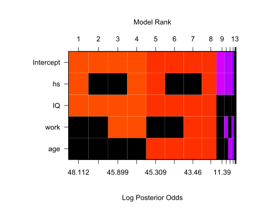
To obtain a clearer view for model comparison, we did not rotate the image. Here, the predictors, including the intercept, are on the \(y\)-axis, while the \(x\)-axis corresponds to each different model. Each vertical column corresponds to one model. For variables that are not included in one model, they will be represented by black blocks. For example, model 1 includes the intercept, hs, and IQ, but not work or age. These models are ordered according to the log of posterior odd over the null model (model with only the intercept). The log of posterior odd is calculated as
\[\ln(\PO[M_m:M_0]) = \ln (\text{BF}[M_m:M_0]\times \text{Odd}[M_m:M_0]).\]
Since we assing same prior probability for all models, \(\text{O}[M_m:M_0] = 1\) and therefore, the log of posterior odd is the same as the log of the Bayes factor. The color of each column is proportional to the log of the posterior probability. Models with same colors have similar posterior probabilities. This allows us to view models that are clustered together, when the difference within a cluster is not worth a bare mention.
If we view the image by rows, we can see whether one variable is included in a particular model. For each variable, there are only 8 models in which it will appear. For example, we see that IQ appears in all the top 8 models with larger posterior probabilities, but not the last 8 models. The image function shows up to 20 models by default.
Bayesian Model Averaging Using Posterior Probability
Once we have obtained the posterior probability of each model, we can make inference and obtain weighted averages of quantities of interest using these probabilities as weights. Models with higher posterior probabilities receive higher weights, while models with lower posterior probabilities receive lower weights. This gives the name “Bayesian Model Averaging” (BMA). For example, the probability of the next prediction \(\hat{Y}^*\) after seeing the data can be calculated as a “weighted average” of the prediction of next observation \(\hat{Y}^*_j\) under each model \(M_j\), with the posterior probability of \(M_j\) being the “weight” \[ \hat{Y}^* = \sum_{j=1}^{2^p}\hat{Y}^*_j\ p(M_j~|~\text{data}). \]
In general, we can use this weighted average formula to obtain the value of a quantity of interest \(\Delta\). \(\Delta\) can \(Y^*\), the next observation; \(\beta_j\), the coefficient of variable \(X_j\); \(p(\beta_j~|~\text{data})\), the posterior probability of \(\beta_j\) after seeing the data. The posterior probability of \(\Delta\) seeing the data can be calculated using the formula
\[\begin{equation} p(\Delta~|~\text{data}) = \sum_{j=1}^{2^p}p(\Delta~|~ M_j,\ \text{data})p(M_j~|~\text{data}). \tag{25} \end{equation}\]
This formula is similar to the one we have seen in Week 2 lecture Predictive Inference when we used posterior probability of two different success rates of getting the head in a coin flip to calculate the predictive probability of getting heads in future coin flips. Recall in that example, we have two competing hypothese, that the success rate (also known as the probability) of getting heads in coin flips, are \[ H_1: p = 0.7,\qquad \text{vs}\qquad H_2: p=0.4.\]
We calcualted the posterior probability of each success rate. They are \[ \begin{aligned} P(p=0.7~|~\text{data})= & P(H_1~|~\text{data})= p^* = 0.754,\\ P(p=0.4~|~\text{data}) = & P(H_2~|~\text{data}) = 1-p^* = 0.246. \end{aligned} \]
We can use these two probabilities to calculate the posterior probability of getting head in the next coin flip \[\begin{equation} P(\text{head}~|~\text{data}) = P(\text{head}~|~H_1,\text{data})P(H_1~|~\text{data}) + P(\text{head}~|~H_2,\text{data})P(H_2~|~\text{data}). \tag{26} \end{equation}\]
We can see that equation (26) is just a special case of the general equation (25) when the posterior probability of hypotheses \(P(H_1~|~\text{data})\) and \(P(H_2~|~\text{data})\) serve as weights.
Moreover, the expected value of \(\Delta\) can also be obtained by a weighted average formula of expected values on each model, using conditional probability
\[ E[\Delta~|~\text{data}] = \sum_{j=1}^{2^p}E[\Delta~|~M_j,\ \text{data}]p(M_j~|~\text{data}).\]
Since the weights \(p(M_j~|~\text{data})\) are probabilities and have to sum to one, if the best model had posterior probability one, all of the weights would be placed on that single best model. In this case, using BMA would be equivalent to selecting the best model with the highest posterior probability. However, if there are several models that receive substantial probability, they would all be included in the inference and account for the uncertainty about the true model.
Coefficient Summary under BMA
We can obtain the coefficients by the coef function.
cog_coef = coef(cog_bas)
cog_coef##
## Marginal Posterior Summaries of Coefficients:
##
## Using BMA
##
## Based on the top 16 models
## post mean post SD post p(B != 0)
## Intercept 86.79724 0.87287 1.00000
## hs 3.59494 3.35643 0.61064
## IQ 0.58101 0.06363 1.00000
## work 0.36696 1.30939 0.11210
## age 0.02089 0.11738 0.06898Under Bayesian model averaging, the table above provides the posterior mean, the posterior standard deviation, and the posterior inclusion probability (pip) of each coefficient. The posterior mean of the coefficient \(\hat{\beta}_j\) under BMA would be used for future predictions. The posterior standard deviation \(\text{se}_{\beta_j}\) provides measure of variability of the coefficient \(\beta_j\). An approximate range of plausible values for each of the coefficients may be obtained via the empirical rule \[ (\hat{\beta}_j-\text{critical value}\times \text{se}_{\beta_j},\ \hat{\beta}_j+\text{critical value}\times \text{se}_{\beta_j}).\]
However, this only applies if the posterior distribution is symmetric or unimodal.
The posterior mean of the intercept, \(\hat{\beta}_0\), is obtained after we have centered the variables. We have discussed the effect of centering the model. One of the advantage of doing so is that the intercept \(\beta_0\) represents the sample mean of the observed response \(Y\). Under the reference prior, the point estimate of the intercept \(\hat{\beta}_0\) is exactly the mean \(\bar{Y}\).
We see that the posterior mean, standard deviation and inclusion probability are slightly different than the ones we obtained in Section ?? when we forced the model to include all variables. Under BMA, IQ has posterior inclusion probability 1, suggesting that it is very likely that IQ should be included in the model. hs also has a high posterior inclusion probability of about 0.61. However, the posterior inclusion probability of mother’s work status work and mother’s age age are relatively small compared to IQ and hs.
We can also plot the posterior distributions of these coefficients to take a closer look at the distributions
par(mfrow = c(2, 2))
plot(cog_coef, subset = c(2:5))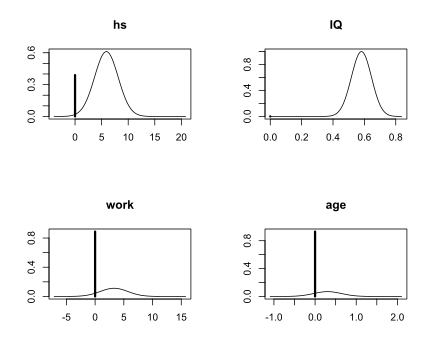
This plot agrees with the summary table we obtained above, which shows that the posterior probability distributions of work and age have a very large point mass at 0, while the distribution of hs has a relatively small mass at 0. There is a slighly little tip at 0 for the variable IQ, indicating that the posterior inclusion probability of IQ is not exactly 1. However, since the probability mass for IQ to be 0 is so small, that we are almost certain that IQ should be included under Bayesian model averaging.
Summary
In this chapter, we have discussed Bayesian model uncertainty and Bayesian model averaging. We have shown how Bayesian model averaging can be used to address model uncertainty using the ensemble of models for inference, rather than selecting a single model. We applied this to the kid’s cognitive score data set using BAS package in R. Here we illustrated the concepts using BIC and reference prior on the coefficients. In the next chapter, we will explore alternative priors for coefficients, taking into account the sensitivity of model selection to prior choices. We will also explore Markov Chain Monte Carlo algorithm for model sampling when the model space is too large for theoretical calculations.
8 Stochastic Explorations Using MCMC
In this chapter, we will discuss stochastic explorations of the model space using Markov Chain Monte Carlo method. This is particularly usefull when the number of models in the model space is relatively large. We will introduce the idea and the algorithm that we apply on the kid’s cognitive score example. Then We will introduce some alternative priors for the coefficients other than the reference priors that we have been focused on. We will demonstrate using Markov Chain Monte Carlo on the crime data set to see how to use this stochastic method to explore the model space and how different priors may lead to different posterior inclusion probability of coefficients. Finally, we will summarize decision making strategies under Bayesian model uncertainty.## Stochastic Exploration
In the last chapter, we explored model uncertainty using posterior probability of each model and Bayesian model averaging based on BIC. We applied the idea on the kid’s cognitive score data set. With 4 predictors, we had \(2^4 = 16\) possible models. Since the total number of models is relatively small, it is easy to enumerate all possible models to obtain Bayesian model averaging results. However, in general we often have data sets with large number of variables, which may lead to long computating time via enumeration. In this section, we will present one of the common stochastic methods, Markov Chain Monte Carlo (MCMC), to explore model spaces and implement Bayesian model averaging to estimate quantities of interest.
Markov Chain Monte Carlo Exploration
Let us assume that we have a pseudo population of possible models that we obtained from all the possible combinations of regression models from the kid’s cognitive score example. We prepare the data set as in Section ?? and run bas.lm to obtain posterior probability of each model as we did in Section ??.
# Data processing
library(foreign)
cognitive = read.dta("http://www.stat.columbia.edu/~gelman/arm/examples/child.iq/kidiq.dta")
cognitive$mom_work = as.numeric(cognitive$mom_work > 1)
cognitive$mom_hs = as.numeric(cognitive$mom_hs > 0)
colnames(cognitive) = c("kid_score", "hs","IQ", "work", "age")
# Run regression
library(BAS)
cog_bas = bas.lm(kid_score ~ hs + IQ + work + age,
prior = "BIC",
modelprior = uniform(),
data = cognitive)We will use this example to explore the idea of MCMC and generalize it to regression models with much larger model spaces. To explore the models, we may arrange them by their model sizes, the number of predictors plus the intercept, on the \(x\)-axis, and their posterior probabilities on the \(y\)-axis.
library(ggplot2)
# Construct data frame for plotting
output = data.frame(model.size = cog_bas$size, model.prob = cog_bas$postprobs)
# Plot model size vs mode posterior probability
ggplot(data = output, aes(x = model.size, y = model.prob)) +
geom_point(color = "blue", pch = 17, size = 3) +
xlab("model size") + ylab("model posterior probability")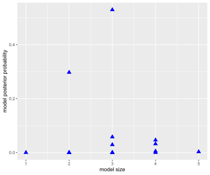
We could then take a sample from this population of models with replacement (therefore, some models may be selected more than once in this sample). This process could be done using the sample function in R. We hope that the frequency of appearance of a model would be a good approximation of the posterior probability of this model. We use \(I(M_j = M_m)\) as the indicator function to indicate that the current model \(M_j\) we sample is the model of interest \(M_m\), that is
\[ I(M_j=M_m) = \left\{\begin{array}{ll} 1, & \text{if $M_j = M_m$} \\ 0, & \text{if $M_j\neq M_m$}\end{array}\right. \]
Suppose we are going to sample \(J\) models in total, we hope that \[\begin{equation} p(M_m~|~\text{data}) \approx \frac{\sum_{j=1}^J I(M_j=M_m)}{J} = \sum_{j=1}^J \frac{I(M_j=M_m)}{J}. \tag{27} \end{equation}\]
After all, we would not need to calculate the model posterior probability \(P(M_m~|~\text{data})\). The quantity from the sampling \(\displaystyle \sum_{j=1}^J\frac{I(M_j=M_m)}{J}\) would provide a good approximation, which only requires simple counting.
In order to ensure that we would sample models with a probability that is equal to their posterior probability, or in a simpler way, proportional to the marginal likelihood times the prior probability \(p(\text{data}~|~M_m)\times p(M_m)\), we need to design a sampling method that replaces old models with new models when the posterior probability goes up, and keeps the old models when the posterior probability is not improved.
Here, we propose the Metropolis-Hastings algorithm. We start with an initial model \(M^{(0)}\). This could be any model we like in the model space. We start iterating over the entire model space, randomly pick the next model \(M^{*(1)}\) and see whether this model improves the posterior probability. We use the notation \(M^{*(1)}\) instead of \(M^{(1)}\) because we are not sure whether we should include this model in our final sample, or we should consider other models. Therefore, we calculate the ratio between the posterior probability of the two models, the original model \(M^{(0)}\), and the proposed model \(M^{*(1)}\), which turns out to be the posterior odd between the two models \[ R=\frac{p(M^{*(1)}~|~\text{data})}{p(M^{(0)}~|~\text{data})}=\text{PO}[M^{*(1)}:M^{(0)}]. \]
Our goal is to avoid actually calculating the posterior probability of each model, so we instead would compute \(R\) using the Bayes factor and the prior odd of the two models. \[ R=\frac{p(M^{*(1)}~|~\text{data})}{p(M^{(0)}~|~\text{data})}=\PO[M^{*(1)}:M^{(0)}]=\text{BF}[M^{*(1)}:M^{(0)}]\times \text{Odd}[M^{*(1)}:M^{(0)}]. \]
If \(R\geq 1\), that means \(M^{*(1)}\) will surely improve the posterior probability after seeing the data compared to \(M^{(0)}\). So we would like to include \(M^{*(1)}\) into our sample, because \(M^{*(1)}\) deserves more occurrence. In this case, we set \(M^{*(1)}\) to be \(M^{(1)}\), indicating that it is part of our final sample. However, if \(R<1\), we are not that sure whether \(M^{*(1)}\) should be in the sample. But we also do not want to only include models with higher posterior probabilities. Remember that the purpose of this algorithm is to reproduce the frequency of model occurance in the final sample so that the relative frequency of occurrence of each model could be a good proxy of its posterior probability. Even though the proposed model \(M^{*(1)}\) has lower posterior probability, we should still have some representatives of this model in our final sample. Hence we set \(M^{*(1)}\) to be \(M^{(1)}\) with probability \(R\), reflecting the chance that this model would be in our sample is \(R\).
To include \(M^{*(1)}\) in the final sample with probability \(R\), we may use a random number generator to generate number between 0 and 1 and see whether this number is larger than \(R\). Or we may set a coin flip with heads showing up with probability \(R\). If the random number is larger than \(R\), or the head shows up using the biased coin, we include this model. Otherwise, we neglect this proposed model and keep on selecting the next model.
Once the first model \(M^*{(1))}\) is sampled, we move onto the second model \(M^{(2)}\) with the same process. In general, after we have obtained model \(M^{(i)}\), we propose a model \(M^{*(i+1)}\) and calculate the ratio of the posterior probabilities of the two models \[ R = \frac{p(M^{*(i+1)}~|~\text{data})}{p(M^{(i)}~|~\text{data})}=\text{BF}[M^{*(i+1)}:M^{(i)}]\times \text{Odd}[M^{*(i+1)}:M^{(i)}].\] If \(R\geq 1\), we unconditionally accept \(M^{*(i+1)}\) to be our next model \(M^{(i)}\). If \(R<1\), we accept \(M^{*(i+1)}\) to be \(M^{(i)}\) with probability \(R\).
After obtaining \(J\) models, \(M^{(1)}, M^{(2)}, \cdots, M^{(J)}\), we can count how many models inside this sample is \(M_m\), the model we are interested. Then we use the formula (27) to approximate the posterior probability of \(M_m\). These estimated probabilities can be used in model selection or BMA instead of the exact expressions.
We propose model randomly in the above algorithm, i.e., all models are equally likely to be proposed. This can be pretty inefficient if there are lots of models with low probabilities. We may come up with other ways to propose models. For example, we may look at neighboring models of our current model by either adding one predictor that is currently not in the model, or randomly dropping one of the current predictors from the model. We may flip a fair coin to decide whether to add or to drop. This forms a random walk across neighboring models. We may also propose to swap out a current predictor with one that is currently not in the model, which maintains the size of the model. This has the potential to take bigger jumps in the model space. There are other possible moves that can be designed to help move around over the model space. However, we have to be careful to adjust for any potential bias, due to how we propose new models, to ensure that the relative frequency eventually would converge to the posterior probability. In the lecture video, we have demonstrated the Markov Chain Monte Carlo method on the kid’s cognitive score using animation to show how each model was proposed and finally selected.
Other Priors for Bayesian Model Uncertainty
So far, we have discussed Bayesian model selection and Bayesian model averaging using BIC. BIC is an asymptotic approximation of the log of marginal likelihood of models when the number of data points is large. Under BIC, prior distribution of \(\bv = (\beta_0, \beta_1,\cdots, \beta_p)^T\) is uniformaly flat, which is the same as applying the reference prior on \(\bv\) conditioning on \(\sigma^2\). In this section, we will introduce a new conjugate prior distribution, called the Zellner’s \(g\)-prior. We will see that this prior leads to simple expressions for the Bayes factor, in terms of summary statistics from ordinary least square (OLS). We will talk about choosing the parameter \(g\) in the prior and conduct a sensitivity analysis, using the kid’s cognitive score data that we used in earlier sections.
Zellner’s \(g\)-Prior
To analyze the model more conveniently, we still stick with the “centered” regression model. Let \(y_1,\cdots,y_n\) to be the observations of the response variable \(Y\). The multiple regression model is
\[ y_i = \beta_0 + \beta_1(x_{1,i}-\bar{x}_1) + \beta_2(x_{2, i}-\bar{x}_2)+\cdots +\beta_p(x_{p, i}-\bar{x}_p)+\epsilon_i, \quad 1\leq i\leq n.\]
As before, \(\bar{x}_1, \cdots,\bar{x}_p\), are the sample means of the variables \(X_1,\cdots,X_p\). Since we have centered all the variables, \(\beta_0\) is no longer the \(y\)-intercept. Instead, it is the sample mean of \(Y\) when taking \(X_1=\bar{x}_1,\cdots, X_p=\bar{x}_p\). \(\beta_1,\cdots,\beta_p\) are the coefficients for the \(p\) variables. \(\bv=(\beta_0,\beta_1,\cdots,\beta_p)^T\) is the vector notation representing all coefficients, including \(\beta_0\).
Under this model, we assume
\[ y_i~|~ \bv, \sigma^2~\iid~\No(\beta_0+\beta_1(x_{1,i}-\bar{x}_1)+\cdots+\beta_p(x_{p,i}-\bar{x}_p), \sigma^2), \] which is equivalent to \[ \epsilon_i~|~ \bv, \sigma^2 ~\iid~\No(0, \sigma^2). \]
We then specify the prior distributions for \(\beta_j,\ 0\leq j\leq p\). Zellner proposed a simple informative conjugate multivariate normal prior for \(\bv\) conditioning on \(\sigma^2\) as
\[ \bv~|~\sigma^2 ~\sim ~\No(\boldsymbol{b}_0, \Sigma = g\sigma^2\text{S}_{\text{BF}{xx}}^{-1}). \]
Here \[ \text{S}_{\text{BF}{xx}} = (\mathbf{X}-\bar{\mathbf X})^T(\mathbf X - \bar{\mathbf X}), \]
where the matrix \(\mathbf{X}-\bar{\mathbf X}\) is \[ \mathbf{X}-\bar{\mathbf X} = \left(\begin{array}{cccc} | & | & \cdots & | \\ X_1-\bar{X}_1 & X_2 - \bar{X}_2 & \cdots & X_p-\bar{X}_p \\ | & | & \cdots & | \end{array}\right) = \left(\begin{array}{cccc} x_{1, 1} - \bar{x}_1 & x_{2, 1} - \bar{x}_2 & \cdots & x_{p, 1} - \bar{x}_p \\ \vdots & \vdots & & \vdots \\ x_{1, n} - \bar{x}_1 & x_{2, n} - \bar{x}_2 & \cdots & x_{p, n} - \bar{x}_p \end{array} \right). \]
When \(p=1\), this \(\text{S}_{\text{BF}{xx}}\) simplifies to \(\displaystyle \text{S}_{\text{xx}} = \sum_{i=1}^n(x_{i}-bar{x})^2\), the sum of squares of a single variable \(X\) that we used in Section ??. In multiple regression, \(\text{S}_{\text{BF}{xx}}\) provides the variance and covariance for OLS.
The parameter \(g\) scales the prior variance of \(\bv\), over the OLS variances \(\sigma^2\text{S}_{\text{BF}{xx}}^{-1}\). One of the advantages of using this prior is ,that it reduces prior elicitation down to two components; the prior mean \(\boldsymbol{b}_0\) and the scalar \(g\). We use \(g\) to control the size of the variance of the prior, rather than set separate priors for all the variances and covariances (there would be \(p(p+1)/2\) such priors for a \(p+1\) dimensional multivariate normal distribution).
Another advantage of using Zellner’s \(g\)-prior is that it leads to simple updating rules, like all conjugate priors. Moreover, the posterior mean and posterior variance have simple forms. The posterior mean is \[ \frac{g}{1+g}\hat{\bv} + \frac{1}{1+g}\boldsymbol{b}_0, \] where \(\hat{\bv}\) is the frequentist OLS estimates of coefficients \(\bv\). The posterior variance is \[ \frac{g}{1+g}\sigma^2\text{S}_{\text{BF}{xx}}^{-1}. \]
From the posterior mean formula, we can see that the posterior mean is a weighted average of the prior mean \(\boldsymbol{b}_0\) and the OLS estimate \(\hat{\bv}\). Since \(\displaystyle \frac{g}{1+g}\) is strictly less than 1, Zellner’s \(g\)-prior shrinks the OLS estimates \(\hat{\bv}\) towards the prior mean \(\boldsymbol{b}_0\). As \(g\rightarrow \infty\), \(\displaystyle \frac{g}{1+g}\rightarrow 1\) and \(\displaystyle \frac{1}{1+g}\rightarrow 0\), and we recover the OLS estimate as in the reference prior.
Similarly, the posterior variancc is a shrunken version of the OLS variance, by a factor of \(\displaystyle \frac{g}{1+g}\). The posterior distribution of \(\bv\) conditioning on \(\sigma^2\) is a normal distribution \[ \bv~|~\sigma^2, \text{data}~\sim~ \No(\frac{g}{1+g}\hat{\bv} + \frac{1}{1+g}\boldsymbol{b}_0,\ \frac{g}{1+g}\sigma^2\text{S}_{\text{BF}{xx}}^{-1}). \]
Bayes Factor of Zellner’s \(g\)-Prior
Because of this simplicity, Zellner’s \(g\)-prior has been widely used in Bayesian model selection and Bayesian model averaging. One of the most popular versions uses the \(g\)-prior for all coefficients except the intercept, and takes the prior mean to be the zero vector \(\boldsymbol{b}_0 = \text{BF}{0}\). If we are not testing any hypotheses about the intercept \(\beta_0\), we may combine this \(g\)-prior with the reference prior for the intercept \(\beta_0\) and \(\sigma^2\), that is, we set \[ p(\beta_0, \sigma^2) \propto \frac{1}{\sigma^2}, \] and use the \(g\)-prior for the rest of the coefficients \((\beta_1, \cdots, \beta_p)^T\).
Under this prior, the Bayes factor for comparing model \(M_m\) to the null model \(M_0\), which only has the intercept, is simply \[ \text{BF}[M_m:M_0] = (1+g)^{(n-p_m-1)/2}(1+g(1-R_m^2))^{-(n-1)/2}. \]
Here \(p_m\) is the number of predictors in \(M_m\), \(R_m^2\) is the \(R\)-squared of model \(M_m\).
With the Bayes factor, we can compare any two models using posterior odds. For example, we can compare model \(M_m\) with the null model \(M_0\) by \[ \frac{p(M_m~|~\text{data}, g)}{p(M_0~|~\text{data}, g)} = \PO[M_m:M_0] = \text{BF}[M_m:M_0]\frac{p(M_m)}{p(M_0)}. \]
Now the question is, how do we pick \(g\)? As we see that, the Bayes factor depends on \(g\). If \(g\rightarrow \infty\), \(\text{BF}[M_m:M_0]\rightarrow 0\). This provides overwhelming evidence against model \(M_m\), no matter how many predictors we pick for \(M_m\) and the data. This is the Bartlett’s/Jeffrey-Lindley’s paradox.
On the other hand, if we use any arbitrary fixed value of \(g\), and include more and more predictors, the \(R\)-squared \(R_m^2\) will get closer and closer to 1, but the Bayes factor will remain bounded. With \(R_m^2\) getting larger and larger, we would expect the alternative model \(M_m\) would be supported. However, a bounded Bayes factor would not provide overwhelming support for \(M_m\), even in the frequentist approach we are getting better and better fit for the data. This is the information paradox, when the Bayes factor comes to a different conclusion from the frequentist approach due to the boundedness of Bayes factor in the limiting case.
There are some solutions which appear to lead to reasonable results in small and large samples based on empirical results with real data to theory, and provide resolution to these two paradoxes. In the following examples, we let the prior distribution of \(g\) depend on \(n\), the size of the data. Since \(\text{S}_{\text{BF}{xx}}\) is getting larger with larger \(n\), \(g\sigma^2\text{S}_{\text{BF}{xx}}^{-1}\) may get balanced if \(g\) also grows relatively to the size of \(n\).
Unit Information Prior
In the case of the unit information prior, we let \(g=n\). This is the same as saying \(\displaystyle \frac{n}{g}=1\). In this prior, we will only need to specify the prior mean \(\boldsymbol{b}_0\) for the coefficients of the predicor variables \((\beta_1,\cdots,\beta_p)^T\).
Zellner-Siow Cauchly Prior
However, taking \(g=n\) ignores the uncertainty of the choice of \(g\). Since we do not know \(g\) a priori, we may pick a prior so that the expected value of \(\displaystyle \frac{n}{g}=1\). One exmaple is the Zellner-Siow cauchy prior. In this prior, we let \[ \frac{n}{g}~\sim~ \Ga(\frac{1}{2}, \frac{1}{2}). \]
Hyper-\(g/n\) Prior
Another example is to set \[ \frac{1}{1+n/g}~\sim~ \Be(\frac{a}{2}, \frac{b}{2}), \] with hyperparameters \(a\) and \(b\). Since the Bayes factor under this prior distribution can be expressed in terms of hypergeometric functions, this is called the hyper-\(g/n\) prior.
Kid’s Cognitive Score Example
We apply these priors on the kid’s cognitive score example and compare the posterior probability that each coefficient \(\beta_i,\ i = 1,2,3,4\) to be non-zero. We first read in data and store the size of the data into \(n\). We will use this \(n\) later, when setting priors for \(n/g\).
library(foreign)
cognitive = read.dta("http://www.stat.columbia.edu/~gelman/arm/examples/child.iq/kidiq.dta")
cognitive$mom_work = as.numeric(cognitive$mom_work > 1)
cognitive$mom_hs = as.numeric(cognitive$mom_hs > 0)
colnames(cognitive) = c("kid_score", "hs","IQ", "work", "age")
# Extract size of data set
n = nrow(cognitive)We then fit the full model using different priors. Here we set model prior to be uniform(), meaning each model has equal prior probability.
library(BAS)
# Unit information prior
cog.g = bas.lm(kid_score ~ ., data=cognitive, prior="g-prior",
a=n, modelprior=uniform())
# a is the hyperparameter in this case g=n
# Zellner-Siow prior with Jeffrey's reference prior on sigma^2
cog.ZS = bas.lm(kid_score ~ ., data=cognitive, prior="JZS",
modelprior=uniform())
# Hyper g/n prior
cog.HG = bas.lm(kid_score ~ ., data=cognitive, prior="hyper-g-n",
a=3, modelprior=uniform())
# hyperparameter a=3
# Empirical Bayesian estimation under maximum marginal likelihood
cog.EB = bas.lm(kid_score ~ ., data=cognitive, prior="EB-local",
a=n, modelprior=uniform())
# BIC to approximate reference prior
cog.BIC = bas.lm(kid_score ~ ., data=cognitive, prior="BIC",
modelprior=uniform())
# AIC
cog.AIC = bas.lm(kid_score ~ ., data=cognitive, prior="AIC",
modelprior=uniform())Here cog.g is the model corresponding to the unit information prior \(g=n\). cog.ZS is the model under the Zellner-Siow cauchy prior with Jeffrey’s reference prior on \(\sigma^2\). cog.HG gives the model under the hyper-\(g/n\) prior. cog.EB is the empirical Bayesian estimates which maximizes the marginal likelihood. cog.BIC and cog.AIC are the ones corresponding to using BIC and AIC for marginal likelihood approximation.
In order to compare the posterior inclusion probability (pip) of each coefficient, we group the results \(p(\beta_i\neq 0)\) obtained from the probne0 attribute of each model for later comparison
probne0 = cbind(cog.BIC$probne0, cog.g$probne0, cog.ZS$probne0, cog.HG$probne0,
cog.EB$probne0, cog.AIC$probne0)
colnames(probne0) = c("BIC", "g", "ZS", "HG", "EB", "AIC")
rownames(probne0) = c(cog.BIC$namesx)We can compare the results by printing the matrix probne0 that we just generated. If we want to visualize them to get a clearer idea, we may plot them using bar plots.
library(ggplot2)
# Generate plot for each variable and save in a list
P = list()
for (i in 2:5){
mydata = data.frame(prior = colnames(probne0), posterior = probne0[i, ])
mydata$prior = factor(mydata$prior, levels = colnames(probne0))
p = ggplot(mydata, aes(x = prior, y = posterior)) +
geom_bar(stat = "identity", fill = "blue") + xlab("") +
ylab("") +
ggtitle(cog.g$namesx[i])
P = c(P, list(p))
}
library(cowplot)
do.call(plot_grid, c(P))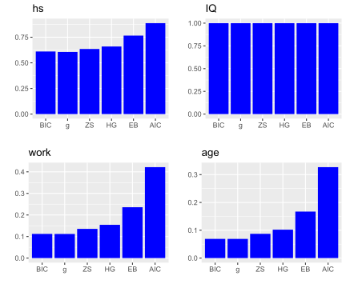 In the plots above, the \(x\)-axis lists all the prior distributions we consider, and the bar heights represent the posterior inclusion probability of each coefficient, i.e., \(p(\beta_i\neq 0)\).
We can see that mother’s IQ score is included almost as probability 1 in all priors. So all methods agree that we should include variable IQ. Mother’s high school status also has probability of more than 0.5 in each prior, suggesting that we may also consider including the variable hs. However, mother’s work status and mother’s age have much lower posterior inclusion probability in all priors. From left to right in each bar plot, we see that method BIC is the most conservative method (meaning it will exclude the most variables), while AIC is being the less conservative method.
## R Demo on BAS Package
In this section, we will apply Bayesian model selection and model averaging on the US crime data set UScrime using the BAS package. We will introduce some additional diagnostic plots, and talk about the effect of multicollinearity in model uncertainty.
The UScrime Data Set and Data Processing
We will demo the BAS commands using the US crime data set in the R libarry MASS.
# Load library and data set
library(MASS)##
## Attaching package: 'MASS'## The following object is masked from 'package:dplyr':
##
## selectdata(UScrime)This data set contains data on 47 states of the US for the year of 1960. The response variable \(Y\) is the rate of crimes in a particular category per head of population of each state. There are 15 potential explanatory variables with values for each of the 47 states related to crime and other demographics. Here is the table of all the potential explanatory variables and their descriptions.
| Variable | Description |
|---|---|
M |
Percentage of males aged 14-24 |
So |
Indicator variable for southern states |
Ed |
Mean years of schooling |
Po1 |
Police expenditure in 1960 |
Po2 |
Police expenditure in 1959 |
LF |
Labour force participation rate |
M.F |
Number of males per 1000 females |
Pop |
State population |
NW |
Number of non-whites per 1000 people |
U1 |
Unemployment rate of urban males aged 14-24 |
U2 |
Unemployment rate of urban males aged 35-39 |
GDP |
Gross domestic product per head |
Ineq |
Income inequality |
Prob |
Probability of imprisonment |
Time |
Average time served in state prisons |
We may use the summary function to describe each variable in the data set.
summary(UScrime)## M So Ed Po1
## Min. :119.0 Min. :0.0000 Min. : 87.0 Min. : 45.0
## 1st Qu.:130.0 1st Qu.:0.0000 1st Qu.: 97.5 1st Qu.: 62.5
## Median :136.0 Median :0.0000 Median :108.0 Median : 78.0
## Mean :138.6 Mean :0.3404 Mean :105.6 Mean : 85.0
## 3rd Qu.:146.0 3rd Qu.:1.0000 3rd Qu.:114.5 3rd Qu.:104.5
## Max. :177.0 Max. :1.0000 Max. :122.0 Max. :166.0
## Po2 LF M.F Pop
## Min. : 41.00 Min. :480.0 Min. : 934.0 Min. : 3.00
## 1st Qu.: 58.50 1st Qu.:530.5 1st Qu.: 964.5 1st Qu.: 10.00
## Median : 73.00 Median :560.0 Median : 977.0 Median : 25.00
## Mean : 80.23 Mean :561.2 Mean : 983.0 Mean : 36.62
## 3rd Qu.: 97.00 3rd Qu.:593.0 3rd Qu.: 992.0 3rd Qu.: 41.50
## Max. :157.00 Max. :641.0 Max. :1071.0 Max. :168.00
## NW U1 U2 GDP
## Min. : 2.0 Min. : 70.00 Min. :20.00 Min. :288.0
## 1st Qu.: 24.0 1st Qu.: 80.50 1st Qu.:27.50 1st Qu.:459.5
## Median : 76.0 Median : 92.00 Median :34.00 Median :537.0
## Mean :101.1 Mean : 95.47 Mean :33.98 Mean :525.4
## 3rd Qu.:132.5 3rd Qu.:104.00 3rd Qu.:38.50 3rd Qu.:591.5
## Max. :423.0 Max. :142.00 Max. :58.00 Max. :689.0
## Ineq Prob Time y
## Min. :126.0 Min. :0.00690 Min. :12.20 Min. : 342.0
## 1st Qu.:165.5 1st Qu.:0.03270 1st Qu.:21.60 1st Qu.: 658.5
## Median :176.0 Median :0.04210 Median :25.80 Median : 831.0
## Mean :194.0 Mean :0.04709 Mean :26.60 Mean : 905.1
## 3rd Qu.:227.5 3rd Qu.:0.05445 3rd Qu.:30.45 3rd Qu.:1057.5
## Max. :276.0 Max. :0.11980 Max. :44.00 Max. :1993.0However, these variables have been pre-processed for modeling purpose, so the summary statistics may not be so meaningful. The values of all these variables have been aggregated over each state, so this is a case of ecological regression. We will not model directly the rate for a person to commit a crime. Instead, we will use the total number of crimes and average values of predictors at the state level to predict the total crime rate of each state.
We transform the variables using the natural log function, except the indicator variable So (2nd column of the data set). We perform this transformation based on the analysis of this data set.7 Notice that So is already a numeric variable (1 indicating Southern state and 0 otherwise), not as a categorical variable. Hence we do not need any data processing of this variable, unlike mother’s high school status hs and mother’s work status work in the kid’s cognitive score data set.
UScrime[,-2] = log(UScrime[,-2])Bayesian Models and Diagnostics
We run bas.lm function from the BAS package. We first run the full model and use this information for later decision on what variables to include. Here we have 15 potential predictors. The total number of models is\(\ 2^{15} = 32768\). This is not a very large number and BAS can enumerate all the models pretty quickly. However, we want to illustrate how to explore models using stochastic methods. Hence we set argument method = MCMC inside the bas.lm function. We also use the Zellner-Siow cauchy prior for the prior distributions of the coefficients in this regression.
library(BAS)
crime.ZS = bas.lm(y ~ ., data=UScrime,
prior="ZS-null", modelprior=uniform(), method = "MCMC") BAS will run the MCMC sampler until the number of unique models in the sample exceeds \(\text{number of models} = 2^{p}\) (when \(p < 19\)) or until the number of MCMC iterations exceeds \(2\times\text{number of models}\) by default, whichever is smaller. Here \(p\) is the number of predictors.
Diagnostic Plots
To analyze the result, we first look at the diagnostic plot using diagnostics function and see whether we have run the MCMC exploration long enough so that the posterior inclusion probability (pip) has converged.
diagnostics(crime.ZS, type="pip", col = "blue", pch = 16, cex = 1.5)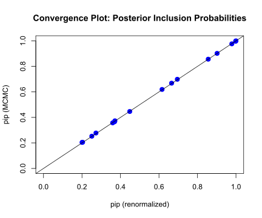
In this plot, the \(x\)-axis is the renormalized posterior inclusion probability (pip) of each coefficient \(\beta_i,\ i=1,\cdots, 15\) in this model. This can be calculated as \[\begin{equation} p(\beta_i\neq 0~|~\text{data}) = \sum_{M_m\in\text{ model space}}I(X_i\in M_m)\left(\frac{\text{BF}[M_m:M_0]\text{Odd}[M_m:M_0]}{\displaystyle \sum_{M_j}\text{BF}[M_j:M_0]\text{Odd}[M_j:M_0]}\right). \tag{28} \end{equation}\]
Here, \(X_i\) is the \(i\)th predictor variable, and \(I(X_i\in M_m)\) is the indicator function which is 1 if \(X_i\) is included in model \(M_m\) and 0 if \(X_i\) is not included. The first \(\Sigma\) notation indicates that we sum over all models \(M_m\) in the model space. And we use \[\begin{equation} \frac{\text{BF}[M_m:M_0]\text{Odd}[M_m:M_0]}{\displaystyle \sum_{M_j}\text{BF}[M_j:M_0]\text{Odd}[M_j:M_0]} \tag{29} \end{equation}\] as the weights. You may recognize that the numerator of (29) is exactly the ratio of the posterior probability of model \(M_m\) over the posterior probability of the null model \(M_0\), i.e., the posterier odd \(\PO[M_m:M_0]\). We devide the posterior odd by the total sum of posterior odds of all models in the model space, to make sure these weights are between 0 and 1. The weight in Equation (29) represents the posterior probability of the model \(M_m\) after seeing the data \(p(M_m~|~\text{data})\), the one we used in Section ??. So Equation (28) is the theoretical calculation of pip, which can be rewrited as \[ p(\beta_i\neq 0~|~\text{data}) = \sum_{M_m\in \text{ model space}}I(X_i\in M_m)p(M_m~|~\text{data}). \] The null model \(M_0\), as we recall, is the model that only includes the intercept.
On the \(y\)-axis of the plot, we lay out the posterior inclusion probability of coefficient \(\beta_i\), which is calculated using \[ p(\beta_i\neq 0~|~\text{data}) = \frac{1}{J}\sum_{j=1}^J I(X_i\in M^{(j)}).\] Here \(J\) is the total number of models that we sample using MCMC; each model is denoted as \(M^{(j)}\) (some models may repeat themselves in the sample). We count the frequency of variable \(X_i\) occuring in model \(M^{(j)}\), and divide this number by the total number of models \(J\). This is a frequentist approach to approximate the posterior probability of including \(X_i\) after seeing the data.
When all points are on the 45 degree diagonal, we say that the posterior inclusion probability of each variable from MCMC have converged well enough to the theoretical posterior inclusion probability.
We can also use diagnostics function to see whether the model posterior probability has converged:
diagnostics(crime.ZS, type = "model", col = "blue", pch = 16, cex = 1.5)
We can see that some of the points still fall slightly away from the 45 degree diagonal line. This may suggest we should increase the number of MCMC iterations. We may do that by imposing the argument on MCMC.iterations inside the bas.lm function
# Re-run regression using larger number of MCMC iterations
crime.ZS = bas.lm(y ~ ., data = UScrime,
prior = "ZS-null", modelprior = uniform(),
method = "MCMC", MCMC.iterations = 10 ^ 6)
# Plot diagnostics again
diagnostics(crime.ZS, type = "model", col = "blue", pch = 16, cex = 1.5)
With more number of iterations, we see that most points stay in the 45 degree diagonal line, meaing the posterior inclusion probability from the MCMC method has mostly converged to the theoretical posterior inclusion probability.
We will next look at four other plots of the BAS object, crime.ZS.
Residuals Versus Fitted Values Using BMA
The first plot is the residuals over the fitted value under Bayesian model averaging results.
plot(crime.ZS, which = 1, add.smooth = F,
ask = F, pch = 16, sub.caption="", caption="")
abline(a = 0, b = 0, col = "darkgrey", lwd = 2)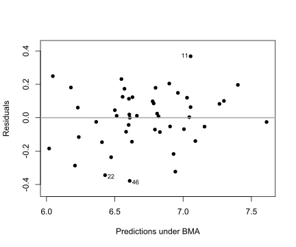
We can see that the residuals lie around the dash line \(y=0\), and has a constant variance. Observations 11, 22, and 46 may be the potential outliers, which are indicated in the plot.
Cumulative Sampled Probability
The second plot shows the cumulative sampled model probability.
plot(crime.ZS, which=2, add.smooth = F, sub.caption="", caption="")
We can see that after we have discovered about 5,000 unique models with MCMC sampling, the probability is starting to level off, indicating that these additional models have very small probability and do not contribute substantially to the posterior distribution. These probabilities are proportional to the product of marginal likelihoods of models and priors, \(p(\text{data}~|~M_m)p(M_m)\), rather than Monte Carlo frequencies.
Model Complexity
The third plot is the model size versus the natural log of the marginal likelihood, or the Bayes factor, to compare each model to the null model.
plot(crime.ZS, which=3, ask=F, caption="", sub.caption="")
We see that the models with the highest Bayes factors or logs of marginal likelihoods have around 8 or 9 predictors. The null model has a log of marginal likelihood of 0, or a Bayes factor of 1.
Marginal Inclusion Probability
Finally, we have a plot showing the importance of different predictors.
plot(crime.ZS, which = 4, ask = F, caption = "", sub.caption = "",
col.in = "blue", col.ex = "darkgrey", lwd = 3)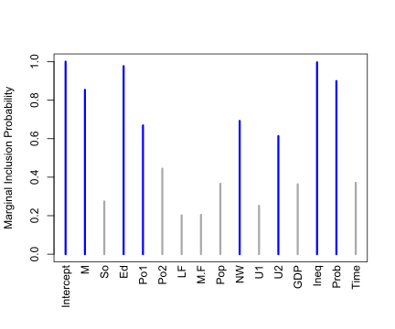
The lines in blue correspond to the variables where the marginal posterior inclusion probability (pip), is greater than 0.5, suggesting that these variables are important for prediction. The variables represented in grey lines have posterior inclusion probability less than 0.5. Small posterior inclusion probability may arise when two or more variables are highly correlated, similar to large \(p\)-values with multicollinearity. So we should be cautious to use these posterior inclusion probabilities to eliminate variables.
Model Space Visualization
To focus on the high posterior probability models, we can look at the image of the model space.
image(crime.ZS, rotate = F)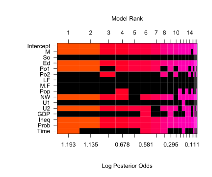
By default, we only include the top 20 models. An interesting feature of this plot is, that whenever Po1, the police expenditures in 1960, is included, Po2, the police expenditures in 1959, will be excluded from the model, and vice versa.
out = cor(UScrime$Po1, UScrime$Po2)
out ## [1] 0.9933688Calculating the correlation between the two variables, we see that that Po1 and Po2 are highly correlated with positive correlation 0.993.
Posterior Uncertainty in Coefficients
Due to the interesting inclusion relationship between Po1 and Po2 in the top 20 models, we extract the two coefficients under Bayesian model averaging and take a look at the plots for the coefficients for Po1 and Po2.
# Extract coefficients
coef.ZS=coef(crime.ZS)
# Po1 and Po2 are in the 5th and 6th columns in UScrime
par(mfrow = c(1,2))
plot(coef.ZS, subset = c(5:6),
col.lab = "darkgrey", col.axis = "darkgrey", col = "darkgrey", ask = F)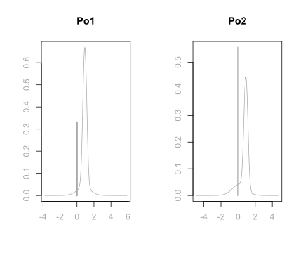
Under Bayesian model averaging, there is more mass at 0 for Po2 than Po1, giving more posterior inclusion probability for Po1. This is also the reason why in the marginal posterior plot of variable importance, Po1 has a blue line while Po2 has a grey line. When Po1 is excluded, the distributions of other coefficients in the model, except the one for Po2, will have similar distributions as when both Po1 and Po2 are in the model. However, when both predictors are included, the adjusted coefficient for Po2 has more support on negative values, since we are over compensating for having both variables included in the model. In extreme cases of correlations, one may find that the coefficient plot is multimodal. If this is the case, the posterior mean may not be in the highest probability density credible interval, and this mean is not necessarily an informative summary. We will discuss more in the next section about making decisions on highly correlated variables.
We can read the credible intervals of each variable using the confint function on the coefficient object coef.ZS of the model. Here we round the results in 4 decimal places.
round(confint(coef.ZS), 4)## 2.5% 97.5% beta
## Intercept 6.6687 6.7823 6.7249
## M 0.0000 2.1610 1.1450
## So -0.0513 0.3199 0.0356
## Ed 0.6378 3.1680 1.8606
## Po1 -0.0065 1.4330 0.6041
## Po2 -0.1299 1.4369 0.3148
## LF -0.4673 1.0385 0.0588
## M.F -2.4347 1.7917 -0.0273
## Pop -0.1294 0.0040 -0.0223
## NW 0.0000 0.1649 0.0665
## U1 -0.4960 0.3610 -0.0246
## U2 -0.0016 0.6628 0.2069
## GDP -0.0019 1.2322 0.2076
## Ineq 0.6765 2.1161 1.3914
## Prob -0.4072 0.0000 -0.2152
## Time -0.5232 0.0331 -0.0843
## attr(,"Probability")
## [1] 0.95
## attr(,"class")
## [1] "confint.bas"Prediction
We can use the usual predict function that we used for lm objects to obtain prediction from the BAS object crime.ZS. However, since we have different models to choose from under the Bayesian framework, we need to first specify which particular model we use to obtain the prediction. For example, if we would like to use the Bayesian model averaging results for coefficients to obtain predictions, we would specify the estimator argument in the predict function like the following
crime.BMA = predict(crime.ZS, estimator = "BMA", se.fit = TRUE)The fitted values can be obtained using the fit attribute of crime.BMA. We have transposed the fitted values into a vector to better present all the values.
fitted = crime.BMA$fit
as.vector(fitted)## [1] 6.661631 7.298878 6.178628 7.611009 7.054662 6.513674 6.784484 7.266292
## [9] 6.629354 6.601315 7.054880 6.570698 6.472944 6.582517 6.556996 6.904668
## [17] 6.229243 6.809685 6.943121 6.961983 6.609332 6.428658 6.898718 6.777020
## [25] 6.406076 7.400874 6.019326 7.156832 7.089617 6.500307 6.208417 6.606196
## [33] 6.798152 6.820010 6.625396 7.028713 6.793663 6.363562 6.603183 7.045303
## [41] 6.548430 6.046330 6.930121 7.006045 6.236269 6.608770 6.830020We may use these fitted values for further error calculations. We will talk about decision making on models and how to obtain predictions under different models in the next section. ## Decision Making Under Model Uncertainty
We are closing this chapter by presenting the last topic, decision making under model uncertainty. We have seen that under the Bayesian framework, we can use different prior distributions for coefficients, different model priors for models, and we can even use stochastic exploration methods for complex model selections. After selecting these coefficient priors and model priors, we can obtain the marginal posterior inclusion probability for each variable in the full model, which may provide some information about whether or not to include a particular variable in the model for further model analysis and predictions. With all the information presented in the results, which model would be the most appropriate model?
In this section, we will talk about different methods for selecting models and decision making for posterior distributions and predictions. We will illustrate this process using the US crime data UScrime as an example and process it using the BAS package.
We first prepare the data as in the last section and run bas.lm on the full model
data(UScrime, package="MASS")
# take the natural log transform on the variables except the 2nd column `So`
UScrime[, -2] = log(UScrime[, -2])
# run Bayesian linear regression
library(BAS)
crime.ZS = bas.lm(y ~ ., data = UScrime,
prior = "ZS-null", modelprior = uniform()) Model Choice
For Bayesian model choice, we start with the full model, which includes all the predictors. The uncertainty of selecting variables, or model uncertainty that we have been discussing, arises when we believe that some of the explanatory variables may be unrelated to the response variable. This corresponds to setting a regression coefficient \(\beta_j\) to be exactly zero. We specify prior distributions that reflect our uncertainty about the importance of variables. We then update the model based on the data we obtained, resulting in posterior distributions over all models and the coefficients and variances within each model.
Now the question has become, how to select a single model from the posterior distribution and use it for furture inference? What are the objectives from inference?
BMA Model
We do have a single model, the one that is obtained by averaging all models using their posterior probabilities, the Bayesian model averaging model, or BMA. This is referred to as a hierarchical model and it is composed of many simpler models as building blocks. This represents the full posterior uncertainty after seeing the data.
We can obtain the posterior predictive mean by using the weighted average of all of the predictions from each sub model
\[\hat{\mu} = E[\hat{Y}~|~\text{data}] = \sum_{M_m \in \text{ model space}}\hat{Y}\times p(M_m~|~\text{data}).\]
This prediction is the best under the squared error loss \(L_2\). From BAS, we can obtain predictions and fitted values using the usual predict and fitted functions. To specify which model we use for these results, we need to include argument estimator.
crime.BMA = predict(crime.ZS, estimator = "BMA")
mu_hat = fitted(crime.ZS, estimator = "BMA")crime.BMA, the object obtained by the predict function, has additional slots storing results from the BMA model.
names(crime.BMA)## [1] "fit" "Ybma" "Ypred" "postprobs" "se.fit"
## [6] "se.pred" "se.bma.fit" "se.bma.pred" "df" "best"
## [11] "bestmodel" "best.vars" "estimator"Plotting the two sets of fitted values, one obtained from the fitted function, another obtained from the fit attribute of the predict object crime.BMA, we see that they are in perfect agreement.
# Load library and prepare data frame
library(ggplot2)
output = data.frame(mu_hat = mu_hat, fitted = crime.BMA$fit)
# Plot result from `fitted` function and result from `fit` attribute
ggplot(data = output, aes(x = mu_hat, y = fitted)) +
geom_point(pch = 16, color = "blue", size = 3) +
geom_abline(intercept = 0, slope = 1) +
xlab(expression(hat(mu[i]))) + ylab(expression(hat(Y[i])))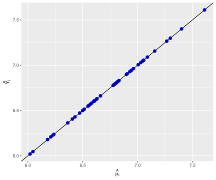
Highest Probability Model
If our objective is to learn what is the most likely model to have generated the data using a 0-1 loss \(L_0\), then the highest probability model (HPM) is optimal.
crime.HPM = predict(crime.ZS, estimator = "HPM")The variables selected from this model can be obtained using the bestmodel attribute from the crime.HPM object. We extract the variable names from the crime.HPM
crime.HPM$best.vars## [1] "Intercept" "M" "Ed" "Po1" "NW" "U2"
## [7] "Ineq" "Prob" "Time"We see that, except the intercept, which is always in any models, the highest probability model also includes M, percentage of males aged 14-24; Ed, mean years of schooling; Po1, police expenditures in 1960; NW, number of non-whites per 1000 people; U2, unemployment rate of urban males aged 35-39; Ineq, income inequlity; Prob, probability of imprisonment, and Time, average time in state prison.
To obtain the coefficients and their posterior means and posterior standard deviations, we tell give an optional argument to coef to indicate that we want to extract coefficients under the HPM.
# Select coefficients of HPM
# Posterior means of coefficients
coef.crime.ZS = coef(crime.ZS, estimator="HPM")
coef.crime.ZS##
## Marginal Posterior Summaries of Coefficients:
##
## Using HPM
##
## Based on the top 1 models
## post mean post SD post p(B != 0)
## Intercept 6.72494 0.02623 1.00000
## M 1.42422 0.42278 0.85357
## So 0.00000 0.00000 0.27371
## Ed 2.14031 0.43094 0.97466
## Po1 0.82141 0.15927 0.66516
## Po2 0.00000 0.00000 0.44901
## LF 0.00000 0.00000 0.20224
## M.F 0.00000 0.00000 0.20497
## Pop 0.00000 0.00000 0.36961
## NW 0.10491 0.03821 0.69441
## U1 0.00000 0.00000 0.25258
## U2 0.27823 0.12492 0.61494
## GDP 0.00000 0.00000 0.36012
## Ineq 1.19269 0.27734 0.99654
## Prob -0.29910 0.08724 0.89918
## Time -0.27616 0.14574 0.37180We can also obtain the posterior probability of this model using
postprob.HPM = crime.ZS$postprobs[crime.HPM$best]
postprob.HPM## [1] 0.01824728we see that this highest probability model has posterior probability of only 0.018. There are many models that have comparable posterior probabilities. So even this model has the highest posterior probability, we are still pretty unsure about whether it is the best model.
Median Probability Model
Another model that is frequently reported, is the median probability model (MPM). This model includes all predictors whose marginal posterior inclusion probabilities are greater than 0.5. If the variables are all uncorrelated, this will be the same as the highest posterior probability model. For a sequence of nested models such as polynomial regression with increasing powers, the median probability model is the best single model for prediction.
However, since in the US crime example, Po1 and Po2 are highly correlated, we see that the variables included in MPM are slightly different than the variables included in HPM.
crime.MPM = predict(crime.ZS, estimator = "MPM")
crime.MPM$best.vars## [1] "Intercept" "M" "Ed" "Po1" "NW" "U2"
## [7] "Ineq" "Prob"As we see, this model only includes 7 variables, M, Ed, Po1, NW, U2, Ineq, and Prob. It does not include Time variable as in HPM.
When there are correlated predictors in non-nested models, MPM in general does well. However, if the correlations among variables increase, MPM may miss important variables as the correlations tend to dilute the posterior inclusing probabilities of related variables.
To obtain the coefficients in the median probability model, we specify that the estimator is now “MPM”:
# Obtain coefficients of the Median Probabilty Model
coef(crime.ZS, estimator = "MPM")##
## Marginal Posterior Summaries of Coefficients:
##
## Using MPM
##
## Based on the top 1 models
## post mean post SD post p(B != 0)
## Intercept 6.72494 0.02713 1.00000
## M 1.46180 0.43727 1.00000
## So 0.00000 0.00000 0.00000
## Ed 2.30642 0.43727 1.00000
## Po1 0.87886 0.16204 1.00000
## Po2 0.00000 0.00000 0.00000
## LF 0.00000 0.00000 0.00000
## M.F 0.00000 0.00000 0.00000
## Pop 0.00000 0.00000 0.00000
## NW 0.08162 0.03743 1.00000
## U1 0.00000 0.00000 0.00000
## U2 0.31053 0.12816 1.00000
## GDP 0.00000 0.00000 0.00000
## Ineq 1.18815 0.28710 1.00000
## Prob -0.18401 0.06466 1.00000
## Time 0.00000 0.00000 0.00000Best Predictive Model
If our objective is prediction from a single model, the best choice is to find the model whose predictions are closest to those given by BMA. “Closest” could be based on squared error loss for predictions, or be based on any other loss functions. Unfortunately, there is no nice expression for this model. However, we can still calculate the loss for each of our sampled models to try to identify this best predictive model, or BPM.
Using the squared error loss, we find that the best predictive model is the one whose predictions are closest to BMA.
crime.BPM = predict(crime.ZS, estimator = "BPM")
crime.BPM$best.vars## [1] "Intercept" "M" "So" "Ed" "Po1" "Po2"
## [7] "M.F" "NW" "U2" "Ineq" "Prob"The best predictive model includes not only the 7 variables that MPM includes, but also M.F, number of males per 1000 females, and Po2, the police expenditures in 1959.
Using the se.fit = TRUE option with predict we can calculate standard deviations for the predictions or for the mean. Then we can use this as input for the confint function for the prediction object. Here we only show the results of the first 20 data points.
# This code chunk is for function which provides options to show partial results
library(knitr)
# the default output hook
hook_output <- knit_hooks$get('output')
knit_hooks$set(output = function(x, options) {
if (!is.null(n <- options$out.lines)) {
n <- as.numeric(n)
x <- unlist(stringr::str_split(x, "\n"))
nx <- length(x)
x <- x[pmin(n,nx)]
if(min(n) > 1)
x <- c(paste(options$comment, "[...]"), x)
if(max(n) < nx)
x <- c(x, paste(options$comment, "[...]"))
x <- paste(c(x, "\n"), collapse = "\n")
}
hook_output(x, options)
})crime.BPM = predict(crime.ZS, estimator = "BPM", se.fit = TRUE)
crime.BPM.conf.fit = confint(crime.BPM, parm = "mean")
crime.BPM.conf.pred = confint(crime.BPM, parm = "pred")
cbind(crime.BPM$fit, crime.BPM.conf.fit, crime.BPM.conf.pred)
## 2.5% 97.5% mean 2.5% 97.5% pred
## [1,] 6.668988 6.513238 6.824738 6.668988 6.258715 7.079261 6.668988
## [2,] 7.290854 7.151787 7.429921 7.290854 6.886619 7.695089 7.290854
## [3,] 6.202166 6.039978 6.364354 6.202166 5.789406 6.614926 6.202166
## [4,] 7.661307 7.490608 7.832006 7.661307 7.245129 8.077484 7.661307
## [5,] 7.015570 6.847647 7.183493 7.015570 6.600523 7.430617 7.015570
## [6,] 6.469547 6.279276 6.659818 6.469547 6.044966 6.894128 6.469547
## [7,] 6.776133 6.555130 6.997135 6.776133 6.336920 7.215346 6.776133
## [8,] 7.299560 7.117166 7.481955 7.299560 6.878450 7.720670 7.299560
## [9,] 6.614927 6.482384 6.747470 6.614927 6.212890 7.016964 6.614927
## [10,] 6.596912 6.468988 6.724836 6.596912 6.196374 6.997449 6.596912
## [11,] 7.032834 6.877582 7.188087 7.032834 6.622750 7.442918 7.032834
## [12,] 6.581822 6.462326 6.701317 6.581822 6.183896 6.979748 6.581822
## [13,] 6.467921 6.281998 6.653843 6.467921 6.045271 6.890571 6.467921
## [14,] 6.566239 6.403813 6.728664 6.566239 6.153385 6.979092 6.566239
## [15,] 6.550129 6.388987 6.711270 6.550129 6.137779 6.962479 6.550129
## [16,] 6.888592 6.746097 7.031087 6.888592 6.483166 7.294019 6.888592
## [17,] 6.252735 6.063944 6.441526 6.252735 5.828815 6.676654 6.252735
## [18,] 6.795764 6.564634 7.026895 6.795764 6.351369 7.240160 6.795764
## [19,] 6.945687 6.766289 7.125086 6.945687 6.525866 7.365508 6.945687
## [20,] 7.000331 6.840374 7.160289 7.000331 6.588442 7.412220 7.000331
## [...]
The option estimator = "BPM is not yet available in coef(), so we will need to work a little harder to get the coefficients by refitting the BPM.
First we need to extract a vector of zeros and ones representing which variables are included in the BPM model.
# Extract a binary vector of zeros and ones for the variables included
# in the BPM
BPM = as.vector(which.matrix(crime.ZS$which[crime.BPM$best],
crime.ZS$n.vars))
BPM## [1] 1 1 1 1 1 1 0 1 0 1 0 1 0 1 1 0Next, we will refit the model with bas.lm using the optional argument bestmodel = BPM. In general, this is the starting model for the stochastic search, which is helpful for starting the MCMC.
We will also specify that want to have 1 model by setting n.models = 1. In this way, bas.lm starts with the BPM and fits only that model.
# Re-run regression and specify `bestmodel` and `n.models`
crime.ZS.BPM = bas.lm(y ~ ., data = UScrime,
prior = "ZS-null",
modelprior = uniform(),
bestmodel = BPM, n.models = 1)Now since we have only one model in our new object representing the BPM, we can use the coef function to obtain the summaries.
# Obtain coefficients of MPM
coef(crime.ZS.BPM)##
## Marginal Posterior Summaries of Coefficients:
##
## Using BMA
##
## Based on the top 1 models
## post mean post SD post p(B != 0)
## Intercept 6.72494 0.02795 1.00000
## M 1.28189 0.49219 1.00000
## So 0.09028 0.11935 1.00000
## Ed 2.24197 0.54029 1.00000
## Po1 0.70543 0.75949 1.00000
## Po2 0.16669 0.76781 1.00000
## LF 0.00000 0.00000 0.00000
## M.F 0.55521 1.22456 1.00000
## Pop 0.00000 0.00000 0.00000
## NW 0.06649 0.04244 1.00000
## U1 0.00000 0.00000 0.00000
## U2 0.28567 0.13836 1.00000
## GDP 0.00000 0.00000 0.00000
## Ineq 1.15756 0.30841 1.00000
## Prob -0.21012 0.07452 1.00000
## Time 0.00000 0.00000 0.00000Note the posterior probabilities that coefficients are zero is either zero or one since we have selected a model.
Comparison of Models
After discussing all 4 different models, let us compare their prediction results.
# Set plot settings
par(cex = 1.8, cex.axis = 1.8, cex.lab = 2, mfrow = c(2,2), mar = c(5, 5, 3, 3),
col.lab = "darkgrey", col.axis = "darkgrey", col = "darkgrey")
# Load library and plot paired-correlations
library(GGally)
ggpairs(data.frame(HPM = as.vector(crime.HPM$fit),
MPM = as.vector(crime.MPM$fit),
BPM = as.vector(crime.BPM$fit),
BMA = as.vector(crime.BMA$fit))) 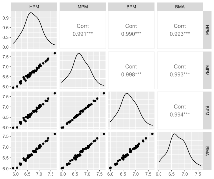
From the above paired correlation plots, we see that the correlations among them are extremely high. As expected, the single best predictive model (BPM) has the highest correlation with MPM, with a correlation of 0.998. However, the highest posterior model (HPM) and the Bayesian model averaging model (BMA) are nearly equally as good.
Prediction with New Data
Using the newdata option in the predict function, we can obtain prediction from a new data set. Here we pretend that UScrime is an another new data set, and we use BMA to obtain the prediction of new observations. Here we only show the results of the first 20 data points.
BMA.new = predict(crime.ZS, newdata = UScrime, estimator = "BMA",
se.fit = TRUE, nsim = 10000)
crime.conf.fit.new = confint(BMA.new, parm = "mean")
crime.conf.pred.new = confint(BMA.new, parm = "pred")
# Show the combined results compared to the fitted values in BPM
cbind(crime.BPM$fit, crime.conf.fit.new, crime.conf.pred.new)
## 2.5% 97.5% mean 2.5% 97.5% pred
## [1,] 6.668988 6.511029 6.815780 6.661770 6.278642 7.100182 6.661770
## [2,] 7.290854 7.137491 7.461855 7.298827 6.872579 7.712403 7.298827
## [3,] 6.202166 5.961461 6.400882 6.179308 5.730735 6.630020 6.179308
## [4,] 7.661307 7.378464 7.826481 7.610585 7.155874 8.055595 7.610585
## [5,] 7.015570 6.852673 7.259911 7.054238 6.599186 7.462053 7.054238
## [6,] 6.469547 6.292627 6.732761 6.514064 6.078801 6.972546 6.514064
## [7,] 6.776133 6.503858 7.063877 6.784846 6.301557 7.266160 6.784846
## [8,] 7.299560 7.044126 7.480983 7.266344 6.800003 7.688393 7.266344
## [9,] 6.614927 6.484359 6.782041 6.629448 6.227432 7.048349 6.629448
## [10,] 6.596912 6.466392 6.738982 6.601246 6.181023 7.001233 6.601246
## [11,] 7.032834 6.869461 7.241972 7.055003 6.607736 7.462386 7.055003
## [12,] 6.581822 6.413825 6.714531 6.570625 6.150600 6.986558 6.570625
## [13,] 6.467921 6.205606 6.719277 6.472327 6.014612 6.924743 6.472327
## [14,] 6.566239 6.400063 6.770166 6.582374 6.148809 7.003967 6.582374
## [15,] 6.550129 6.359214 6.756436 6.556880 6.131190 7.002942 6.556880
## [16,] 6.888592 6.744094 7.060227 6.905017 6.484966 7.334888 6.905017
## [17,] 6.252735 5.994733 6.472804 6.229073 5.758570 6.661390 6.229073
## [18,] 6.795764 6.545435 7.095830 6.809572 6.336860 7.287637 6.809572
## [19,] 6.945687 6.741712 7.130428 6.943294 6.520286 7.366765 6.943294
## [20,] 7.000331 6.785262 7.150731 6.961980 6.551834 7.404326 6.961980
## [...]
Summary
In this chapter, we have introduced one of the common stochastic exploration methods, Markov Chain Monte Carlo, to explore the model space to obtain approximation of posterior probability of each model when the model space is too large for theoretical enumeration. We see that model selection can be sensitive to the prior distributions of coefficients, and introduced Zellner’s \(g\)-prior so that we have to elicit only one hyper-parameter to specify the prior. Still model selection can be sensitive to the choice of \(g\) where values that are too large may unintentially lead to the null model receiving high probability in Bartlett’s paradox. To resolve this and other paradoxes related to the choice of \(g\), we recommend default choices that have improved robustness to prior misspecification such as the unit information \(g\)-prior, the Zellner-Siow Cauchy prior, and the hyper-\(g/n\) prior.
We then demonstrated a multiple linear regression process using the BAS package and the US crime data UScrime using the Zellner-Siow cauchy prior, and have tried to understand the importance of variables.
Finally, we have compared the prediction results from different models, such as the ones from Bayesian model average (BMA), the highest probability model (HPM), the median probability model (MPM), and the best predictive model (BPM). For the comparison, we have used the Zellner-Siow Cauchy prior. But of course there is not one single best prior that is the best overall. If you do have prior information about a variable, you should include it. If you expect that there should be many predictors related to the response variable \(Y\), but that each has a small effect, an alternate prior may be better. Also, think critically about whether model selection is important. If you believe that all the variables should be relevant but are worried about over fitting, there are alternative priors that will avoid putting probabilities on coefficients that are exactly zero and will still prevent over fitting by shrinkage of coefficients to prior means. Examples include the Bayesian lasso or Bayesian horseshoe.
There are other forms of model uncertainty that you may want to consider, such as linearity in the relationship between the predictors and the response, uncertainty about the presence of outliers, and uncertainty about the distribution of the response. These forms of uncertainty can be incorporated by expanding the models and priors similar to what we have covered here.
Multiple linear regression is one of the most widely used statistical methods, however, this is just the tip of the iceberg of what you can do with Bayesian methods.
References
\((\alpha, \beta)^T\) means we transpose the row vector \((\alpha, \beta)\) into a column vector \(\left(\begin{array}{c} \alpha \\ \beta \end{array}\right)\).↩︎
\(\Phi(-k)\) actually represents the area of the lower tail under the standard Normal distribution curve \(k\) standard deviations away from the mean 0.↩︎
Under the normal assumption, the mean of the error is 0. Taking mean on both sides of equation (19) immediately gives \(\beta_0=\bar{y}_{\text{score}}\).↩︎
Note:
as.numericis not necessary here. We useas.numericto keep the names of the levels of the two variables short.↩︎Recall that the reference prior is the limiting case of the multivariate Normal-Gamma distribution.↩︎
A parsimonious model is a model that accomplishes a desired level of explanation or prediction with as few predictor variables as possible. More discussion of parsimonious models can be found in Course 3 Linear Regression and Modeling.↩︎
More details can be found in @venables2013modern.↩︎